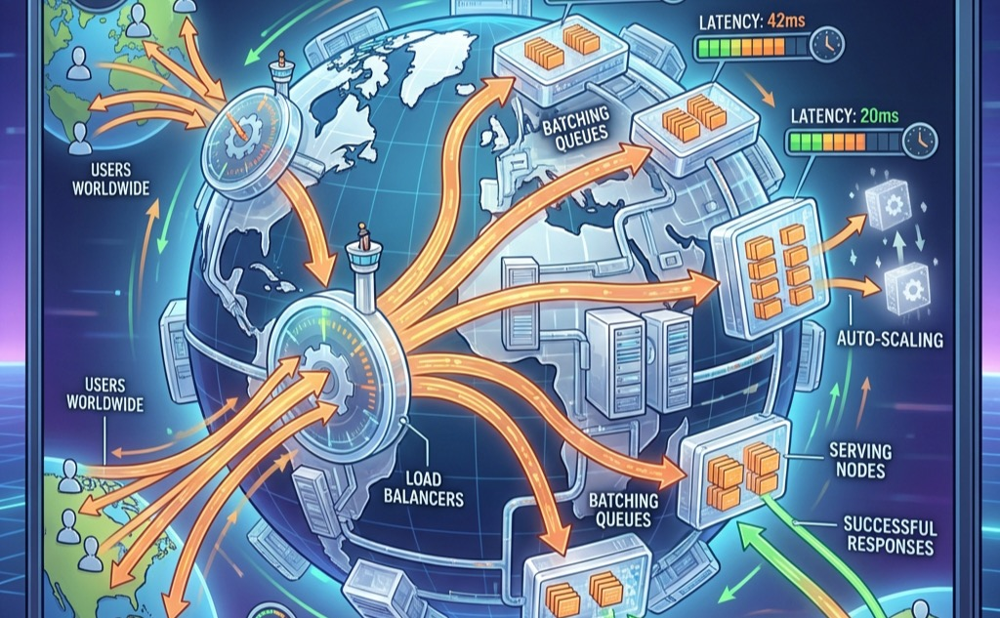

The Economics and Architecture of Inference
Inference at Scale

Purpose
Why does inference cost eventually dwarf training cost, and what does this mean for system design?
Training a model is a one-time expense; serving it is perpetual. A model trained once for millions of dollars may serve billions of requests over its lifetime, each request incurring compute, memory, and energy costs that accumulate into operational expenses far exceeding the original training investment. This economic inversion, where deployment costs dominate development costs, reshapes every engineering decision.
The Serving Cost Dominance Law (Principle \(\ref{nte-serving-cost-dominance}\)) captures this economic reality: over a successful model’s lifetime, Inference OpEx exceeds Training CapEx by orders of magnitude. Optimization efforts should be disproportionately focused on the inference path, even if they increase training cost or complexity.
Optimizations that shave milliseconds from inference latency or percentage points from GPU utilization compound across billions of requests into massive savings or costs. Performance Engineering (Performance Engineering) developed the optimization toolkit: fusion, precision, compilation, speculative decoding. This chapter applies those tools to build serving systems that handle millions of requests under strict latency budgets. Reliability requirements intensify because downtime during serving means lost revenue and broken user experiences, not merely delayed experiments. The architecture that was optimal for training (large batches, high throughput, tolerance for latency variance) becomes the architecture that bankrupts operations or frustrates users at serving time. Inference at scale is where ML systems live or die economically.
Learning Objectives
- Quantify why serving cost dominates training cost over a model’s lifetime using the total cost of serving equation
- Design batching strategies matched to model architectures, distinguishing static batching for vision models from continuous batching for LLMs and feature-parallel batching for recommendation systems
- Apply the serving hierarchy framework (request, replica, service, platform) to systematically identify and resolve inference bottlenecks at each level
- Compare model sharding strategies (tensor parallelism, pipeline parallelism, expert parallelism, embedding sharding) by their communication patterns and latency-memory tradeoffs
- Analyze load balancing algorithms using queuing theory to explain why power-of-two-choices achieves exponentially better performance than random assignment
- Recognize KV cache memory challenges in LLM serving and understand how techniques like continuous batching and memory management enable high GPU utilization
- Design autoscaling policies that account for GPU cold start latency and balance cost optimization with SLO guarantees
Imagine a language model that costs $5 million to train over two months. Once deployed to a global user base serving thousands of queries per second, that same model burns through $5 million in inference compute every single week. The economics of inference force a radical architectural shift: we are no longer optimizing a temporary batch job; we are operating a perpetual, latency-sensitive factory.
Performance Engineering established how to maximize throughput on individual forward passes through operator fusion, precision engineering, and graph compilation. The next challenge emerges when a single optimized model must serve thousands of concurrent users across a globally distributed fleet. Single-machine inference optimization, including batching, caching, model optimization, and hardware acceleration, provides the building blocks. Distributed approaches become necessary when those techniques reach their limits.
Distributed inference systems must solve problems that do not exist at single-machine scale. Load balancing1 becomes critical when requests must be distributed across hundreds of GPU instances while maintaining latency guarantees. Request routing must account for model-specific characteristics: recommendation systems with trillion-parameter embedding tables require different placement strategies than large language models that generate responses token by token. Autoscaling must anticipate demand fluctuations that can change request volume by orders of magnitude within minutes while maintaining latency bounds users expect.
1 Load Balancing (Inference): GPU inference requests range from 10 ms to 30+ seconds with high variance, unlike web requests that complete in uniform milliseconds. This variance invalidates round-robin and random assignment, forcing queue-depth-aware routing strategies that add monitoring overhead but prevent tail-latency blowups across heterogeneous GPU fleets.
The economics of inference at scale differ fundamentally from training economics. Training costs are dominated by compute time and can be amortized over the lifetime of the resulting model. Inference costs are directly tied to user traffic and revenue. An e-commerce recommendation system might serve millions of requests per second during peak shopping periods, with each request contributing directly to potential revenue. The cost of overprovisioning during quiet periods or underprovisioning during peaks translates immediately to business impact. Inference efficiency becomes a first-order concern in ways that training efficiency rarely achieves.
The remainder of this chapter develops the principles and techniques for building inference systems that operate efficiently, reliably, and economically at scale: when distributed inference becomes necessary, how to architect systems that maintain latency bounds under varying load, and how to optimize resource utilization so that serving cost does not erode the value the model creates.
When single-machine serving is insufficient
Three distinct signals indicate when distributed inference becomes necessary rather than merely optional. Table 1 categorizes these triggers by constraint type and corresponding strategy.
The first signal is memory exhaustion, which occurs when model parameters, key-value caches, or embedding tables exceed single-device capacity. A single NVIDIA H100 GPU provides 86GB of HBM32 memory. GPT-4 class models with hundreds of billions of parameters require 200–400 GB just for weights in FP16 precision, forcing distribution across multiple GPUs regardless of throughput requirements. Recommendation systems with trillion-parameter embedding tables face similar constraints: Meta’s Deep Learning Recommendation Model (DLRM)3 model stores embedding tables that require multiple terabytes of memory.
2 HBM3 (High Bandwidth Memory 3): 3D-stacked DRAM delivering 3.35 TB/s on the H100 vs. 2 TB/s for HBM2e on the A100. Because large language model (LLM) decode is memory-bandwidth-bound, this improvement translates directly into higher tokens-per-second and larger feasible batch sizes, making HBM generation the single most consequential variable in inference cost-per-token.
3 DLRM (Deep Learning Recommendation Model): Meta’s 2019 reference architecture separates dense features—GPU-bound multilayer perceptrons (MLPs)—from sparse features (CPU-bound embedding lookups), creating a hybrid serving topology. Embedding tables can exceed 100 TB, making DLRM memory-capacity-bound rather than compute-bound and forcing distribution strategies fundamentally different from LLM model parallelism.
Beyond memory constraints, throughput limitations emerge when request volume exceeds single-machine capacity even with optimal batching. Consider a recommendation system serving 100,000 queries per second with a 10 ms latency budget. If single-machine throughput peaks at 10,000 QPS, no amount of optimization on that machine can satisfy demand. Horizontal scaling across multiple replicas becomes mandatory.
Finally, strict latency requirements drive distribution when model execution time exceeds latency budgets even at batch size one. Large language models generating responses token by token face this constraint acutely. A 70-billion parameter model requires approximately 140 GB of memory and achieves roughly 30 tokens per second on a single GPU due to memory bandwidth limitations. Sharding the model across multiple GPUs enables parallel computation that reduces time-to-first-token below acceptable thresholds.
| Constraint | Single-Machine Limit | Example Workload | Distribution Strategy |
|---|---|---|---|
| Memory | 80 GB (H100) | GPT-4 (400 GB+) | Tensor/pipeline parallelism |
| Throughput | ~10K QPS (vision) | 100K QPS RecSys | Horizontal replication |
| Latency | Model execution time | 500 ms LLM TTFT | Model sharding |
The perceived responsiveness of interactive systems depends on both Time to First Token (TTFT)4 and Time Per Output Token (TPOT).
4 TTFT vs. TPOT: Time to First Token (prefill) determines the perceived responsiveness; Time Per Output Token (decode) determines the perceived reading speed. Humans read at 5–10 tokens/sec; if TPOT exceeds 50 ms, the user perceives the system as “stuttering,” even if TTFT was fast. This dual service level agreement (SLA) requirement forces schedulers to prioritize decode tokens over new prefill prompts.
Checkpoint 1.1: Distribution Strategy Selection
Verify your understanding of when to move from single-machine to distributed inference:
The fundamental inversion: Training vs. inference
The contrast between training and inference optimization extends beyond the basic throughput-vs.-latency distinction. Training optimizes for samples processed per hour and tolerates latency variations. Inference optimizes for response time and must meet strict latency bounds. At scale, this inversion manifests in system architecture, resource allocation, and operational priorities. Table 2 details six key system aspects where these differences emerge.
| Aspect | Distributed Training | Distributed Inference |
|---|---|---|
| Primary metric | Throughput (samples/hour) | Latency (P99 ms) |
| Acceptable variance | Hours | Milliseconds |
| State management | Checkpoints (periodic) | Session state (continuous) |
| Batch formation | Large, controlled | Request-driven, variable |
| Failure tolerance | Restart from checkpoint | Redirect without user impact |
| Cost structure | Fixed duration, variable rate | Variable duration, fixed SLO |
Training tolerates substantial latency variance because the optimization target is aggregate progress over hours or days. A training iteration that takes 2 seconds instead of the usual 1 second represents acceptable variation. An inference request that takes 2 seconds instead of 100 milliseconds represents catastrophic failure, potentially causing user abandonment or cascading timeouts in dependent services.
State management differs fundamentally. Training maintains model state (parameters, optimizer states) that evolves gradually and can be captured in periodic checkpoints. Inference often maintains session state (conversation history, key-value caches, user context) that must be preserved across requests and cannot tolerate the staleness that checkpoint-based recovery would introduce.
Failure handling diverges correspondingly. Training failures trigger checkpoint restoration and continuation, with minutes of lost progress being acceptable. Inference failures must be invisible to users. Requests redirect to healthy replicas, degraded results substitute for unavailable models, and SLOs must be maintained despite infrastructure instability.
The serving tax: Overhead of distribution
Distributing inference across multiple machines introduces overhead absent from single-machine serving. This “serving tax” must be understood and budgeted within latency constraints.
Network communication adds latency for every cross-machine interaction. Within a datacenter, network round-trip times range from 50–500 microseconds depending on topology and congestion. For model sharding that requires synchronization between GPUs on different machines, each synchronization point adds this overhead. A model sharded across 8 machines with 4 synchronization points per inference adds 200 microseconds to 2 milliseconds of network latency.
Serialization overhead compounds the problem by converting in-memory tensors to network-transmittable formats. While modern serialization libraries like FlatBuffers and Cap’n Proto5 minimize this cost, large activation tensors still require meaningful time to serialize and deserialize. A 1 GB activation tensor takes approximately 100 milliseconds to serialize, even with optimized libraries.
5 Zero-Copy Serialization: FlatBuffers (Google, 2014) and Cap’n Proto access wire-format data in place, eliminating the parse-allocate-copy cycle of Protocol Buffers or JavaScript Object Notation (JSON). For distributed inference with large activation tensors, this drops per-hop serialization overhead from milliseconds to microseconds, reclaiming latency budget that would otherwise consume 5–10 percent of a tight SLO.
Load balancer latency adds another layer. Requests must be routed to appropriate replicas, which requires examining request metadata, consulting routing tables, and forwarding to selected backends. Well-optimized load balancers add 100–500 microseconds; poorly configured ones can add milliseconds.
Coordination overhead emerges when requests require fan-out to multiple services. A recommendation system that queries a user model, item model, and ranking model in parallel must coordinate these queries and aggregate results. The coordination logic itself consumes CPU cycles and introduces latency variation.
The total serving tax often consumes 10–30 percent of the latency budget in distributed systems (Equation 1):
\[L_{\text{total}} = L_{\text{compute}} + L_{\text{network}} + L_{\text{serialization}} + L_{\text{coordination}} + L_{\text{queuing}} \tag{1}\]
Minimizing this tax requires co-locating communicating components, using high-bandwidth interconnects, and designing communication patterns that minimize round trips.
Serving cost dominates training cost
The serving tax quantified above consumes a fraction of the latency budget per request. The true economic impact of inference emerges when we consider cost over a model’s entire operational lifetime. Serving cost typically dominates training cost by orders of magnitude because training is a one-time capital expenditure (CapEx) while serving is a continuous operational expenditure (OpEx) that scales with user growth. The following worked example reveals the serving cost multiplier in practice.
Napkin Math 1.1: The Serving Cost Multiplier
Problem: You spent $2 Million training a 70B parameter model. You serve it to 1 million daily active users (DAU), each making 50 requests/day. Is training or serving the dominant cost over 1 year?
The Math:
- Training Cost: $2,000,000 (One-time).
- Inference Volume: \(1M \text{ users} \times 50 \text{ reqs} \times 365 \text{ days}\) \(\approx\) 18 Billion requests/year.
- Cost per Request: Assume a 70B model on H100 costs \(\approx \$0.001\) per request (input + output).
- Annual Serving Cost: \(18 \times 10^9 \times \$0.001 = \mathbf{\$18{,}000{,}000}\).
The Systems Conclusion: Serving costs 9\(\times\) more than training in just the first year. A 10 percent optimization in inference latency saves $1.8M—paying for the entire training run almost immediately.
The total cost of operating a model comprises training cost (a one-time expense) and serving cost (an ongoing expense) (Equation 2):
\[C_{\text{total}} = C_{\text{training}} + C_{\text{serving}} \times T_{\text{deployment}} \times Q_{\text{rate}} \tag{2}\]
where \(C_{\text{training}}\) is the one-time cost to train the model, \(C_{\text{serving}}\) is the cost per query served, \(T_{\text{deployment}}\) is the deployment duration in appropriate time units, and \(Q_{\text{rate}}\) is the query rate.
Napkin Math 1.2: The Serving Cost Multiplier
Scenario: Recommend-system model (DLRM).
Training Cost (\(C_{train}\))
- Hardware: 1,000 GPU-hours @ $3/hr = $3,000
- Engineering Overhead (Data/Exp): 3\(\times\) Hardware = $9,000
- Total Training: 12,000
Serving Cost (\(C_{serve}\))
- Deployment: 730 days (constant updates, amortized)
- Traffic: 10,000 Queries Per Second (QPS)
- Efficiency: 10 dollars per million queries
Lifetime Volume (\(Q_{total}\)) \(Q_{total} \approx\) \(0.63 \times 10^{12}\) queries (10,000 QPS \(\times\) 86,400 s/day \(\times\) 730 days)
Total Serving Cost
\(C_{serve\_total} =\) \(0.63 \times 10^{12}\) \(\times \$10^{-5} =\) 6,307,200
Conclusion:
Ratio = 6,307,200 / 12,000 \(\approx\) 526\(\times\) Serving optimization leverage is 526\(\times\) higher than training optimization. A 1 percent serving efficiency gain saves significant capital, far exceeding the entire training budget.
The cost dominance ratio varies by application. Table 3 quantifies this disparity:
| Application | Training Cost | Annual Serving Cost | Ratio |
|---|---|---|---|
| Recommendation (high QPS) | $10K–100K | $1M–10M | 100–1000x |
| Search ranking | $100K–1M | $10M–100M | 100–1000x |
| LLM API | $1M–100M | $10M–1B | 10–100x |
| Internal analytics | $1K–10K | $10K–100K | 10–100x |
The cost structure motivates the optimization techniques throughout this chapter. Every percentage point of serving efficiency improvement yields ongoing cost reduction over the model’s operational lifetime.
Figure 1 illustrates why optimization matters: the gap between naive and optimized serving determines whether an inference service is profitable or hemorrhaging money.
The cost ratios in Table 3 tell a static story, but the dynamics of cost accumulation reveal an even more striking pattern. Figure 2 plots cumulative cost over a 36-month deployment window for three representative scenarios: a small model with low traffic, a 70B LLM serving one million daily active users, and a recommendation system serving 100 million users. The crossover point, where cumulative serving cost overtakes training cost, varies by orders of magnitude across these scenarios. For recommendation systems, serving dominates within days; for high-traffic LLMs, within roughly six weeks. Only small models with expensive training and low traffic see training cost dominate for extended periods. This temporal view reinforces why inference optimization yields the highest return on engineering investment for any model that reaches production scale.

The inference landscape: Beyond llms
A common misconception frames inference at scale as synonymous with LLM serving. Large language models present distinctive challenges and attract attention, but they represent a small fraction of production inference volume. Appropriate technique selection requires understanding the full inference landscape. Table 4 breaks down model types, request volumes, and optimization challenges.
ImportantProduction Inference by Request Volume
By request count, production ML inference at major technology companies breaks down approximately as:
- Recommendation and ranking: 80–90 percent of requests
- Vision and image processing: 5–10 percent of requests
- NLP/LLM: 1–5 percent of requests (but growing rapidly)
- Other (fraud detection, ads, etc.): 2–5 percent of requests
Source: Industry reports from Meta, Google, and Netflix infrastructure teams.
Recommendation systems dominate because they serve predictions for every user interaction. Every page load, scroll, or click triggers inference. A user browsing an e-commerce site might generate 100 recommendation requests in a single session. In contrast, LLM queries typically require explicit user action and occur less frequently.
The distribution has direct implications for technique selection. Recommendation systems have driven most production inference innovation: dynamic batching, embedding sharding, feature store architectures, and low-latency serving were all developed primarily for recommendation workloads. LLM-specific techniques like continuous batching and KV cache management address a narrower slice of production inference.
| Model Type | Request Volume | Latency Target | Key Challenge |
|---|---|---|---|
| Recommendation | Very high (80–90 percent) | <10 ms P99 | Embedding lookup |
| Vision (CNN) | Moderate (5–10 percent) | 20–100 ms | Batch efficiency |
| LLM | Lower (1–5 percent) | 100 ms–10s | Memory bandwidth |
| Speech/Audio | Lower | Real-time | Sequential decode |
| Multimodal | Growing | Varies | Cross-modal sync |
The serving hierarchy
The optimization techniques in this chapter organize into a serving hierarchy, analogous to the memory hierarchy in computer architecture. Each level identifies distinct optimization targets and techniques.
At the request level, optimizations affect individual request processing. Batching strategies, caching, and preprocessing optimizations operate here, targeting per-request latency.
The replica level addresses optimizations within a single model instance. GPU utilization, memory management, and model optimization operate at this granularity, targeting single-replica throughput.
The service level spans multiple replicas of the same model. Load balancing, request routing, and replica management determine aggregate service throughput while meeting latency SLOs.
At the broadest scope, the platform level coordinates across multiple services and tenants. Resource allocation, multi-tenancy, scheduling, and cluster management drive overall resource efficiency while meeting diverse SLO requirements.
The four levels form a serving hierarchy (Figure 3), each building on the one below.
{kind=link}
Each level has distinct optimization levers. Table 5 maps these levels to their primary targets and techniques:
| Level | Optimization Target | Key Techniques |
|---|---|---|
| Request | Per-request latency | Dynamic batching, caching, prefetching |
| Replica | Throughput, utilization | Memory optimization, kernel fusion |
| Service | Aggregate capacity | Load balancing, routing, autoscaling |
| Platform | Resource efficiency | Multi-tenancy, scheduling, placement |
Checkpoint 1.2: The Serving Hierarchy
Verify your understanding of where specific optimizations sit within the serving hierarchy:
The remainder of this chapter progresses through these levels: batching and caching (request level), model sharding (replica level), load balancing and autoscaling (service level), and multi-tenancy (platform level).
Serving Architecture Dimensions
A recommendation system that processes 100,000 embedding lookups per second across a sharded feature store requires a fundamentally different serving architecture than a 70-billion parameter language model generating tokens one at a time. The difference is not merely one of framework choice; it reflects distinct constraints in batching strategy, memory management, scheduling policy, and deployment topology. Rather than catalog specific tools, this section identifies the architectural dimensions that distinguish serving systems and the constraints that drive each design decision. Specific frameworks serve as examples of these principles, not as the subject of study.
Batching strategy: The throughput-latency trade-off
The most consequential architectural decision in a serving system is how it forms batches from incoming requests. This choice determines the fundamental throughput-latency operating point.
Static batching collects a fixed number of requests before dispatching them to the accelerator. For vision models processing fixed-size inputs, this approach maximizes GPU utilization because all requests in the batch execute identical computation graphs with predictable memory access patterns. A ResNet-50 inference server can batch 32 or 64 images with near-linear throughput scaling because weight sharing across the batch amortizes model loading cost.
Autoregressive language models break this assumption. Each request generates a different number of output tokens, so static batching forces all requests to wait for the longest generation in the batch. The resulting GPU idle time can waste 60–80 percent of available compute. Continuous batching6 solves this by allowing requests to enter and exit the batch at each decoding step. When one request finishes generation, a new request immediately fills its slot. Systems like vLLM (Kwon et al. 2023) pioneered this approach, achieving 2–4\(\times\) throughput over static batching for LLM workloads by eliminating the “padding waste” inherent in fixed-size batches.
6 vLLM (Virtual LLM): The name signals its core design: applying OS-style virtual memory to KV cache management, decoupling logical sequence addresses from physical GPU memory. Developed at UC Berkeley (2023), vLLM achieved 2–4\(\times\) throughput over FasterTransformer and up to 24\(\times\) over HuggingFace Transformers by eliminating the 60–80 percent memory fragmentation that capped batch sizes in prior serving systems.
Recommendation systems introduce a third pattern: feature-parallel batching. Because the bottleneck is distributed embedding lookup rather than dense matrix multiplication, these systems batch requests by feature type and shard the batch across embedding servers. The dense MLP computation that follows can then operate on pre-fetched, pre-batched feature vectors. The batching strategies section (Section 1.2) develops these approaches in full quantitative detail.
Memory management: From pre-allocation to paging
Serving systems differ fundamentally in how they manage accelerator memory, and this difference determines the maximum concurrent request capacity.
Pre-allocated memory management reserves a fixed memory budget per request at admission time based on the maximum possible output length. For a model supporting 4,096-token outputs, every request reserves memory for 4,096 tokens regardless of whether it generates 50 or 4,000. This approach is simple and predictable but wastes memory proportional to the gap between maximum and actual output lengths. In practice, 60–80 percent of reserved KV cache memory goes unused.
Paged memory management, inspired by operating system virtual memory, allocates memory in fixed-size blocks (pages) and maps logical sequence positions to physical memory locations through a block table. As a request generates tokens, new physical blocks are allocated on demand. When generation completes, blocks return to the free pool immediately. This approach, exemplified by PagedAttention (covered in Section 1.4.4), achieves near-100 percent memory utilization by eliminating both internal fragmentation (partially filled pre-allocations) and external fragmentation (unusable gaps between allocations).
The memory management strategy directly determines batch capacity: paged systems can serve 2–4\(\times\) more concurrent requests than pre-allocated systems on the same hardware, because they reclaim memory that pre-allocation wastes. For a service with a fixed GPU budget, this translates directly to 2–4\(\times\) lower cost per request.
Scheduling policy: FCFS, preemptive, and priority-aware
The scheduling policy determines which requests receive GPU time and in what order. This decision becomes critical when request mix is heterogeneous, with some requests requiring 50 tokens of output and others requiring 4,000.
First-come-first-served (FCFS) scheduling processes requests in arrival order. FCFS is fair and simple but suffers from head-of-line blocking: a single long-generation request delays all subsequent requests. For workloads with high output-length variance, FCFS produces poor tail latency.
Preemptive scheduling allows the system to pause a long-running request and swap its KV cache to CPU memory (or discard it for later recomputation) to make room for shorter, higher-priority requests. The cost of preemption is the swap overhead (transferring KV cache between GPU and CPU memory) or the recomputation cost (re-running the prefill phase when the preempted request resumes). Production systems typically preempt when a request has consumed more than 2\(\times\) the median generation length.
Priority-aware scheduling assigns different service classes to requests and guarantees that high-priority requests receive GPU slots before lower-priority ones. A production API might classify revenue-generating customer requests as critical, internal batch processing as standard, and free-tier traffic as best-effort. The scheduling policy then ensures that critical requests never wait behind best-effort traffic, even during load spikes.
Deployment topology: Single-GPU to disaggregated
The deployment topology determines how model computation maps to physical hardware, and this mapping is driven by the ratio of model size to single-device memory capacity.
Single-GPU deployment is the simplest topology: the entire model fits in one device’s memory, and all inference computation occurs locally. For models under 15–20 billion parameters (30–40 GB in FP16), this topology provides the lowest latency because it eliminates all inter-device communication.
Multi-GPU tensor parallelism shards each layer’s weight matrices across multiple GPUs connected by high-bandwidth interconnect (NVLink at 900 GB/s on H100). Each GPU computes a partial result for every layer, and an all-reduce operation synchronizes the partial results before the next layer. This topology is necessary when model weights exceed single-device memory and provides latency reduction proportional to the parallelism degree, at the cost of communication overhead per layer. The model sharding section (Section 1.5) analyzes the communication overhead quantitatively.
Disaggregated serving separates the prefill phase (processing the input prompt, which is compute-bound) from the decode phase (generating tokens one at a time, which is memory-bandwidth-bound) onto different hardware pools optimized for each workload profile. Prefill nodes use high-FLOPS accelerators; decode nodes use high-bandwidth-memory configurations. This separation allows each phase to operate at its hardware’s optimal operating point rather than compromising between the two regimes on shared hardware. The disaggregated serving section (Section 1.4.10) develops this architecture in detail.
Stateful vs. stateless: The scaling divide
A serving system’s statefulness determines whether horizontal scaling is trivial or requires careful engineering.
Vision models and embedding lookups are typically stateless: any replica can serve any request because no per-session state persists between requests. Horizontal scaling is straightforward – add replicas behind a load balancer – and failure recovery is instant because the load balancer simply routes to a healthy replica.
LLM serving with KV cache is inherently stateful: the cache accumulated during a conversation creates replica-specific state that cannot be reconstructed without re-running the entire conversation history through prefill. This statefulness has cascading implications for system design. Load balancing requires sticky routing to direct subsequent requests in a conversation to the same replica. Autoscaling down requires draining active sessions, which can take minutes for long conversations. Failure recovery is expensive: when a stateful replica crashes, users either experience the latency of regenerating context (seconds) or lose conversation state entirely.
The choice between stateless and stateful serving is not a framework feature but a consequence of the model architecture. Systems that serve autoregressive models must engineer for statefulness; systems that serve fixed-computation models can treat scaling as a simpler capacity-planning exercise.
Architectural comparison
Table 6 summarizes how these five dimensions interact across the major workload types. The table reveals that no single serving architecture is optimal for all workloads; the constraint profile of each workload type determines the appropriate design point along each dimension.
| Dimension | Vision/Embedding | LLM (Autoregressive) | Recommendation |
|---|---|---|---|
| Batching | Static/dynamic (uniform inputs) | Continuous (variable outputs) | Feature-parallel (sharded embeddings) |
| Memory | Pre-allocated (predictable) | Paged (variable KV cache) | Distributed (embedding tables) |
| Scheduling | FCFS (uniform cost) | Preemptive (high variance) | Priority-aware (SLO tiers) |
| Topology | Single-GPU replicas | Tensor/pipeline parallel | Hybrid CPU-GPU sharding |
| State | Stateless | Stateful (KV cache) | Stateless (feature store) |
Checkpoint 1.3: Serving Dimensions
Verify your understanding of how workload constraints drive architectural choices:
The architectural dimensions determine which serving system to select for a given workload. Rather than comparing frameworks feature by feature, an engineer identifies the workload’s position along each dimension (batching pattern, memory profile, scheduling requirements, deployment topology, and statefulness) and selects the system that matches. The techniques developed in the remainder of this chapter operate within this architectural framework, each addressing optimization at a specific dimension.
Self-Check: Question
A product team is choosing an architecture for an autoregressive LLM service where output lengths range from 30 tokens to 3,000 tokens and conversations persist across multiple turns. Which combination of the five dimensions matches this workload’s constraint profile?
- Static batching, pre-allocated KV memory, FCFS scheduling, single-GPU replicas, stateless routing
- Continuous batching, paged KV memory, preemptive or priority-aware scheduling, tensor-parallel topology, stateful sticky routing
- Feature-parallel batching, distributed embedding storage, priority-only scheduling, hybrid CPU-GPU topology, stateless routing
- No batching with single-frame processing, pre-allocated memory, FCFS scheduling, edge deployment, stateless routing
Once each LLM conversation accumulates replica-specific KV-cache state that survives across turns, horizontal scale-out can no longer add capacity by routing the next turn to any idle replica; autoscaling-down must drain active sessions for minutes, and a replica crash forces users to either wait for seconds of prefill recomputation or lose context entirely. The service has become ____ rather than stateless.
Explain why preemptive scheduling is essential for an LLM service whose output lengths range from 50 to 4,000 tokens, while a ResNet-50 image service with fixed 224x224 inputs is well served by FCFS. Reference the head-of-line blocking mechanism quantitatively.
A serving system admits each request by reserving KV-cache memory for the model’s 4,096-token maximum context, even though typical generations complete in 200-500 tokens. What is the primary concurrency consequence?
- Pre-allocation wastes roughly 88-95 percent of each reservation for typical requests, so fewer concurrent requests fit on the same GPU; paged memory recovers this and supports 2-4x higher concurrency
- Pre-allocation guarantees near-100 percent memory utilization because every admitted request has a reserved slot before execution starts
- Pre-allocation makes horizontal scaling easier because fixed reservations remove replica-local state that would otherwise bind requests to specific GPUs
- Pre-allocation shifts the decode phase from memory-bandwidth-bound to compute-bound by making allocation patterns deterministic across the batch
Meta’s DLRM serves requests whose dominant cost is embedding-table lookup across tables totaling over 100 TB of sparse features, followed by a much smaller dense ranking MLP. Which combination of architectural dimensions is the matched design point?
- Static batching on dense inputs, pre-allocated GPU memory, FCFS, single-GPU replicas, stateless routing
- Continuous batching with paged memory, preemptive scheduling, tensor-parallel topology, stateful routing
- Feature-parallel batching with sharded embedding storage, priority-aware SLO-tiered scheduling, hybrid CPU-GPU topology, stateless routing to the feature store
- No batching, single-GPU replicas, FCFS, stateful sticky routing to preserve embedding affinity
Batching Strategies at Scale
A stream of hundreds of disparate chat requests arrives at an inference server every second. Processing them one by one leaves the GPU 95 percent idle, starved for work. Waiting to gather a large static batch forces the first request in line to endure unacceptable latency. Batching strategies at scale demand dynamic algorithms that fuse requests on the fly without violating strict tail-latency deadlines.
Processing multiple requests together amortizes fixed costs (model loading, kernel launch overhead, and memory transfer latency) across more useful work, trading higher per-request latency for dramatically improved throughput. Single-machine serving applies this insight through dynamic batching, which collects requests within a time window before processing them together.
At scale, batching becomes more complex because different model architectures have distinct batching requirements. A strategy optimal for vision models may be catastrophic for LLMs, and techniques developed for recommendation systems may not apply to either.
In production, recommendation systems constitute 80–90 percent of inference requests at major technology companies, with vision models handling most of the remainder, and LLMs currently representing 1–5 percent of request volume (though growing rapidly). Despite this distribution, we present batching strategies in order of conceptual complexity: vision (straightforward batching), LLMs (continuous batching with KV cache), and recommendation (feature-parallel batching with distributed embedding). This pedagogical ordering builds understanding progressively, even though practitioners will most frequently encounter recommendation workloads first.
The taxonomy that follows matches batching strategies to model characteristics, providing quantitative analysis of when each approach applies and what performance to expect.
Why batching differs across model types
Batching efficiency depends on how computation scales with batch size relative to how memory and communication scale. Different model architectures exhibit different scaling relationships, requiring different batching strategies, as Figure 4 summarizes.
{kind=link}
For vision models—convolutional neural networks (CNNs) and vision transformers (ViTs) processing fixed-size images—computation scales linearly with batch size while memory scales sub-linearly due to weight sharing. Larger batches improve GPU utilization with minimal overhead, making static or dynamic batching with large batch sizes optimal.
For LLMs in the decode phase, computation per token is small relative to memory bandwidth requirements for loading model weights. The bottleneck is memory bandwidth, not compute. Larger batches amortize weight loading across more tokens, dramatically improving throughput but with diminishing returns as batch size grows.
For recommendation systems, the bottleneck is often embedding lookup rather than dense computation. Batching strategies must optimize for parallel embedding access patterns rather than matrix multiplication throughput.
The physics of batching: The efficiency curve
Batching is not merely a heuristic; it is a trade-off governed by the physics of hardware utilization. We can model the relationship between Batch Size (\(B\)), Latency (\(L\)), and Throughput (\(X\)) to identify the optimal operating point for any inference system.
The Latency Equation decomposes per-request latency into fixed overheads (kernel launch, memory loading) and variable costs (compute per sample):
\[ L(B) = T_{\text{fixed}} + B \times T_{\text{variable}} \]
- \(T_{\text{fixed}}\): Costs paid once per batch (for example, loading weights from HBM, kernel launch latency).
- \(T_{\text{variable}}\): Marginal cost of adding one request (for example, compute time for that sample).
The Throughput Equation describes the system’s capacity:
\[ X(B) = \frac{B}{L(B)} = \frac{B}{T_{\text{fixed}} + B \times T_{\text{variable}}} \]
The resulting curve is the Batching Efficiency Curve:
- Small \(B\): Throughput is dominated by \(T_{\text{fixed}}\). The system is latency-bound (or overhead-bound). Increasing \(B\) yields super-linear throughput gains.
- Large \(B\): As \(B \to \infty\), the \(T_{\text{fixed}}\) term becomes negligible. Throughput asymptotically approaches the hardware limit \(1/T_{\text{variable}}\). The system becomes compute-bound (or bandwidth-bound for LLMs).
- The Knee: The optimal batch size is the point where throughput gains diminish while latency continues to grow linearly.
The engineering goal is to find the maximum \(B\) such that \(L(B) \le \text{SLO}\). This formulation explains why vision models (high \(T_{\text{variable}}\)) saturate at smaller batches than LLMs (high \(T_{\text{fixed}}\) due to weight loading), requiring different tuning strategies.
Napkin Math 1.3: The Batching Efficiency Curve
Problem: An engineer optimizes two services: a Vision model (ResNet) and an LLM (70B). At what batch size does each hit the “Knee” of its efficiency curve?
The Math: The knee occurs where the variable compute cost (\(B \times T_{var}\)) starts to exceed the fixed overhead (\(T_{fixed}\)).
- Vision Model (\(T_{fixed}=2 ms\), \(T_{var}=1 ms\)):
- Knee: \(B \approx 2 ms/1 ms =\) 2.
- Result: Vision models saturate at very small batches because the compute per sample is high.
- LLM Decode (\(T_{fixed}=40 ms\), \(T_{var}=0.5 ms\)):
- Knee: \(B \approx 40 ms/0.5 ms =\) 80.
- Result: LLMs require massive batches to amortize the expensive weight-loading overhead.
The Systems Insight: Because the LLM’s “Fixed Overhead” (loading 140 GB of weights from HBM) is so large, the system has not reached the efficiency knee until batch size 80. LLM serving therefore requires Continuous Batching and Paged Memory: the system must pack hundreds of concurrent users into a single batch just to overcome the memory bandwidth bottleneck.
Translating these batch-level equations into system-wide capacity planning requires a classical result from queuing theory: Little’s Law7, which relates concurrency, throughput, and latency in any stable system. Table 7 summarizes how these batching characteristics vary across model architectures.
7 Little’s Law: From queuing theory (\(L = \lambda W\)): Concurrency = Arrival Rate \(\times\) Latency. For a serving fleet, this defines the Capacity Envelope: if a GPU can handle 32 concurrent requests and each takes 100 ms, the maximum arrival rate is 320 req/s. Beyond this, queues build up exponentially, and tail latency (\(L_{\text{lat}}\)) collapses.
| Model Type | Batching Strategy | Typical Batch Size | Key Constraint | Throughput Scaling |
|---|---|---|---|---|
| Vision (CNN) | Static/Dynamic | 32–256 | GPU compute | Near-linear to 64+ |
| LLM (prefill) | Dynamic | 1–64 | Memory capacity | Sub-linear |
| LLM (decode) | Continuous | 100–1000s | Memory bandwidth | Log-linear |
| RecSys | Feature-parallel | 1000–10000s | Embedding lookup | Depends on sharding |
| Speech | Streaming | 1 | Real-time | N/A (latency-bound) |
Theorem 1.1: Little's Law for Inference
Concept: In any stable queuing system, the average number of requests in the system (\(L\)) equals the arrival rate (\(\lambda\)) multiplied by the average time a request spends in the system (\(W\)).
\[ L = \lambda \times W \]
Application: Concurrency Planning
- Target Throughput (\(\lambda\)): 1,000 requests/sec
- Latency SLO (\(W\)): 100 ms (0.1 s)
Required Concurrency (\(L\)): \(L = 1000 \times 0.1 =\) 100 concurrent requests
Capacity Planning: If a single GPU replica handles batch size 8 with 80 ms latency:
- Replica Throughput \(= 8/0.08 =\) 100 req/s
- Replicas Needed \(= 1000 /\) 100 \(=\) 10 replicas
Verification: Total system concurrency \(=\) 10 replicas \(\times\) 8 batch \(=\) 80. Wait! We needed 100. Correction: We must account for queue depth. With 10 replicas active processing 80 reqs, 20 reqs are in queues. Queue wait time added to latency must not violate SLO.
Queuing theory for batched inference
The batching efficiency curve provides intuition about throughput-latency tradeoffs, but production systems require rigorous analysis to determine optimal batch sizes under stochastic arrival patterns. Queuing theory provides the mathematical framework to derive these optimal operating points and to understand why certain batch sizes outperform others under specific conditions.
The M/G/c/K queue model for GPU serving
GPU inference systems can be modeled as M/G/c/K queues, a standard notation from queueing theory that captures the essential characteristics of production serving systems:
- M (Markov arrivals): Requests arrive according to a Poisson process with rate \(\lambda\). This models the memoryless property of user requests, where arrival of one request does not predict the timing of the next.
- G (General service distribution): Service times follow a general distribution, not restricted to exponential. GPU inference times depend on batch size and exhibit deterministic components (compute) mixed with stochastic variation (memory contention, kernel scheduling).
- c (Number of servers): The system has \(c\) parallel GPU workers, each capable of serving requests independently.
- K (Queue capacity): The system maintains a finite queue of capacity \(K\) requests. Requests arriving to a full queue are rejected (load shedding).
The M/G/c/K notation reflects a long tradition of queuing theory and performance analysis in systems engineering.
Systems Perspective 1.1: Queuing Theory and Performance
Queuing theory, developed by Agner Krarup Erlang in 1909 for telephone network analysis, remains foundational to systems performance engineering. The same mathematical framework that sized telephone exchanges now determines GPU cluster capacity. The M/G/c/K model is standard in systems textbooks, appearing in Jain’s The Art of Computer Systems Performance Analysis (Jain 1991) and Kleinrock’s Queueing Systems (Kleinrock 1975).
Kleinrock, Leonard. 1975. Queueing Systems, Volume 1: Theory. Wiley-Interscience.
Jain, Raj. 1991. The Art of Computer Systems Performance Analysis: Techniques for Experimental Design, Measurement, Simulation, and Modeling. John Wiley & Sons.
For a batched inference system with batch size \(B\), service time becomes a function of batch size. Let \(S(B)\) denote the time to process a batch of \(B\) requests. From the physics of batching (Section 1.2), we model this as:
\[S(B) = \alpha + \beta \cdot B \tag{3}\]
where \(\alpha\) represents fixed overhead (kernel launch, weight loading from HBM) and \(\beta\) represents marginal per-request computation time. This linear model captures the first-order behavior observed in production systems, though actual service times may exhibit slight sublinearity due to memory bandwidth saturation at large batch sizes.
The effective service rate for batched processing is:
\[\mu_{eff}(B) = \frac{B}{S(B)} = \frac{B}{\alpha + \beta \cdot B}\]
The effective rate increases with batch size, approaching the asymptotic limit \(1/\beta\) as \(B \to \infty\).
Response time analysis
The total response time \(T\) for a request consists of three components:
\[E[T] = E[W] + E[S_{batch}] + E[S_{compute}]\]
where:
- \(E[W]\) is the expected waiting time in queue before joining a batch
- \(E[S_{batch}]\) is the expected time to form a complete batch (batch accumulation delay)
- \(E[S_{compute}]\) is the expected inference time once the batch executes
For dynamic batching with maximum wait time \(T_{max}\) and maximum batch size \(B_{max}\), the batch formation process is bounded. Under Poisson arrivals with rate \(\lambda\), the expected number of requests accumulated in time \(T_{max}\) is \(\lambda \cdot T_{max}\). The actual batch size \(B\) follows:
\[E[B] = \min(B_{max}, \lambda \cdot T_{max})\]
The batch accumulation delay depends on whether the batch fills by reaching \(B_{max}\) or by timeout:
\[E[S_{batch}] = \begin{cases} \frac{B_{max}}{\lambda} & \text{if } \lambda \cdot T_{max} \geq B_{max} \text{ (batch fills)} \\ \frac{T_{max}}{2} & \text{if } \lambda \cdot T_{max} < B_{max} \text{ (timeout triggers)} \end{cases}\]
The factor of \(1/2\) in the timeout case reflects the average wait for requests arriving uniformly throughout the batch window.
Optimal batch size derivation
The optimal batch size \(B\) minimizes expected response time subject to throughput requirements. We seek:
\[B = \arg\min_{B} E[T(B)] \quad \text{subject to} \quad \mu_{eff}(B) \geq \lambda\]
The constraint ensures system stability (service rate exceeds arrival rate).
Substituting the response time components:
\[E[T(B)] = E[W(B)] + \frac{B}{2\lambda} + S(B)\]
For an M/G/1 queue with batch arrivals (treating each batch as a single “super-request”), the Pollaczek-Khinchine formula gives the expected waiting time:
\[E[W] = \frac{\lambda \cdot E[S^2]}{2(1 - \rho)}\]
where \(\rho = \lambda \cdot E[S] / B\) is the server utilization (arrival rate times service time per request). The second moment \(E[S^2]\) captures service time variability.
For our linear service time model with deterministic service (variance zero within a batch):
\[E[W(B)] = \frac{\lambda \cdot S(B)^2}{2B(1 - \lambda \cdot S(B)/B)}\]
Taking the derivative with respect to \(B\) and setting equal to zero yields the optimal batch size. While the full derivation involves solving a cubic equation, the approximate solution for systems where \(\alpha \gg \beta\) (high fixed overhead, typical of LLMs) reveals the square root law for batch sizing:
\[B \approx \sqrt{\frac{2\alpha\lambda}{1 - \rho_{target}}} \tag{4}\]
where \(\rho_{target}\) is the target utilization (typically 0.7–0.8 for production systems to maintain latency headroom).
ImportantThe Square Root Law for Batch Sizing
Equation Equation 4 reveals a fundamental insight: optimal batch size scales with the square root of the fixed overhead times arrival rate. This means:
- Higher traffic (\(\lambda\)): Optimal batch size increases, but sublinearly
- Higher fixed overhead (\(\alpha\)): Optimal batch size increases (amortize more overhead)
- Higher target utilization (\(\rho_{target}\)): Optimal batch size increases (more aggressive batching)
The square root relationship explains why LLMs (high \(\alpha\) from weight loading) benefit from larger batches than vision models (low \(\alpha\)), even at the same arrival rate.
Worked example: GPT-3 serving at 100 QPS
Consider serving a GPT-3 class model (175B parameters) with the following characteristics:
System Parameters
- Arrival rate: \(\lambda = 100\) requests/second
- Hardware: 8x A100 GPUs with tensor parallelism
- Weight loading overhead: \(\alpha = 50\) ms (time to load attention matrices per forward pass)
- Per-token compute: \(\beta = 0.5\) ms per request (amortized across batch)
- Average output length: 100 tokens per request
- Target utilization: \(\rho_{target} = 0.75\)
Service Time Model
For the prefill phase (processing input prompt), service time follows Equation 3:
\[S(B) = 50 + 0.5 \cdot B \text{ ms}\]
Optimal Batch Size Calculation
Applying Equation 4:
\[B \approx \sqrt{\frac{2 \times 0.05 \times 100}{1 - 0.75}} = \sqrt{\frac{10}{0.25}} = \sqrt{40} \approx 6.3\]
While this approximation suggests a small batch size (\(B \approx 6\)), the high resulting utilization (\(\rho > 80\%\)) leads to excessive queuing delay under the full Pollaczek-Khinchine model. The true optimal point for latency minimization lies higher, approaching the system’s memory-constrained limits (typically capping \(B_{max} = 32\) for large LLMs):
Performance at Different Batch Sizes
Table 8 quantifies the tradeoffs across batch sizes from 1 to 32:
| Size B | S(B) (ms) | (req/s) | \(\rho\) | E[W] (ms) | E[T] (ms) |
|---|---|---|---|---|---|
| 1 | 50.5 | 19.8 | 505 percent (unstable) | \(\infty\) | \(\infty\) |
| 4 | 52.0 | 76.9 | 130 percent (unstable) | \(\infty\) | \(\infty\) |
| 8 | 54.0 | 148.1 | 67.5 percent | 42.3 | 123.2 |
| 16 | 58.0 | 275.9 | 36.2 percent | 16.4 | 92.4 |
| 32 | 66.0 | 484.8 | 20.6 percent | 8.9 | 91.5 |
Analysis
Batch sizes 1-4 are unstable: Utilization exceeds 100 percent, meaning the system cannot keep up with arrivals. Queues grow unboundedly.
Batch size 8 achieves stability: At 67.5 percent utilization, the system is stable but queuing delays contribute significantly to latency (42.3 ms), as Figure 5 illustrates.
{kind=link}
Batch size 32 minimizes total latency: Despite longer service time (66.0 ms vs. 54.0 ms), the dramatic reduction in queue wait time (8.9 ms vs. 42.3 ms) yields lower total latency.
Diminishing returns beyond B=32: Further batch size increases would reduce utilization but memory constraints prevent exploration.
We can confirm these results by applying Little’s Law to verify internal consistency.
Napkin Math 1.4: Applying Little's Law to Verify
Verification using Little’s Law: \(L = \lambda \cdot W\)
At B=32 with \(\lambda = 100\) req/s and \(E[T] =\) 91.5 ms:
\(L = 100 \times\) 0.0915 \(=\) 9.15 requests in system
With batch size 32 and utilization 20.6 percent:
- Expected requests in service: 32 \(\times\) 0.20600000000000002 = 6.6
- Expected requests in queue: 9.15 - 6.6 = 2.56
This matches our queue wait calculation: approximately 2-3 requests waiting on average.
Decision framework: Batch size selection given SLA
Production systems must select batch size to meet Service Level Objectives (SLOs), typically specified as latency percentiles (for example, P99 latency < 200 ms). The following framework systematizes this decision:
Step 1: Characterize service time
Measure \(\alpha\) and \(\beta\) empirically by profiling inference at batch sizes 1, 8, and 32. Fit the linear model \(S(B) = \alpha + \beta B\).
Step 2: Compute stability threshold
Find minimum batch size \(B_{min}\) such that \(\mu_{eff}(B_{min}) > \lambda\):
\[B_{min} = \frac{\alpha \lambda}{1 - \beta \lambda}\]
Any batch size below \(B_{min}\) results in an unstable system.
Step 3: Compute latency at candidate batch sizes
For each candidate \(B \in \{B_{min}, 2B_{min}, ..., B_{max}\}\), compute:
\[E[T(B)] = \frac{\lambda \cdot S(B)^2}{2B(1 - \lambda S(B)/B)} + \frac{B}{2\lambda} + S(B)\]
Step 4: Account for tail latency
For P99 SLO compliance, use the heavy-traffic approximation for tail latency:
\[T_{P99} \approx E[T] + 2.33 \cdot \sigma_T\]
where \(\sigma_T\) is the standard deviation of response time. For exponential-like service time distributions, \(\sigma_T \approx E[T]\), yielding \(T_{P99} \approx 3.3 \cdot E[T]\).
Step 5: Select optimal batch size
Choose the largest \(B\) such that \(T_{P99}(B) \leq \text{SLO}\):
\[B = \max\{B : T_{P99}(B) \leq \text{SLO}\}\]
Table 9 summarizes the decision process:
| Condition | Recommended Action | Rationale |
|---|---|---|
| B < Bmin | Increase batch size or add replicas | System is unstable |
| TP99 > SLO | Reduce batch size or add replicas | Latency exceeds target |
| ρ < 0.5 | Consider reducing replicas to save cost | System is overprovisioned |
| ρ > 0.85 | Add replicas for headroom | Approaching instability |
Trade-off curves: Visualizing the operating region
The relationship between batch size, throughput, and latency defines an operating region within which production systems must function. Figure 6 illustrates this region:
{kind=link}
The trade-off curve demonstrates several key insights:
Pareto frontier: The curve represents efficient operating points; any point below the curve is dominated by a point on the curve with either higher throughput or lower latency.
Knee of the curve: The optimal batch size often lies at the “knee” where throughput gains diminish while latency continues to increase linearly.
SLO-constrained optimum: When an SLO bounds maximum latency, the optimal point is where the curve intersects the SLO boundary.
Diminishing returns: Beyond the knee, doubling batch size may increase throughput by only 10–20 percent while doubling latency.
The queuing-theoretic framework provides the mathematical foundation for the batching strategies examined in the following sections. Where intuition might suggest “larger batches are better for throughput,” stability constraints, latency targets, and diminishing returns create a well-defined optimal operating region that varies by model type and deployment requirements.
Static and dynamic batching for vision models
Vision models represent the simplest batching case because inputs have uniform size (after preprocessing) and computation follows a predictable pattern. Single-machine batching principles apply directly, with scale introducing considerations of batch formation across multiple replicas.
Static batching collects exactly \(B\) requests before processing. This maximizes GPU utilization when request arrival is predictable but causes unbounded latency during low-traffic periods.
Dynamic batching collects requests for a maximum time window \(T_{window}\) or until reaching maximum batch size \(B_{max}\), whichever occurs first. The expected latency under Poisson arrivals with rate \(\lambda\) follows Equation 5:
\[E[L_{\text{total}}] = E[L_{queue}] + L_{batch} + L_{inference}(B) \tag{5}\]
where \(E[L_{queue}]\) is the expected queuing delay, \(L_{batch}\) is the batch formation delay (up to \(T_{window}\)), and \(L_{inference}(B)\) is the inference time for batch size \(B\). A concrete example of dynamic batching for ResNet-50 illustrates how these components interact in practice.
Example 1.1: Dynamic Batching for ResNet-50
Consider a vision classification service with the following requirements:
- Arrival rate: 5,000 QPS
- Latency SLO: 50 ms P99
- Per-image inference time: 5 ms at batch=1, 25 ms at batch=32
- Number of replicas: 10 (each handling 500 QPS)
For a single replica with Poisson arrivals at \(\lambda = 500\) QPS:
Option A: No batching (batch=1)
- Service time: 5 ms per request
- Utilization: \(\rho = \lambda \times S = 500 \times 0.005 = 2.5\) (impossible, system is overloaded)
This configuration cannot meet demand. Batching is required.
Option B: Dynamic batching with \(B_{max}=16\), \(T_{window}=10 ms\)
Expected requests per window: \(E[B] = \lambda \times T_{window} = 500 \times 0.01 = 5\)
With 5 requests per batch:
- Inference time: approximately 8 ms (interpolating between batch=1 and batch=32)
- Per-request compute: 8 ms/5 = 1.6 ms
- Maximum batch delay: 10 ms
- Expected total latency: ~15 ms mean, ~30 ms P99
Utilization: \(\rho = 500 \times 0.0016 = 0.8\) (sustainable)
Option C: Dynamic batching with \(B_{max}=32\), \(T_{window}=20 ms\)
Expected requests per window: \(E[B] = 500 \times 0.02 = 10\)
With 10 requests per batch:
- Inference time: approximately 12 ms
- Per-request compute: 12 ms/10 = 1.2 ms
- Maximum batch delay: 20 ms
- Expected total latency: ~22 ms mean, ~42 ms P99
Utilization: \(\rho = 500 \times 0.0012 = 0.6\) (comfortable)
Tradeoff: Option C achieves 25 percent better throughput (lower utilization) at the cost of higher average latency (22 ms vs. 15 ms). Both meet the 50 ms P99 SLO.
At scale with multiple replicas, batch formation can occur either at individual replicas or at a centralized batching layer. Replica-local batching has each replica independently form batches from its assigned traffic. This approach is simpler to implement but may result in uneven batch sizes across replicas when load is imbalanced. Centralized batching uses a batching service to collect requests and dispatch formed batches to replicas. This achieves more uniform batch sizes but adds a centralization bottleneck and additional network hop.
Production systems typically use replica-local batching with load balancing that ensures roughly equal traffic distribution, achieving the benefits of centralized batching without the complexity.
Continuous batching for LLM inference
The Autoregressive Bottleneck (Principle \(\ref{nte-autoregressive-bottleneck}\)) governs this regime: in generative models, the decode phase is strictly memory-bandwidth bound because the entire model weight set must be loaded for every single token generated. Throughput scales with batch size—sharing weight loads across multiple requests—not compute power.
Definition 1.1: Continuous Batching
Continuous Batching is a serving strategy that decouples batch membership from iteration boundaries, allowing new requests to enter and completed ones to exit at every decode step.
- Significance (Quantitative): It maximizes the System Throughput (\(\eta\)) by eliminating the padding waste and head-of-line blocking inherent in static batching. It ensures the GPU remains saturated even when requests have widely varying sequence lengths.
- Distinction (Durable): Unlike Static or Dynamic Batching (which group requests at the request level), Continuous Batching operates at the Iteration Level, dynamically reshaping the compute tensor at each clock cycle.
- Common Pitfall: A frequent misconception is that Continuous Batching is “purely a scheduler change.” In reality, it requires a Dynamic Memory Manager (like PagedAttention) because the KV caches for different requests grow and shrink at different rates, preventing static memory pre-allocation.
Systems Perspective 1.2: Analogy: The Restaurant Kitchen
Imagine a restaurant where a waiter seats a table of four (a batch of 4 requests). In Static Batching, if three diners finish their meals in 20 minutes, but the fourth takes an hour, the waiter refuses to seat anyone else at those three empty chairs until the entire table is clear. The kitchen (the GPU) sits mostly idle while the last diner eats.
In Continuous Batching, the restaurant operates like a sushi bar. The moment one diner finishes and leaves, the host immediately seats a new customer in that empty stool. The kitchen is constantly preparing food at maximum capacity, regardless of how long any individual diner takes to eat.
Autoregressive language models present a unique batching challenge that static and dynamic approaches handle poorly. The key insight comes from the Orca system8 (Yu et al. 2022): traditional batching forces all sequences in a batch to complete before any new sequences can join, wasting compute when sequences finish at different times.
8 Orca (Iteration-Level Scheduling): Developed at Seoul National University and FriendliAI (OSDI 2022), Orca demonstrated that scheduling at iteration granularity rather than request granularity allows sequences to enter and exit batches at each decode step. This eliminated the head-of-line blocking that wasted 50 percent+ of GPU compute in static batching, establishing the scheduling paradigm that vLLM and all modern LLM serving systems now adopt.
Yu, Gyeong-In, Joo Seong Jeong, Geon-Woo Kim, Soojeong Kim, and Byung-Gon Chun. 2022. “Orca: A Distributed Serving System for Transformer-Based Generative Models.” 16th USENIX Symposium on Operating Systems Design and Implementation (OSDI 22), 521–38. https://www.usenix.org/conference/osdi22/presentation/yu.
Consider a batch of 8 sequences. If one sequence completes after 10 tokens while others require 100 tokens, the completed sequence’s GPU resources sit idle for 90 iterations. With traditional batching:
\[\text{Wasted compute} = \frac{(100 - 10) \times 1}{100 \times 8} = 11.25\%\]
For realistic output length distributions with high variance, wasted compute can exceed 50 percent.
Continuous batching (also called iteration-level batching) decouples batch membership from iteration boundaries. At each decode iteration, the system checks for completed sequences, removes completed sequences from the batch immediately, inserts waiting sequences into freed slots, and processes the reorganized batch for the next iteration. This technique is central to the throughput-latency trade-off that defines large-scale LLM serving.
Lighthouse 1.1: Archetype A (GPT-4/Llama-3): Throughput-Latency
Archetype A (GPT-4/Llama-3) (Three systems archetypes) relies on continuous batching to solve its primary efficiency paradox. The decode phase is memory-bandwidth bound, meaning the GPU compute cores are idle waiting for weights to load. Continuous batching saturates this bandwidth by processing unrelated requests together. Without this technique, serving Archetype A (GPT-4/Llama-3) models would be economically unviable due to low GPU utilization.
Unlike static or dynamic batching, which group requests at the request level, continuous batching operates at the iteration level, dynamically reshaping the compute tensor at each clock cycle. As Figure 7 illustrates, static batching leaves the GPU idle while waiting for the longest request, whereas continuous batching keeps it saturated.
{kind=link}
The contrast in Figure 7 is stark: static batching leaves GPUs idle for the duration of the longest sequence in each batch, while continuous batching eliminates these idle gaps by inserting new requests at every iteration boundary.
Continuous batching throughput analysis
Continuous batching’s dynamic batch management maintains high GPU utilization regardless of sequence length variance. The throughput improvement depends on sequence length distribution. For a distribution with coefficient of variation \(CV = \sigma / \mu\), the gain is approximately Equation 6:
\[\text{Throughput gain} \approx 1 + \frac{CV^2}{2} \tag{6}\]
With typical LLM output lengths having \(CV \approx 1.0\), continuous batching achieves approximately 1.5\(\times\) throughput improvement. For highly variable outputs (conversational vs. code generation), gains can reach 2–4x.
The analytical gains translate directly into production systems. The following implementation study examines how vLLM realizes continuous batching through iteration-level scheduling, paged memory management, and preemption.
Example 1.2: Continuous Batching in vLLM
vLLM implements continuous batching with several key mechanisms. Iteration-level scheduling evaluates at each decode step which sequences have generated end-of-sequence tokens (remove from batch), which waiting sequences can fit in available KV cache slots (add to batch), and which sequences should be preempted if memory pressure exists (swap to CPU). Memory management uses PagedAttention (detailed in Section 1.4), which enables dynamic allocation without fragmentation. When a sequence completes, its KV cache pages are immediately available for new sequences. The batched decode kernel processes all active sequences in a single batched operation despite dynamic batch composition. Sequences at different generation lengths are padded to a common shape within the kernel.
Preemption and swapping. A critical challenge in continuous batching is memory contention. As sequences grow during generation, they consume more KV cache pages. If the GPU memory fills up, the system cannot simply crash; it must preempt running requests.
vLLM implements a virtual memory mechanism similar to an operating system’s swap. When memory is exhausted, the scheduler identifies low-priority requests (for example, those most recently started) and swaps their KV cache blocks from GPU HBM to CPU DRAM. These requests are paused until memory becomes available, at which point they are swapped back in and resumed. This mechanism ensures system stability under heavy load at the cost of increased latency for preempted requests.
Typical performance (Llama-2 70B on 8xA100):
| Batching Strategy | Throughput (tokens/s) | GPU Utilization |
|---|---|---|
| Static (batch=8) | 400 | 45 percent |
| Dynamic (timeout=50 ms) | 580 | 65 percent |
| Continuous | 1,200 | 92 percent |
The 3\(\times\) throughput improvement from continuous batching comes from eliminating idle GPU cycles during sequence length variation.
Self-Check: Question
LLM decode workloads typically benefit from much larger effective batch sizes than vision-inference workloads running the same model weights on the same hardware. Which mechanism best explains this asymmetry?
- LLM decode is memory-bandwidth-bound on weight loading, so each additional request in the batch reuses weights already streamed from HBM and amortizes the fixed bandwidth cost across more work
- Vision workloads stop benefiting from batching as soon as their requests are distributed across multiple replicas by a load balancer
- LLM decode is compute-bound while vision inference is memory-bandwidth-bound, so larger LLM batches reduce the compute backlog faster
- Larger LLM batches shrink the per-request KV cache because tokens can be shared across sequences, removing the main memory constraint on batch size
An inference service faces 1,000 requests per second with a 100 ms end-to-end latency SLO. Apply Little’s Law to derive the steady-state concurrency requirement, and explain why matching replica throughput to the arrival rate alone is insufficient.
True or False: If raising batch size drops hardware utilization from 67.5 percent to 20.6 percent, end-to-end latency must also rise because service time per batch grows with batch size.
A continuous-batching LLM server is processing four active requests with output lengths 50, 200, 100, and 150 tokens at 20 ms per decode iteration. Compared with traditional batching, what is the mechanism by which continuous batching reduces average latency for the short requests (R1 at 50 tokens)?
- Continuous batching makes the longest request finish earlier by parallelizing its token dependencies across the remaining slots
- Continuous batching stops running attention for shorter requests as soon as the batch contains a longer response, reducing their compute cost
- Continuous batching lets each finished request depart immediately (R1 finishes at iteration 50) and admits a new request into the freed slot, so short requests no longer wait for the 200-iteration maximum to elapse
- Continuous batching removes the need for KV-cache state, so scheduling no longer depends on sequence length
A real-time speech recognizer must process 20 ms audio frames under a strict 100 ms end-to-end budget, with new frames arriving every 20 ms. Which batching strategy matches the workload’s deadline structure?
- Streaming inference with minimal or no batching, because any batch-formation wait consumes the 80 ms remaining budget and would force frames to miss their inter-frame deadline
- Static batching at size 32, because uniform 20 ms frame size guarantees the best GPU utilization regardless of arrival cadence
- Feature-parallel batching, because audio frames are dominated by distributed embedding lookups similar to recommendation systems
- Continuous batching, because 20 ms audio frames behave like variable-length LLM decode steps
Order the decision steps for selecting a production batch size under an SLO: (1) Compute mean end-to-end latency at each candidate batch size, (2) Characterize per-request service time under realistic load, (3) Account for tail latency (p99) against the SLO, (4) Compute the stability threshold that excludes unsafe batch sizes, (5) Select the largest batch that still meets the SLO.
The Logic Wall: Test-Time Compute Scaling
As models transition from “Fast Thinking” (instant pattern matching) to “Slow Thinking” (deliberative reasoning), the bottleneck shifts from HBM Bandwidth to Test-Time Compute. This is the Logic Wall: the realization that for complex problems, the fleet must scale compute per request proportional to the difficulty of the task, often through search or “Chain-of-Thought” (CoT) unrolling.
Napkin Math 1.5: Napkin Math: Scaling Reasoning Depth
Problem: Calculate the latency impact of a model that uses 128 “Thinking Tokens” to solve a complex math proof vs. a standard answer.
- Standard Response: 1 token answer = 100 ms.
- Reasoning Response: 128 tokens of internal search/CoT before the answer.
- The Latency: 128 \(\times\) 100 ms = 12.8 seconds.
The Systems Insight: Test-time scaling transforms the serving architecture from a Throughput Factory to a Search Engine. While standard serving optimizes for tokens per second, reasoning-heavy models are constrained by Steps per Second. This creates a new “Reasoning SLO”: users will wait 12 seconds for a correct proof, but not for a simple greeting. In the Machine Learning Fleet, we are moving toward Dynamic Compute Allocation, where the scheduler grants more “Thinking Time” to harder prompts.
Quantitative analysis: Traditional vs. continuous batching
The performance gap between traditional and continuous batching becomes quantifiable through careful analysis of wasted compute cycles. The mathematics of batching waste reveals exactly how much throughput is lost and under what conditions continuous batching delivers the greatest improvement.
The waste function for traditional batching
Traditional batching (also called static batching) processes all requests in a batch through all decode iterations until the longest sequence completes. For a batch of \(n\) sequences with output lengths \(\{L_1, L_2, ..., L_n\}\), the total compute performed is:
\[C_{traditional} = n \times L_{max} \times c_{decode}\]
where \(L_{max} = \max_i(L_i)\) and \(c_{decode}\) is the compute cost per decode iteration per sequence. However, the useful compute is only:
\[C_{useful} = \sum_{i=1}^{n} L_i \times c_{decode}\]
The waste ratio quantifies the inefficiency:
\[W = 1 - \frac{C_{useful}}{C_{traditional}} = 1 - \frac{\sum_{i=1}^{n} L_i}{n \times L_{max}} = 1 - \frac{\bar{L}}{L_{max}} \tag{7}\]
where \(\bar{L}\) is the mean output length. This reveals that waste depends entirely on the ratio of mean to maximum output length within the batch. For uniform output lengths (\(\bar{L} = L_{max}\)), waste is zero. For highly variable lengths, waste can exceed 50 percent.
Worked example: LLM serving with variable-length outputs
Consider a GPT-class model serving four concurrent requests with the following generation lengths (in tokens):
Request characteristics
| Request | Prompt Length | Output Length | Total Tokens |
|---|---|---|---|
| R1 | 100 | 50 | 150 |
| R2 | 80 | 200 | 280 |
| R3 | 120 | 100 | 220 |
| R4 | 90 | 150 | 240 |
System parameters
- Decode time per iteration (batch of 4): 20 ms
- Maximum output length in batch: 200 tokens (R2)
- Mean output length: (50 + 200 + 100 + 150) / 4 = 125 tokens
Traditional batching analysis
With traditional batching, all four requests must wait for R2 to complete its 200 tokens:
- Total decode iterations: 200
- Total batch time: \(200 \times 20\) ms = 4,000 ms
- Request completion times:
- R1 completes useful work at iteration 50, but waits until iteration 200 → latency = 4,000 ms
- R2 completes at iteration 200 → latency = 4,000 ms
- R3 completes useful work at iteration 100, but waits until iteration 200 → latency = 4,000 ms
- R4 completes useful work at iteration 150, but waits until iteration 200 → latency = 4,000 ms
Waste calculation using Equation 7:
\[W = 1 - \frac{125}{200} = 1 - 0.625 = 37.5\%\]
The GPU performs \(4 \times 200\) = 800 “sequence-iterations” but only 500 are useful.
Continuous batching analysis
With continuous batching, sequences depart the batch upon completion, and new requests can join:
- Iteration 50: R1 completes → slot freed, new request R5 can join
- Iteration 100: R3 completes → slot freed, new request R6 can join
- Iteration 150: R4 completes → slot freed, new request R7 can join
- Iteration 200: R2 completes
Request latencies with continuous batching (assuming no queuing delay):
- R1: \(50 \times 20\) ms = 1,000 ms (4\(\times\) improvement over traditional)
- R3: \(100 \times 20\) ms = 2,000 ms (2\(\times\) improvement)
- R4: \(150 \times 20\) ms = 3,000 ms (1.33\(\times\) improvement)
- R2: \(200 \times 20\) ms = 4,000 ms (no improvement for longest request)
Average latency comparison
- Traditional: 4,000 ms (all requests)
- Continuous: (1,000 + 2,000 + 3,000 + 4,000) / 4 = 2,500.0 ms
The result, depicted in Figure 8, is a 37.5 percent reduction in average latency, exactly matching the waste ratio.
When continuous batching provides maximum benefit
The analysis above reveals that continuous batching’s benefit scales with output length variance. We can formalize this relationship:
Benefit formula Let \(CV = \sigma / \mu\) be the coefficient of variation of output lengths. The throughput improvement from continuous batching over traditional batching is:
\[\text{Improvement} \approx \frac{L_{max}}{\bar{L}} = \frac{\mu + k\sigma}{\mu} = 1 + k \cdot CV\]
where \(k\) is the number of standard deviations the maximum output exceeds the mean (typically 2-3 for realistic distributions).
Table 10 quantifies this relationship across different workload types:
| Workload Type | CV | k | Waste (Trad.) | Speedup (Continuous) |
|---|---|---|---|---|
| Code completion | 0.3 | 2.5 | 18 percent | 1.2x |
| Chat (short responses) | 0.6 | 2.0 | 33 percent | 1.5x |
| General text generation | 1.0 | 2.5 | 50 percent | 2.0x |
| Creative writing | 1.5 | 3.0 | 64 percent | 2.8x |
| RAG with variable docs | 2.0 | 2.5 | 71 percent | 3.5x |
Key insight Continuous batching is most valuable when:
Output lengths are unpredictable: User queries that may elicit responses from 10 to 1,000 tokens
Mixed workload types: Combining summarization (short) with generation (long) on the same cluster
High request volume: More opportunities to fill vacated slots with waiting requests
Tight latency SLOs: Short requests benefit most from early completion
Conversely, continuous batching provides minimal benefit when:
Output lengths are uniform: Fixed-length tasks like classification or embedding generation
Batch sizes are small: Few opportunities for slot reuse within a batch
Request volume is low: Vacated slots sit empty waiting for new requests
Implementation complexity trade-offs
Continuous batching’s performance benefits come with implementation complexity that systems engineers must weigh:
Memory management complexity increases substantially. Traditional batching allocates a fixed KV cache region per sequence at batch formation, deallocating only when the entire batch completes. Continuous batching requires dynamic allocation as sequences grow and immediate deallocation upon completion, necessitating sophisticated memory management akin to operating system virtual memory.
Scheduler complexity rises correspondingly. Traditional batching uses simple FIFO scheduling: collect requests until the batch is full or the timeout expires, then execute. Continuous batching requires per-iteration decision-making about which sequences to admit, which to preempt if memory pressure exists, and how to handle priority classes. This increases scheduler overhead from O(1) per batch to O(n) per iteration.
Kernel design must also adapt. Batched GPU kernels traditionally assume fixed batch composition. Continuous batching requires kernels that handle variable-length sequences efficiently, often through techniques like packing multiple short sequences into shared attention masks or using specialized memory layouts that support dynamic batch membership.
Table 11 summarizes these trade-offs:
| Dimension | Traditional Batching | Continuous Batching |
|---|---|---|
| Implementation effort | Low (standard frameworks) | High (custom scheduler, kernels) |
| Memory overhead | Fixed allocation | Dynamic + fragmentation mgmt |
| Scheduler latency | ~0.1 ms per batch | ~0.5-1 ms per iteration |
| Debugging complexity | Deterministic behavior | State-dependent, harder to trace |
| Throughput (variable) | Baseline | 1.5-3.5\(\times\) improvement |
| Throughput (uniform) | Baseline | ~1.0x (no improvement) |
For new LLM serving deployments, continuous batching frameworks like vLLM, TensorRT-LLM, or TGI provide the implementation complexity as a solved problem. The decision becomes whether to adopt these frameworks vs. building custom serving infrastructure. For organizations with existing traditional batching systems, the migration cost must be weighed against the workload’s output length variance using Table 10.
Even with modern frameworks, diagnosing tail latency anomalies requires systematic investigation across the system stack. The following case study applies the Fleet Stack methodology to a real-world P99 latency regression.
TipDebugging High P99 Latency
Problem: An LLM serving system exhibits unexpectedly high tail latency. P50 latency is 100 ms and P95 is 180 ms, both within SLO, but P99 spikes to 500 ms against a 200 ms target. GPU utilization appears healthy at 85 percent. Where is the bottleneck?
Infrastructure Layer Analysis (Hardware Constraints):
The system runs on 4 A100-86GB GPUs connected via PCIe Gen4 (32 GB/s per GPU) rather than NVLink. The server has a dual-socket CPU with NUMA topology. Memory bandwidth per GPU is 2 TB/s (HBM2e), adequate for decode operations. However, PCIe bandwidth limits tensor parallelism communication to 32 GB/s vs. NVLink’s 600 GB/s. For a batch requiring 100 MB activation transfers between GPUs, PCIe adds approximately 1.5 ms per synchronization point vs. 0.17 ms for NVLink.
Distribution Layer Analysis (Algorithmic Behavior):
Dynamic batching is configured with max batch size 32 and timeout 50 ms. Examining the batch size distribution reveals the problem: 90 percent of batches contain 4 to 8 requests (explaining good P50/P95), but 5 percent of batches reach the full 32 requests. These large batches occur during traffic bursts and experience head-of-line blocking: short requests that would complete quickly must wait for long-sequence requests in the same batch to finish all their decode iterations.
With continuous batching enabled, why does this occur? Further investigation reveals the scheduler uses FIFO ordering without preemption, meaning a burst of 32 simultaneous arrivals all enter the same batch and none can exit early because they all started at the same iteration.
Diagnosis:
The root cause is not the hardware (Infrastructure Layer) but the scheduling policy (Distribution Layer). Head-of-line blocking occurs when the scheduler forms large batches from bursty arrivals without considering request heterogeneity. The 500 ms P99 corresponds to large batches where short requests wait for long-sequence completions.
Solution:
Implement priority-aware scheduling with separate batch size limits by request type:
- Request classification: Tag requests by expected output length (short: under 50 tokens, medium: 50 to 200 tokens, long: over 200 tokens) based on prompt patterns or user-provided hints
- Differentiated batching: Limit short-request batches to 8, medium to 16, long to 32
- Priority preemption: Allow short requests to preempt long-running sequences when P99 approaches SLO
After implementing these changes, P99 dropped to 185 ms. The Infrastructure Layer was adequate; the problem was entirely in the Distribution Layer’s scheduling logic.
Lesson: When tail latency exceeds expectations despite healthy utilization, examine the batching and scheduling policies. High average GPU utilization can mask head-of-line blocking that only affects a small percentage of requests but drives P99. The Fleet Stack methodology systematically isolates whether bottlenecks arise from hardware constraints or algorithmic decisions. See Introduction for the complete Fleet Stack framework.
The batching strategies examined so far divide along a fundamental constraint boundary. Vision workloads are compute-bound with fixed-shape tensors: every image in a batch undergoes identical arithmetic, so the batch formation problem reduces to packing a GPU’s compute pipeline as tightly as possible. LLM workloads are memory-bound with variable-length sequences: the KV cache grows per-request and per-token, so the batch formation problem shifts to memory accounting, eviction policies, and iteration-level scheduling that continuous batching provides. Each regime produced a different dominant strategy because the scarce resource differs: compute throughput for vision, memory capacity for language.
Recommendation systems present a third constraint regime that resembles neither. Sparse embedding lookups, not dense matrix multiplications, dominate both compute time and memory traffic. A single recommendation request may touch millions of embedding table entries scattered across shards, while the dense ranking head that follows is comparatively small. This access pattern demands a batching strategy organized around feature types and embedding locality rather than around request shape or sequence length.
Feature-parallel batching for recommendation systems
{kind=link}
Recommendation systems have distinct batching requirements from vision or language models. As Figure 9 shows, the computation pattern involves:
Sparse feature lookup: Retrieve embeddings for user, item, and context features
Dense feature processing: Transform and normalize dense features
Feature interaction: Compute interactions between features (often via attention or factorization)
Ranking head: Produce final scores
The sparse embedding lookup often dominates latency and determines batching strategy.
Feature-parallel batching processes different feature types in parallel rather than batching entire requests:
Request 1: [user_id_1, item_ids_1, context_1]
Request 2: [user_id_2, item_ids_2, context_2]
Request 3: [user_id_3, item_ids_3, context_3]
Feature-parallel view:
User embeddings: [lookup(user_1), lookup(user_2), lookup(user_3)] → parallel
Item embeddings: [lookup(items_1), lookup(items_2), lookup(items_3)] → parallel
Context features: [process(ctx_1), process(ctx_2), process(ctx_3)] → parallel
Then: Combine features per request for rankingFeature-parallel batching is natural when embeddings are sharded across servers: each embedding server handles lookups for its shard across all requests in the batch. The following example illustrates how RecSys batching at Meta scale operates under these constraints.
Example 1.3: RecSys Batching at Meta Scale
Consider Meta’s recommendation infrastructure serving 10 million QPS across the platform:
Request characteristics:
- Each request queries ~100 items (candidate ranking)
- Each item requires 50 embedding lookups (user features, item features, cross features)
- Total embedding lookups: 5,000 per request
- Embedding table size: 100 TB across 1,000 shards
Batching strategy:
With 10M QPS and 1,000 embedding shards, each shard receives:
\[\text{Lookups per shard} = \frac{10M \times 5000}{1000} = 50 \text{ billion lookups/sec}\]
Single-threaded processing cannot sustain that rate. Instead:
Batch accumulation window: 1 ms Requests per batch: 10,000 (at 10M QPS) Lookups per shard per batch: 50M
Each embedding shard processes 50M lookups in a batched operation, achieving memory bandwidth utilization of 90 percent+ through sequential memory access patterns.
Latency breakdown:
| Phase | Duration | Notes |
|---|---|---|
| Request routing | 0.2 ms | Consistent hashing to shard |
| Batch accumulation | 0.5 ms (avg) | 1 ms window |
| Embedding lookup | 2 ms | Batched, SSD-backed |
| Feature processing | 1 ms | Dense computation |
| Ranking model | 1.5 ms | Final scoring |
| Total | 5.2 ms | Within 10 ms SLO |
Streaming inference for real-time applications
Some applications cannot tolerate batching delay of any kind. Real-time speech recognition, video analysis, and robotics require processing inputs as they arrive with minimal latency.
Streaming inference processes inputs incrementally without waiting for batch formation:
- Speech: Process audio frames (10–20 ms chunks) as they arrive from the microphone
- Video: Process frames at capture rate (30–60 FPS) without buffering
- Robotics: Process sensor readings at control loop frequency (100–1000 Hz)
For streaming applications, the relevant metric is not throughput but time to process each input:
\[L_{streaming} = L_{capture} + L_{transfer} + L_{inference} + L_{action}\]
where all components must complete within the inter-frame interval. A streaming speech recognition pipeline illustrates how these latency components compose under tight real-time constraints.
Example 1.4: Streaming Speech Recognition Pipeline
Consider a streaming speech-to-text system with 20 ms audio frames:
Latency budget: 100 ms end-to-end (5 frames of delay)
Pipeline stages:
| Stage | Duration | Notes |
|---|---|---|
| Audio capture | 0 ms (continuous) | Microphone buffer |
| Network to server | 20 ms | Including jitter buffer |
| Feature extraction | 5 ms | MFCC computation |
| Encoder inference | 30 ms | Streaming Conformer |
| Decoder step | 15 ms | Autoregressive CTC |
| Text formatting | 5 ms | Capitalization, punctuation |
| Network to client | 15 ms | Response transmission |
| Total | 90 ms | Within 100 ms budget |
Key constraints:
- No batching: Each frame processes individually
- Stateful model: Encoder maintains context across frames
- Pipeline parallelism: While frame N is in decoder, frame N+1 is in encoder
GPU utilization is typically 30–50 percent for streaming workloads, traded for latency guarantee.
Adaptive batching strategies
Production systems rarely use fixed batching parameters. Instead, they adapt batching behavior based on current conditions:
Traffic-adaptive batching adjusts the batch window based on arrival rate:
\[T_{window} = \min\left(T_{max}, \frac{B_{target}}{\lambda_{current}}\right)\]
When traffic is high, the window shrinks because the target batch size fills quickly. When traffic is low, the window extends but is capped to bound maximum latency.
SLO-adaptive batching takes a complementary approach, monitoring latency percentiles and adjusting parameters aggressively:
if P99_latency > 0.9 * SLO:
reduce B_max by 20%
reduce T_window by 20%
elif P99_latency < 0.5 * SLO:
increase B_max by 10%
increase T_window by 10%The feedback loop maintains latency headroom while maximizing throughput during normal operation.
Request-aware batching adds a third dimension by considering request characteristics when forming batches. For LLMs:
- Group requests by expected output length (inferred from prompt type)
- Group requests by prompt length to minimize padding
- Prioritize latency-sensitive requests in smaller batches
Production serving infrastructure embodies these adaptive principles. The NVIDIA Triton Inference Server implements a configurable adaptive batching system that illustrates how SLO-aware and request-aware strategies operate in practice.
Example 1.5: Adaptive Batching: Triton
Triton Inference Server implements adaptive batching with three configurable parameters:
- max_batch_size: Upper bound on batch size
- batching_timeout_ms: Maximum time to wait for batch formation
- preferred_batch_size: Target batch sizes that align with kernel efficiency
The scheduler maintains separate queues for each preferred batch size and routes requests to minimize total latency:
\[\text{Queue selection} = \arg\min_{q} \left( \text{wait}_q + \text{exec}(|q| + 1) \right)\]
This optimization considers both the current queue length and the efficiency of the resulting batch size.
Observed behavior on ResNet-50 (V100):
| Traffic Level | Avg Batch Size | Avg Latency | Throughput |
|---|---|---|---|
| 100 QPS | 2.1 | 8 ms | 100 QPS |
| 500 QPS | 6.3 | 12 ms | 500 QPS |
| 1000 QPS | 12.4 | 18 ms | 1000 QPS |
| 2000 QPS | 24.1 | 28 ms | 1980 QPS |
The system automatically increases batch size to maintain throughput as traffic grows.
Quantitative summary: Batching strategy selection
The choice of batching strategy depends on model characteristics, traffic patterns, and latency requirements. Figure 10 visualizes the end-to-end request path, highlighting latency sources at each stage.
Checkpoint 1.4: Batching Strategy Trade-offs
Verify your understanding of different batching mechanics:
Before selecting a batching strategy, it is essential to understand where latency accumulates across the full request lifecycle. Figure 10 maps each stage from client to response, revealing the “serving tax” that serialization, routing, and coordination impose outside of GPU compute.
%%| label: fig-inference-request-flow
%%| fig-cap: "**Inference Request Lifecycle**. A sequence diagram showing how a user request traverses the serving stack. The 'Serving Tax' is the time spent in the Router, Queue, and Scheduler before the GPU begins mathematical execution."
sequenceDiagram
participant User
participant Router
participant KV_Cache as KV Cache Manager
participant Scheduler as Iteration Scheduler
participant GPU
User->>Router: POST /v1/chat/completions
Router->>KV_Cache: Check capacity/Reserve slots
KV_Cache-->>Router: Slot handle
Router->>Scheduler: Add to Wait Queue
loop Every Iteration
Scheduler->>GPU: Execute Batch (Prefill/Decode)
GPU-->>Scheduler: Logits/Next Tokens
Scheduler->>KV_Cache: Update block status
end
Scheduler->>User: Stream Result{kind=link}
As Figure 10 shows, non-compute stages (serialization, queuing, routing) can consume a substantial fraction of the latency budget, meaning batching strategy selection must account for the full pipeline, not GPU execution time alone. The following decision framework guides strategy selection:
Is the model autoregressive (LLM, speech)?
├─ Yes → Continuous batching with prefill chunking
└─ No → Does the model have embedding lookups dominating latency?
├─ Yes → Feature-parallel batching (RecSys)
└─ No → Dynamic batching with adaptive parametersTable 12 summarizes the key tuning parameters for each strategy:
| Strategy | Key Parameters | Tuning Goal |
|---|---|---|
| Static | Batch size | Maximize throughput |
| Dynamic | Window, max batch | Balance latency vs. throughput |
| Continuous | Chunk size, max batch | Minimize decode latency variance |
| Feature-parallel | Accumulation window | Match embedding shard capacity |
| Streaming | Pipeline depth | Meet real-time deadline |
Even with the most perfectly tuned continuous batching strategy, large language models will eventually grind to a halt due to a deeper, architecture-specific bottleneck. The context window of every active request must be stored in GPU memory, bringing us to the critical challenge of KV Cache management.
Self-Check: Question
A serving team transitions from handling short factual queries (median 20 tokens) to serving prompts that trigger 128-step chain-of-thought reasoning (12.8 seconds at 100 ms per decode step). How does the logic-wall framing change the system’s primary optimization target?
- Latency ceases to matter because users will accept arbitrarily long waits for deliberative reasoning tasks
- The dominant target shifts from raw tokens-per-second toward compute allocated per request and reasoning-steps-per-second, with schedulers that dynamically grant more thinking time to harder prompts
- Workload becomes stateless because internal reasoning tokens are discarded before the user sees the answer
- KV-cache pressure disappears because reasoning tokens are internal rather than returned to the user
A traditional-batching LLM server holds four requests with output lengths 50, 200, 100, and 150 tokens. Using the waste-ratio formula W = 1 - mean_L/max_L, compute the waste and explain how continuous batching transforms the latency experience of the 50-token request specifically.
True or False: If an LLM service reports healthy average GPU utilization (above 70 percent), p99 latency spikes are unlikely to originate from batching policy or scheduling decisions.
KV Cache Management
As an LLM generates a 2,000-word essay, it must constantly recall every word it has previously written. It does this by storing intermediate attention states in a rapidly expanding memory buffer known as the KV Cache. Unmanaged, this cache will aggressively fragment GPU memory, causing out-of-memory crashes even when 40 percent of the VRAM is technically free.
The memory management techniques that enable efficient LLM serving at scale include PagedAttention for fragmentation-free allocation, prefix caching for common prompt sharing, and speculative decoding for latency reduction.
KV cache fundamentals
Definition 1.2: KV Cache
KV Cache is a memory buffer that stores previously computed Key and Value attention vectors to avoid redundant computation during autoregressive generation.
- Significance (Quantitative): It reduces per-token computation from \(O(t^2)\) to \(O(t)\), making generation feasible for long sequences. However, it grows linearly with sequence length and batch size, often exceeding the memory footprint of the model weights and becoming the primary constraint on Concurrent Capacity.
- Distinction (Durable): Unlike a Traditional Cache (which stores data based on temporal/spatial locality), the KV Cache stores Intermediate Model State that is mandatory for the mathematical correctness of the next token prediction.
- Common Pitfall: A frequent misconception is that the KV Cache is “fixed-size.” In reality, it is Dynamic and Fragmented: because different requests have different lengths, the cache can cause massive memory waste (up to 60–80 percent) due to internal fragmentation if not managed by a virtual memory system.
Autoregressive generation without caching requires \(O(t^2)\) computation per token because each transformer layer must recompute attention keys and values for all previous tokens. The KV cache stores these computed key and value vectors, reducing generation to \(O(t)\) per token. For serving at scale, this memory savings creates a critical management challenge since KV cache memory can exceed model weights for long contexts.
The cache size grows with context as calculated by Equation 8:
\[\text{KV cache size} = 2 \times L \times H \times S \times B \times s_{\text{elem}} \tag{8}\]
The KV cache wall: Memory-bound capacity
Why can we not simply increase the batch size to maximize throughput in LLM serving? We hit the KV Cache Wall. As Figure 11 shows, model weights represent a fixed “Static Tax” on GPU memory, while the KV cache grows linearly with both batch size and sequence length.

The visualization reveals why the Distribution Layer must sometimes shard models that would otherwise fit on a single GPU. Sharding provides the Memory Headroom needed to maintain high batch sizes for long-context requests. Without sharding, a 128K context request effectively “evicts” all other users from the GPU.
where:
- \(L\) = number of layers
- \(H\) = hidden dimension
- \(S\) = sequence length
- \(B\) = batch size
- \(s_{\text{elem}}\) = storage size per element in bytes
- Factor of 2 accounts for both keys and values
The following KV-cache capacity estimator applies this formula to determine the maximum serving batch size for a large model on production hardware.
Example 1.6: KV-Cache Capacity Estimator
The Problem: A deployment serves Llama-3-70B (FP16 weights \(\approx 140\) GB) on an 8xH100 node (640 GB total HBM). The goal is to determine the maximum batch size for a context length of 128K tokens.
Formula: \[ M_{KV} = 2 \times n_{layers} \times n_{heads} \times d_{head} \times s_{\text{elem}} \] \[ \text{Total Memory} = M_{weights} + (\text{Batch} \times \text{Context} \times M_{KV}) \]
Parameters:
- \(n_{layers} = 80\), \(n_{heads} = 64\), \(d_{head} = 128\).
- \(s_{\text{elem}} = 2\) bytes (FP16).
- Context \(= 131,072\) tokens.
Step 1: Calculate memory per token. \[ M_{KV} = 2 \times 80 \times 64 \times 128 \times 2 = 2,621,440 \text{ bytes} \approx \mathbf{2.6 \text{ MB/token}} \]
Step 2: Calculate cache per request. \[ 131,072 \text{ tokens} \times 2.6 \text{ MB/token} \approx \mathbf{340 \text{ GB/request}} \]
Step 3: Determine max batch size. Available Memory for KV = \(640 \text{ GB (Total)} - 140 \text{ GB (Weights)} - 20 \text{ GB (System)} = 480 \text{ GB}\). \[ \text{Max Batch} = \lfloor \frac{480}{340} \rfloor = \mathbf{1} \]
Conclusion: Despite having 8 H100s, the system can only serve one concurrent 128K-context request due to the memory wall. Addressing this requires PagedAttention (to reduce fragmentation) and GQA (Grouped-Query Attention) to reduce \(n_{heads}\).
The fragmentation problem
Traditional memory allocation for KV cache pre-allocates contiguous memory for each sequence based on maximum expected length. This creates two forms of waste:
Internal fragmentation wastes memory within each allocation. Sequences shorter than the maximum allocation leave the unused portion idle. If maximum length is 4,096 but average output is 100 tokens, 97.5 percent of allocated memory is wasted.
External fragmentation compounds this problem across allocations. As sequences complete and new ones start, memory becomes fragmented into non-contiguous free blocks. Even with sufficient total free memory, no single block may be large enough for a new maximum-length allocation.
Consider a simplified example with 8 memory slots and maximum sequence length of 4:
Time 0: Allocate Seq A (slots 0-3), Seq B (slots 4-7)
[A][A][A][A][B][B][B][B]
Time 1: Seq A completes (2 tokens), Seq B continues
[ ][ ][A][A][B][B][B][ ] <- A only used 2 slots
Time 2: Try to allocate Seq C (needs 4 slots)
[ ][ ][A][A][B][B][B][ ] <- No contiguous block of 4!
Result: 4 free slots but cannot allocate new sequenceProduction systems report 60–80 percent memory waste from fragmentation under realistic workloads, severely limiting batch sizes and throughput.
PagedAttention
Definition 1.3: PagedAttention
PagedAttention is a memory management technique that applies virtual memory principles to KV Cache allocation, storing attention states in non-contiguous, fixed-size physical blocks.
- Significance (Quantitative): It eliminates Internal and External Fragmentation, which can waste up to 80 percent of GPU memory. By allowing sequences to grow dynamically, it enables 2\(\times\) to 4\(\times\) higher Concurrent Throughput (\(\eta\)) on the same hardware.
- Distinction (Durable): Unlike Contiguous Allocation (which requires pre-reserving the maximum context length), PagedAttention uses a Block Table to map logical sequence indices to physical memory pages, allocating only what is currently used.
- Common Pitfall: A frequent misconception is that PagedAttention speeds up individual token math. In reality, it is a Capacity Optimization: it improves system-level efficiency by allowing larger batch sizes, though it adds a small Indirection Overhead (\(L_{\text{lat}}\)) for the pointer lookups.
Systems Perspective 1.3: Analogy: The Inefficient Hotel
Imagine a hotel where every guest might stay anywhere from 1 to 10 days, but they do not know in advance.
Under Contiguous Allocation, the hotel manager blocks out a 10-day suite for every guest just in case. A 100-room hotel becomes “fully booked” with only 10 guests, wasting 90 percent of its capacity (Internal Fragmentation).
Under PagedAttention (Virtual Memory), the manager assigns a guest just 1 room. If the guest stays another day, they are given whatever room is available next, even if it is on a different floor. The front desk maintains a “Block Table” to keep track of which rooms belong to which guest. The hotel can now accommodate 100 guests simultaneously, recovering the 90 percent wasted capacity.
PagedAttention (Kwon et al. 2023), introduced in vLLM, applies virtual memory concepts to KV cache management. Instead of contiguous allocation, the KV cache is divided into fixed-size pages (typically 16–256 tokens), and sequences are allocated pages on demand.
Kwon, Woosuk, Zhuohan Li, Siyuan Zhuang, et al. 2023. “Efficient Memory Management for Large Language Model Serving with PagedAttention.” Proceedings of the 29th Symposium on Operating Systems Principles, October, 611–26. https://doi.org/10.1145/3600006.3613165.
Figure 12 illustrates the key concepts including page tables that map logical sequence positions to physical memory pages, block size that defines the number of tokens per page (typically 16 tokens), and physical blocks that provide fixed-size memory allocations assignable to any sequence.
{kind=link}
PagedAttention provides several benefits. It eliminates internal fragmentation by allocating only the pages needed for actual tokens. It eliminates external fragmentation because any free page can be used by any sequence. It enables dynamic growth so sequences can grow without pre-allocation. It supports memory sharing so common prefixes can share physical pages.
Example 1.7: PagedAttention Implementation Details
Memory layout:
Physical blocks (16 tokens$\times$ hidden_dim$\times$ 2$\times$ precision):
Block 0: [K₀...K₁₅, V₀...V₁₅]
Block 1: [K₀...K₁₅, V₀...V₁₅]
...
Block N: [K₀...K₁₅, V₀...V₁₅]Page table per sequence:
class PageTable:
def __init__(self, max_blocks):
self.block_map = {} # logical_block -> physical_block
def allocate_block(self, logical_idx, physical_block):
self.block_map[logical_idx] = physical_block
def get_physical(self, logical_idx):
return self.block_map[logical_idx]Attention kernel modification:
Standard attention: output = softmax(Q @ K.T/sqrt(d)) @ V
PagedAttention:
def paged_attention(Q, page_table, physical_blocks, block_size):
# Gather K, V from non-contiguous physical blocks
for logical_idx in range(num_logical_blocks):
physical_idx = page_table[logical_idx]
K_block = physical_blocks[physical_idx].K
V_block = physical_blocks[physical_idx].V
# Compute attention for this block
attention_scores = Q @ K_block.T / sqrt(d)
output += softmax(attention_scores) @ V_block
return outputPerformance impact:
The gather operations add overhead, but it is minimal compared to the memory savings:
| Approach | KV Cache Pool Utilization | Throughput (relative) |
|---|---|---|
| Contiguous | 30-40 percent | 1.0x (baseline) |
| PagedAttention | 95 percent+ | 2.5-4x |
The 2.5-4\(\times\) throughput improvement comes from fitting more concurrent sequences in the same memory.
Prefix caching
Many LLM workloads share common prefixes across requests. System prompts like “You are a helpful assistant…” are prepended to every request. Few-shot examples use the same examples for many queries. Document context involves multiple questions about the same document. Recomputing these shared prefixes wastes both compute (prefill) and memory (duplicate KV cache entries).
Prefix caching shares KV cache entries across requests with common prefixes. Figure 13 demonstrates how shared system prompts avoid redundant computation:
{kind=link}
Implementation with PagedAttention
Prefix caching integrates naturally with PagedAttention through copy-on-write semantics:
System prompt → Physical blocks [0, 1, 2, 3, 4, 5]
Request A page table: [0, 1, 2, 3, 4, 5, 10, 11] <- shares prefix blocks
Request B page table: [0, 1, 2, 3, 4, 5, 12, 13, 14] <- shares prefix blocks
Request C page table: [0, 1, 2, 3, 4, 5, 15] <- shares prefix blocksAll three requests reference the same physical blocks for the system prompt. Only when generating unique tokens do they allocate new blocks. The savings from prefix caching at scale can be substantial when many concurrent requests share the same system prompt.
Example 1.8: Prefix Caching at Scale
Consider a chatbot service with a 2000-token system prompt and 1000 concurrent users:
Without prefix caching:
- KV cache per user: 2000 + 500 (avg response) = 2,500 tokens
- Total KV cache: 2,500\(\times\) 1000\(\times\) 2\(\times\) 80\(\times\) \(8192 \times 2\) = 6.6 TB
With prefix caching:
- Shared prefix: 2000 tokens (once)
- Unique per user: 500 tokens
- Total: (\(2000 \times 1\)) + (\(500 \times 1000\)) = 502,000 tokens
- Memory: 502,000\(\times\) 2\(\times\) 80\(\times\) \(8192 \times 2\) = 1.3 TB
Savings: 80 percent reduction in KV cache memory, enabling 5\(\times\) more concurrent users.
Prefix hit rate determines effectiveness:
| Workload | Prefix Hit Rate | Memory Savings |
|---|---|---|
| Chatbot (same system prompt) | 95 percent+ | 70-80 percent |
| Document QA (same doc) | 80-90 percent | 50-70 percent |
| General API (diverse) | 20–40 percent | 10–30 percent |
KV cache compression and architectural optimization
During autoregressive generation, the Key-Value (KV) cache stores the key and value projections for all previously generated tokens. This cache grows linearly with sequence length and batch size, often becoming the dominant memory consumer in LLM serving. For a 70B parameter model with 80 layers, 64 heads, head dimension 128, and sequence length 4096 in FP16, the KV cache requires:
\[ \text{KV cache} = 2 \times 80 \times 64 \times 128 \times 4096 \times 2 \text{ bytes} \approx \text{10\.7} \text{ GB (FP16)} \]
A single request’s KV cache alone consumes a substantial fraction of the H100’s 86 GB of HBM. For a batch of 8 concurrent requests, the KV cache would require 86 GB, exceeding single-GPU capacity. Reducing this footprint requires two complementary strategies: quantization and architectural optimization.
KV cache quantization
Reducing the size of cached values through lower precision provides direct memory savings.
Weight-only quantization (GPTQ, AWQ) reduces weight precision while keeping activations in high precision. While effective for storage, this does not reduce the KV cache. KV cache quantization explicitly targets the activations, storing cached keys and values in INT8, FP8, or even INT4.
Compressing the KV cache to INT4 reduces it to approximately 2.7 GB per request, a 4\(\times\) reduction. This freed memory directly translates into larger batch sizes and higher serving throughput. KV cache values exhibit different distributions than model weights: Keys have relatively uniform distributions and tolerate aggressive quantization (2-4 bits), while Values are more sensitive and require careful calibration (4-6 bits) or asymmetric precision like the KIVI scheme.
Grouped query attention (GQA)
An architectural complement to quantization is Grouped Query Attention (GQA) (Ainslie et al. 2023). In standard Multi-Head Attention (MHA), every attention head has its own key and value projections. In GQA, multiple query heads share a single key-value head. A model with 32 query heads and 8 KV heads uses a group size of 4: every 4 query heads share one K and one V projection.
Ainslie, Joshua, James Lee-Thorp, Michiel de Jong, Yury Zemlyanskiy, Federico Lebron, and Sumit Sanghai. 2023. “GQA: Training Generalized Multi-Query Transformer Models from Multi-Head Checkpoints.” Proceedings of the 2023 Conference on Empirical Methods in Natural Language Processing, 4895–901. https://doi.org/10.18653/v1/2023.emnlp-main.298.
The impact on KV cache size is proportional to the KV head reduction. For our earlier 70B model, switching from MHA (64 KV heads) to GQA with 8 KV heads shrinks the KV cache by 8\(\times\):
\[ \text{KV cache (GQA)} = 2 \times 80 \times 8 \times 128 \times 4096 \times 2 \approx 1.3 \text{ GB (FP16)} \]
At 1.3 GB, the GQA cache is dramatically more manageable than the 10.7 GB required by MHA. Combining GQA with INT8 KV cache quantization yields sub-gigabyte per-request cache sizes, enabling batch sizes of 50 or more on a single GPU. GQA has become the dominant architectural choice for inference-optimized LLMs (Llama 3, Mistral, Gemma) because its quality impact is typically less than 1 percent on standard benchmarks while enabling an order-of-magnitude increase in serving throughput.
Napkin Math 1.6: The Precision Dividend
Problem: You serve a 70B model on 4\(\times\) H100 GPUs. Weights in FP16 consume 140 GB (35 GB/GPU). KV cache at FP16 consumes 10.7 GB per request. How does quantizing weights to INT4 and KV cache to INT8 change the maximum batch size?
Before optimization (all FP16):
- Weights: 35 GB/GPU
- Available for KV cache: \(80 -\) 35 \(=\) 45 GB/GPU
- KV cache per request: 10.7 GB \(\div\) 4 GPUs \(\approx\) 2.7 GB/GPU
- Maximum batch size: \(\lfloor\) 45 \(/\) 2.7 \(\rfloor\) \(\approx\) 16 requests
After optimization (INT4 weights, INT8 KV cache):
- Weights: 35 GB \(\times\) (4/16) \(=\) 8.75 GB/GPU (INT4)
- Available for KV cache: \(80 -\) 8.75 \(=\) 71.25 GB/GPU
- KV cache per request (INT8): 5.4 GB \(\div\) 4 \(\approx\) 1.3 GB/GPU
- Maximum batch size: \(\lfloor\) 71.25 \(/\) 1.3 \(\rfloor\) \(\approx\) 53 requests
Takeaway: Precision engineering fundamentally changes serving economics by enabling larger batch sizes. Larger batches amortize the fixed cost of weight loading, shifting operations from memory-bound toward compute-bound.
Speculative decoding
Definition 1.4: Speculative Decoding
Speculative Decoding is a latency optimization that uses a smaller Draft Model to predict multiple future tokens, which are then verified in parallel by the full Target Model in a single forward pass.
- Significance (Quantitative): It breaks the sequential bottleneck of autoregressive generation, reducing Wall-Clock Latency (\(L_{\text{lat}}\)) by a factor of 2\(\times\) to 3\(\times\) depending on the Acceptance Rate of the draft tokens. It trades extra compute (\(O\)) for reduced time.
- Distinction (Durable): Unlike Standard Autoregressive Decoding (one token at a time), Speculative Decoding enables Batch-of-Tokens verification, increasing the arithmetic intensity of the target model’s forward pass.
- Common Pitfall: A frequent misconception is that Speculative Decoding “always speeds up” inference. In reality, it is a Probabilistic Bet: if the draft model is too inaccurate (low acceptance rate), the extra compute and overhead of verification can actually make the system slower than sequential decoding.
Systems Perspective 1.4: Analogy: The Executive and the Assistant
Imagine an executive (the large Target Model) writing an important letter. Normally, the executive types it out one word at a time, looking up complex information for every word (Autoregressive Decoding). This is slow.
In Speculative Decoding, a junior assistant (the small Draft Model) quickly types up a draft of the next 5 words. The executive reads the draft and verifies it instantly (Parallel Verification). If the first 3 words are perfect, the executive accepts them. If the 4th word is wrong, the executive crosses it out, writes the correct word, discards the 5th word, and asks the assistant for a new draft starting from there. The executive still produces a perfect letter, but much faster because reading and verifying is computationally cheaper than composing from scratch.
Autoregressive generation is inherently sequential: each token depends on previous tokens. Speculative decoding9 (Leviathan et al. 2023; Chen et al. 2023) breaks this bottleneck by having a small, fast model guess the next several tokens, allowing the massive main model to verify them all in a single parallel step.
9 Speculative Execution (CPU to LLM): Borrows from CPU branch prediction, where processors execute instructions ahead of confirmation and roll back on misprediction. The critical difference: CPU speculation is invisible to software, while LLM speculation requires explicit draft-verify logic and adds a second model’s memory footprint to the serving budget. The trade-off is extra compute and memory for 2–3\(\times\) latency reduction, but only when draft acceptance rates exceed roughly 70 percent.
Leviathan, Yaniv, Matan Kalman, and Yossi Matias. 2023. “Fast Inference from Transformers via Speculative Decoding.” Proceedings of the 40th International Conference on Machine Learning, 19274–86.
Chen, Charlie, Sebastian Borgeaud, Geoffrey Irving, Jean-Baptiste Lespiau, Laurent Sifre, and John Jumper. 2023. “Accelerating Large Language Model Decoding with Speculative Sampling.” arXiv Preprint arXiv:2302.01318, February. http://arxiv.org/abs/2302.01318v1.
The speculative decoding algorithm proceeds in three phases:
- Draft phase: A small, fast model (the “draft model”) generates \(K\) candidate tokens autoregressively. Because the draft model is much smaller (for example, 1B parameters vs. 70B for the target), each draft step is fast. Generating \(K\) draft tokens typically takes roughly the time of one or two target model decode steps.
- Verification phase: The target model processes all \(K\) draft tokens in parallel in a single forward pass. Because this is a forward pass over \(K\) known tokens (not autoregressive generation), the operation is a standard general matrix multiply (GEMM) with much higher arithmetic intensity than batch-1 decode.
- Acceptance phase: Starting from the first draft token, the system compares the draft model’s probability distribution with the target model’s distribution. Continue accepting tokens until a draft token is rejected or all \(K\) are accepted. On rejection, sample a corrected token from a modified distribution that accounts for the draft model’s error. Figure 14 illustrates this three-phase process.
{kind=link}
The mathematical guarantee is crucial: speculative decoding is provably lossless. By using rejection sampling, the accepted tokens follow exactly the target model’s distribution. The draft model only determines the speed of generation, not the quality. A terrible draft model simply produces no speedup (all tokens are rejected), but the output remains identical to standard autoregressive generation.
Speedup analysis
The speedup depends on the acceptance rate \(\alpha\) (probability that the draft token matches the target model’s distribution) and the draft length \(K\). The expected number of accepted tokens per round is approximately \(\sum_{i=0}^{K} \alpha^i = \frac{1 - \alpha^{K+1}}{1 - \alpha}\).
For \(K = 5\) draft tokens and a draft model that is 20\(\times\) faster than the target:
- High acceptance (\(\alpha = 0.9\)): Expected 4.7 tokens per round, speedup of 3.7\(\times\).
- Medium acceptance (\(\alpha = 0.7\)): Expected 2.9 tokens per round, speedup of 2.4\(\times\).
- Low acceptance (\(\alpha = 0.5\)): Expected 2.0 tokens per round, speedup of 1.6\(\times\).
The acceptance rate varies dramatically by context. Predictable text achieves \(\alpha > 0.9\), while creative reasoning or code generation may see \(\alpha < 0.5\). In practice, well-aligned model pairs (sharing training data and architecture) common average acceptance rates of 0.6–0.8, yielding 1.5–3\(\times\) latency improvements.
System design and hardware cost
Deploying speculative decoding requires solving several system-level challenges. Draft model selection balances speed against acceptance rate. Self-speculative decoding uses early exit from the target model itself as the draft, avoiding the need for a separate model at the cost of lower alignment. Advanced variants like Medusa (Cai et al. 2024) add lightweight prediction heads to the target model backbone, while Lookahead decoding uses Jacobi iteration to avoid draft models entirely.
Cai, Tianle, Yuhong Li, Zhengyang Geng, et al. 2024. “Medusa: Simple LLM Inference Acceleration Framework with Multiple Decoding Heads.” International Conference on Machine Learning. https://arxiv.org/abs/2401.10774.
The resource implications are significant. The draft model requires its own GPU memory allocation for weights, KV cache, and activations. Introducing a 7B parameter draft model to support a 70B target model consumes an additional 14 GB of weights plus reserving its own per-request KV cache. This speculation tax reduces the memory budget available for concurrent requests, creating a fundamental tension between latency (improving time-per-token for individuals) and throughput (reducing the maximum batch size for the node). Operators often disable speculation for high-traffic, throughput-bound endpoints, reserving it for latency-sensitive real-time interaction.
KV cache in distributed settings
The tensor and pipeline parallelism strategies from Section 1.5 introduce additional KV cache management complexity:
Under tensor parallelism, the KV cache is sharded across devices along with attention heads. Each device stores cache for its subset of heads.
8-way tensor parallelism:
Device 0: KV cache for heads 0-7
Device 1: KV cache for heads 8-15
...
Device 7: KV cache for heads 56-63Cross-device sharing adds a constraint: prefix caching across tensor-parallel devices requires cache to be sharded identically on all devices. This is automatic when prefixes are processed with the same tensor-parallel configuration.
KV cache migration presents a further challenge. When consistent hashing routes a conversation to a different replica (due to failure or rebalancing), the KV cache must be migrated:
Migration options:
1. Rebuild: Re-run prefill on new replica (500 ms+ for long context)
2. Transfer: Send KV cache over network (100 MB at 100Gbps = 8 ms)
3. Hybrid: Transfer if small, rebuild if large
Decision threshold:
if cache_size_bytes/network_bandwidth < prefill_time:
transfer()
else:
rebuild()For Llama-70B with 4K context, KV cache is ~80 MB per sequence. At 100 Gbps, transfer takes 6.4 ms vs. ~500 ms for prefill. Transfer is clearly better.
Memory management best practices
Effective KV cache management combines multiple techniques:
Sizing the KV cache pool
Available GPU memory = Total - Weights - Activations - Overhead
KV pool size = 0.9$\times$ Available # Leave 10% headroom
Max concurrent sequences = KV pool size / (avg_seq_length$\times$ per_token_cache)When cache is full, systems use several eviction policies. LRU (Least Recently Used) evicts sequences with oldest last access. Size-based eviction removes longest sequences first to free most memory. Priority-based eviction protects high-priority or paid-tier requests.
Preemption for continuous batching:
When a new high-priority request cannot fit, the system follows a sequence of steps. It selects victim sequences using the eviction policy. It swaps the victim’s KV cache to CPU memory. It allocates GPU memory to the new request. When the victim is resumed, it swaps back from CPU.
Napkin Math 1.7: KV Cache Memory Hierarchy
Production systems use a memory hierarchy for KV cache:
| Tier | Capacity | Latency | Use Case |
|---|---|---|---|
| GPU HBM | 80 GB | 0 ms | Active sequences |
| CPU DRAM | 1 TB | 1–5 ms | Swapped sequences |
| NVMe SSD | 10 TB | 10–50 ms | Long-term cache |
Swap implementation:
async def swap_to_cpu(sequence_id):
kv_cache = gpu_cache[sequence_id]
cpu_cache[sequence_id] = kv_cache.cpu() # Async transfer
gpu_cache.free(sequence_id)
async def swap_to_gpu(sequence_id):
cpu_kv = cpu_cache[sequence_id]
gpu_cache[sequence_id] = cpu_kv.cuda() # Async transfer
cpu_cache.free(sequence_id)Observed performance:
- GPU-only (no swapping): 50 concurrent sequences
- GPU+CPU swapping: 500 concurrent sequences (10x)
- Average swap latency: 3 ms (acceptable for non-urgent requests)
Disaggregated serving: Splitting the workload
LLM inference consists of two distinct phases with different computational characteristics, requiring different batching strategies within the same request. Figure 15 illustrates how this architectural split separates the two phases onto dedicated hardware pools, and Table 13 contrasts their resource profiles.
{kind=link}
Definition 1.5: Prefill and Decode Phases
Prefill and Decode Phases are the two distinct computational regimes of transformer-based LLM inference.
- Significance (Quantitative): The Prefill Phase (processing the prompt) is Compute-Bound (\(R_{\text{peak}}\)) with high arithmetic intensity, while the Decode Phase (generating tokens) is Bandwidth-Bound (\(\text{BW}\)) with extremely low arithmetic intensity. This mismatch means a single request’s efficiency (\(\eta\)) varies wildly during its lifecycle.
- Distinction (Durable): Unlike Single-Pass Inference (for example, ImageNet), where the resource bottleneck is constant, LLM inference switches between these regimes at every request, requiring Iteration-Level Scheduling to maintain utilization.
- Common Pitfall: A frequent misconception is that both phases should be batched together naively. In reality, because they have opposing hardware requirements, mixing them in the same batch without Chunked Prefill or similar techniques can lead to significant queuing delays (\(L_{\text{lat}}\)) for decoding tokens.
The prefill phase processes the entire input prompt in parallel. Computation scales with prompt length, and the memory access pattern is compute-bound with high arithmetic intensity10.
10 Arithmetic Intensity (Prefill vs. Decode): Measured in FLOPs per byte of memory accessed, this ratio determines whether a workload is compute-bound or bandwidth-bound. Prefill achieves 100+ FLOPs/byte (compute-bound); decode achieves 1–10 FLOPs/byte (bandwidth-bound). This 10–100\(\times\) gap is why mixing the two phases in a single batch wastes either compute or bandwidth, motivating disaggregated serving architectures.
The decode phase, by contrast, generates output tokens one at a time. Each token requires loading the entire model weights, making the memory access pattern bandwidth-bound with low arithmetic intensity.
| Phase | Computation | Memory Access | Bottleneck | Optimal Batch |
|---|---|---|---|---|
| Prefill | O(prompt_length²) | Weight loading | Compute | Small (1–8) |
| Decode | O(1) per token | Weight loading | Bandwidth | Large (100s) |
Lighthouse 1.2: Blackwell: The FP4 Inference Frontier
The Blackwell (B200) architecture introduces native FP4 support, which doubles the effective memory bandwidth for the Decode Phase. Because the decode phase is strictly bandwidth-bound, shrinking the weights from 8 bits to 4 bits doubles the token-per-second throughput without increasing the clock speed. Furthermore, FP4’s 2\(\times\) reduction in the KV Cache footprint allows a single B200 to handle twice the concurrent sequences (batch size) compared to Hopper (H100), effectively halving the cost-per-token for interactive serving.
The dichotomy creates a scheduling challenge: prefill operations are long-running and compute-intensive, while decode operations are short and bandwidth-limited. Mixing them in the same batch can cause interference, producing the Static Power Waste problem analyzed in Sustainable AI, where low-utilization decode steps dominate energy consumption.
Chunked prefill11 addresses this by breaking long prompts into fixed-size chunks that interleave with decode operations:
11 Chunked Prefill: Without chunking, a 32K-token prompt blocks decode for 5–30 seconds while prefill completes, violating inter-token latency SLOs for all concurrent users. Chunking divides the prompt into 256–1024 token segments processed between decode iterations, bounding worst-case decode stall at the cost of slightly longer total prefill time. The trade-off is a classic latency-vs.-throughput decision: interactive applications favor small chunks; batch workloads favor large ones.
\[\text{Chunk latency} = \frac{\text{Chunk size}}{\text{Prefill throughput}}\]
With chunk size chosen to match decode iteration time, prefill and decode can share GPU resources without decode latency spikes.
Prefill-decode disaggregation takes this separation further by running prefill and decode on separate GPU pools:
- Prefill pool: Optimized for compute intensity (for example, H100 nodes with high TFLOPS) using large batch sizes to maximize throughput.
- Decode pool: Optimized for memory bandwidth (for example, nodes with maximum HBM capacity or specialized High Bandwidth Flash as discussed in Data Storage) to handle thousands of concurrent autoregressive streams.
Independent scaling follows directly: prefill capacity scales with input volume while decode capacity scales with output volume. Crucially, this architecture relies on the high-speed, RDMA-enabled networking fabric established in Network Fabrics. When a prefill finishes, the resulting KV cache (often megabytes of data) must be migrated to a decode node within the inter-token latency budget, typically under 10 ms. InfiniBand’s sub-microsecond latency and high bisection bandwidth are the physical enablers of this logical disaggregation.
The Sarathi system formalizes chunked prefill into a practical scheduling algorithm that bounds decode latency regardless of incoming prompt length.
Example 1.9: Sarathi: Chunked Prefill Implementation
The Sarathi system (Agrawal et al. 2023) implements chunked prefill with the following design:
Chunk sizing: Chunks are sized to complete in approximately the same time as one decode iteration (typically 10–50 ms). For a prefill throughput of 10,000 tokens/second, a 20 ms chunk processes 200 tokens.
Interleaving schedule: Each GPU iteration processes either:
- One prefill chunk for a new request, OR
- One decode step for all active sequences
The schedule ensures decode latency remains bounded regardless of incoming prompt lengths.
KV cache transfer: When prefill completes, the generated KV cache transfers to decode slots. With NVLink, this transfer adds <1 ms for typical prompt lengths.
Performance impact:
- Without chunking: Long prompts cause decode latency spikes of 100 ms+
- With chunking: Decode latency bounded to 30 ms P99 regardless of prompt length
Agrawal, Amey, Ashish Panwar, Jayashree Mohan, Nipun Kwatra, Bhargav S. Gulavani, and Ramachandran Ramjee. 2023. “SARATHI: Efficient LLM Inference by Piggybacking Decodes with Chunked Prefills.” arXiv Preprint arXiv:2308.16369, August. http://arxiv.org/abs/2308.16369v1.
KV Cache management enables a single GPU to handle many concurrent requests without crashing.
Dynamic memory swapping and multi-tenancy
As serving platforms scale to support thousands of concurrent users on a single foundation model, fine-tuning introduces a new memory bottleneck. When 10,000 users each have a unique Low-Rank Adaptation (LoRA) weight matrix applied to a shared base model, replicating the 140 GB base weights for each user is physically impossible. Instead, the base model remains pinned in HBM, while user-specific LoRA adapters are dynamically swapped into SRAM on demand.
Systems Perspective 1.5: The Context Switch of Machine Learning
This multi-tenant serving pattern shifts the fundamental performance constraint from compute throughput to SRAM cache trashing. As the continuous batching scheduler interleaves requests from different users, the constant swapping of adapter weights from HBM to SRAM creates the machine learning equivalent of an operating system context switch. If the adapter swap latency exceeds the compute time of the generation step, the GPU compute cores stall. Efficient multi-tenancy requires integrating adapter scheduling directly with memory pagers like PagedAttention, batching requests by active adapter to minimize context-switching overhead.
When the model itself exceeds single-GPU capacity, as a 175-billion parameter foundation model does, fitting even the weights requires splitting the workload across multiple devices through model sharding for inference.
Self-Check: Question
A 13B model’s FP16 weights occupy 26 GB on an 80 GB H100, leaving 54 GB for KV cache and activations. Serving 64 concurrent requests at 8K context consumes roughly 66 GB of KV cache (computed from 2 bytes per KV element x layers x heads x head_dim x sequence x batch). What does this arithmetic reveal about the operating bottleneck?
- KV cache grows linearly in sequence length and batch size, so even when weights fit the serving capacity hits a memory wall driven by decode concurrency, not by the weights themselves
- KV cache eliminates the need to reload model weights each step, so decode becomes compute-bound rather than memory-bound
- KV cache lives on CPU memory and transfers back over PCIe per token, so the constraint is host-device bandwidth rather than HBM capacity
- KV cache affects only the prefill phase and has no consequence for decode throughput or sustainable concurrency
A baseline serving system pre-allocates one contiguous KV-cache region per request at the model’s 4,096-token maximum. Under a realistic workload where most requests finish in 200-500 tokens, what mechanism allows PagedAttention to roughly 2-4x concurrent request capacity?
- It reduces the arithmetic FLOPs of attention itself, so each token’s compute cost falls and more tokens fit in the time budget
- It lets the system skip batching entirely and process every request independently on its own dedicated page
- It maps logical sequence positions to fixed-size physical blocks allocated on demand, eliminating internal fragmentation (partially filled pre-allocations) and external fragmentation (unusable gaps between contiguous reservations), which recovers the 60-80 percent memory waste inherent in pre-allocation
- It moves all sequence state to host memory via zero-copy transfer, so GPU memory no longer limits concurrent batch size
A production chatbot uses a 2,000-token shared system prompt across 10,000 concurrent conversations. Apply prefix caching to quantify the compute and memory savings, and explain the time-to-first-token (TTFT) consequence.
True or False: Deploying speculative decoding with a draft model guarantees lower serving latency because verifying K draft tokens in one target-model pass strictly dominates K separate decode steps.
Order the stages of one speculative decoding step: (1) Target model accepts or rejects each draft token based on the verification probabilities, (2) The draft model proposes K future tokens autoregressively, (3) The target model computes verification probabilities for all K draft tokens in a single parallel pass.
Why does disaggregated serving deploy prefill and decode phases on separately optimized hardware pools rather than running both on the same GPUs?
- Prefill and decode share the same bottleneck profile, so splitting them only improves software modularity and operational boundaries
- Prefill is compute-bound on large matrix multiplications while decode is memory-bandwidth-bound on weight streaming, so matching each phase to hardware optimized for its bottleneck lets both operate near their roofline instead of sharing a compromise operating point
- Decode no longer needs the KV cache after prefill completes, so state can be discarded at the phase boundary and each pool runs stateless
- Splitting the phases avoids any need to transfer KV-cache state between machines because it is regenerated from scratch at each phase
Model Sharding for Inference
A 70-billion parameter model requires over 140 GB of VRAM just to hold its weights in 16-bit precision, making it physically impossible to load onto a standard 80 GB A100 GPU. To serve this model, we must slice its architecture across multiple GPUs that act together as a single logical replica. Adapting distributed training parallelism techniques, specifically tensor and pipeline parallelism, for low-latency inference introduces a distinct set of constraints.
When sharding becomes necessary
Model sharding for inference is driven by two distinct requirements. Table 14 identifies the memory and latency constraints that necessitate sharding:
The first driver is memory capacity. A model that cannot fit in single-GPU memory must be sharded regardless of performance considerations. For a model with \(P\) parameters at precision \(b\) bits, the weight memory is calculated by Equation 9:
\[\text{Memory}_{weights} = P \times \frac{b}{8} \text{ bytes} \tag{9}\]
A 70-billion parameter model in FP16 (16 bits) requires:
\[\text{Memory} = 70 \times 10^9 \times \frac{16}{8} = 140 \text{ GB}\]
The result exceeds the 86GB capacity of an H100 GPU, requiring at minimum 2-way sharding.
The second driver is latency. Even when a model fits in memory, sharding can reduce latency by parallelizing computation. Equation 10 formalizes the potential speedup as a function of parallelization efficiency:
\[T_{\text{parallel}} = \frac{T_{\text{sequential}}}{N} + T_{\text{communication}} \tag{10}\]
where \(N\) is the number of devices in the sharding group and \(T_{\text{communication}}\) is the synchronization overhead. Sharding provides latency benefit only when the communication overhead is smaller than the time saved through parallelization.
| Sharding Trigger | Model Examples | Minimum Sharding | Strategy |
|---|---|---|---|
| Memory (weights) | Llama-70B (140 GB) | 2-way | Tensor or pipeline |
| Memory (KV cache) | GPT-4 (long context) | 4–8 way | Tensor (for cache) |
| Memory (embeddings) | DLRM (100 TB) | 1000+ way | Embedding sharding |
| Latency | Any large model | Varies | Tensor parallelism |
Tensor parallelism
Tensor parallelism (Shoeybi et al. 2019) distributes individual layers across multiple devices, enabling parallel computation within each layer. The column-row partitioning scheme introduced for training in Distributed Training Systems applies here: splitting the first linear layer by columns and the second by rows requires only one AllReduce per transformer block. For transformer models, the primary target is the attention mechanism and feed-forward layers, which contain the majority of computation.
Shoeybi, Mohammad, Mostofa Patwary, Raul Puri, Patrick LeGresley, Jared Casper, and Bryan Catanzaro. 2019. “Megatron-LM: Training Multi-Billion Parameter Language Models Using Model Parallelism.” arXiv Preprint arXiv:1909.08053, September. http://arxiv.org/abs/1909.08053v4.
The multi-head attention computation naturally partitions across attention heads. For a model with \(H\) attention heads distributed across tensor-parallel degree \(t\), each device computes \(H/t\) heads:
\[\text{Attention}_i = \text{softmax}\left(\frac{Q_i K_i^T}{\sqrt{d_k}}\right) V_i \text{ for heads } i \in \{1, ..., H/t\}\]
After computing local attention, an AllReduce operation (covered in Collective Communication) combines results across devices, adding communication overhead proportional to the activation size divided by the interconnect bandwidth.
The feed-forward layer (typically two linear transformations with activation) partitions along the hidden dimension. For the first linear layer, columns are distributed; for the second, rows are distributed. This column-row partitioning requires only one all-reduce per feed-forward block.
The communication pattern for tensor-parallel inference follows a two-phase synchronization per layer. Figure 16 illustrates this flow:
{kind=link}
The inference time with tensor parallelism follows Equation 11:
\[T_{\text{inference}} = \frac{T_{\text{compute}}}{t} + 2 \times T_{\text{allreduce}}\left(\frac{A}{t}\right) \tag{11}\]
where \(T_{\text{compute}}\) is the sequential compute time, \(t\) is the tensor-parallel degree, and \(A\) is the activation size being reduced. The factor of 2 accounts for the two all-reduce operations per transformer layer (attention and feed-forward).
Example 1.10: Tensor Parallelism for Llama-70B
Consider serving Llama-70B with the following configuration:
Model specifications:
- Parameters: 70 billion
- Hidden dimension: 8,192
- Attention heads: 64
- Layers: 80
Memory per GPU (weight only, FP16):
\[\text{Memory}_{70B} = 70 \times 10^9 \times 2 = 140\text{ GB}\]
Minimum sharding: 2-way (140 GB / 86GB per H100)
Recommended sharding: 8-way for optimal latency
With 8-way tensor parallelism on 8xH100 (NVLink interconnect):
| Component | Sequential (1 GPU) | 8-way TP | Speedup |
|---|---|---|---|
| Attention compute | 12 ms | 1.5 ms | 8x |
| AllReduce (attention) | 0 ms | 0.3 ms | N/A |
| Feed-forward compute | 18 ms | 2.25 ms | 8x |
| AllReduce (FF) | 0 ms | 0.3 ms | N/A |
| Total per layer | 30 ms | 4.35 ms | 6.9x |
For 80 layers:
- Sequential: 2,400ms per token
- 8-way TP: 348ms per token
The 6.9\(\times\) speedup (vs. theoretical 8\(\times\)) reflects communication overhead. With 900 GB/s NVLink bandwidth, each 8 MB activation all-reduce takes ~0.3 ms.
Time-to-first-token (1024-token prompt):
- Prefill compute: ~50 ms (compute-bound, near-linear scaling)
- Total TTFT: ~60 ms with preprocessing
Pipeline parallelism for inference
Pipeline parallelism distributes layers across devices sequentially, with each device handling a subset of layers. Unlike tensor parallelism, there is no synchronization within a layer, only between pipeline stages.
For inference, pipeline parallelism creates bubbles differently than in training. Figure 17 contrasts single-request latency (bubble-dominated) with pipelined throughput (bubble-amortized):
{kind=link}
For a single request, pipeline parallelism provides no latency benefit: the request must traverse all stages sequentially. The pipeline fill time equals the sequential execution time.
However, pipeline parallelism enables throughput scaling through pipelining multiple requests:
Time →
Device 0: [Req1] [Req2] [Req3] [Req4] ...
Device 1: [Req1] [Req2] [Req3] [Req4] ...
Device 2: [Req1] [Req2] [Req3] [Req4] ...
Device 3: [Req1] [Req2] [Req3] [Req4] ...Once the pipeline is full, throughput equals \(p\) times single-stage throughput, where \(p\) is the number of pipeline stages. The steady-state latency remains approximately the single-device latency (sum of all stage times), but throughput scales with parallelism.
When to use pipeline parallelism for inference
- When memory constraints require sharding but latency requirements are relaxed
- When throughput is more important than individual request latency
- When network bandwidth between devices is limited (only point-to-point communication)
Table 15 captures the tradeoffs between these two sharding approaches:
| Aspect | Tensor Parallelism | Pipeline Parallelism |
|---|---|---|
| Single-request latency | Reduced by ~\(t\)x | No improvement |
| Throughput | \(t\)x | \(p\)x (when pipelined) |
| Communication pattern | AllReduce (bandwidth-intensive) | Point-to-point (latency-sensitive) |
| Memory efficiency | Activations replicated | Activations passed along |
| Complexity | Higher (requires custom kernels) | Lower (layer-level partitioning) |
Expert parallelism for MoE models
Mixture-of-experts (MoE) models, such as DeepSeek-V3 or Mixtral, introduce unique serving challenges beyond those of dense models. In an MoE transformer layer, the feed-forward network (FFN) is replaced by multiple parallel “expert” sub-networks and a lightweight router that selects a subset of experts for each token.
The MoE architecture enables scaling the total parameter count while keeping the per-token compute constant. However, serving such models at scale requires Expert Parallelism (EP), where different experts are hosted on different GPUs.
MoE economics and capacity planning
The economics of MoE serving create a paradox: total parameter count determines the minimum hardware count (for memory), while active parameter count determines the compute cost per token. This makes MoE models efficient in compute but expensive in terms of VRAM “rent.”
The performance advantages are striking. During autoregressive decode at batch size 1, the dominant cost is reading weights from HBM. A dense 400B model in FP16 reads 800 GB per step. DeepSeek-V3, despite having more total parameters, reads only the 37B active parameters per step (approximately 74 GB in FP16), a 11\(\times\) reduction in per-token bandwidth. The compute savings are proportional: 11\(\times\) fewer FLOPs per token.
The trade-off is memory capacity: all experts must reside in memory even though only a fraction are active at any time. DeepSeek-V3’s full model in FP16 requires approximately 1342 GB, necessitating distribution across many GPUs.
Napkin Math 1.8: MoE Capacity Planning
Problem: A team deploys DeepSeek-V3 (671B total parameters, 37B active per token) for a chatbot application. The model uses FP8 weights (1 byte per parameter). The cluster has 8-GPU nodes, each with 8\(\times\) H100 (80 GB HBM per GPU, 640 GB per node). How many nodes are needed, and what is the per-token decode latency?
The Math:
- Memory: Total weight memory = \(671 \text{ GB}\). A single node (640 GB) is insufficient. Two nodes provide 1,280 GB, leaving enough room for KV caches.
- Latency: Each decode step reads 37B active parameters (37 GB). Distributed across 16 GPUs, each reads $$2.3 GB. At 3.35 TB/s HBM bandwidth, \(t_{read} \approx\) 0.69 ms. AllToAll routing adds $$0.3 ms.
- Floor: Estimated decode latency \(\approx\) 1.0 ms/token, or 1,000 tokens/second at batch size 1.
Takeaway: MoE allows a 671B model to achieve the latency of a 37B dense model but requires 2\(\times\) more hardware for memory capacity.
Expert parallelism and load balancing
Distributing MoE models across GPUs introduces expert parallelism: each GPU holds a subset of experts, and tokens are routed to the GPU holding their assigned expert. This creates a distinctive AllToAll communication pattern, where each GPU sends different data to every other GPU.
The AllToAll pattern creates a critical system challenge: load balancing. If the router consistently sends more tokens to certain experts than others, those experts’ GPUs become bottlenecks while other GPUs sit idle. Three mechanisms address load imbalance:
- Auxiliary loss: An additional term in the training loss penalizes uneven expert utilization by rewarding uniform routing probabilities.
- Capacity factor: Each expert has a maximum number of tokens it will accept per batch (typically 1.25\(\times\) the fair share). Tokens exceeding this are dropped or rerouted.
- Expert buffering: Tokens are buffered and processed in subsequent iterations if experts are at capacity, smoothing out load spikes at the cost of latency variance.
Routing failure modes
The router behavior directly impacts both system performance and model quality. Performance engineers must monitor for several failure modes:
- Expert collapse: The router converges to a small subset of experts, leaving others undertrained. The model effectively degrades to a small dense model with a massive memory footprint.
- Routing instability: Assignments oscillate during training, preventing experts from specialized learning.
- Distribution shift: A router trained on formal text may overload specific “grammar experts” when served colloquial chat data, creating hotspots.
- Token dropping: At high load, capacity-limited experts drop tokens, skipping their computation and relying solely on the residual connection, which degrades output quality.
Expert parallelism represents the peak of model sharding complexity, requiring tight integration between the model architecture, the routing algorithm, and the physical interconnect topology. The next section examines how recommendation systems use similar sharding techniques for massive embedding tables.
MoE12 models present unique sharding challenges because computation is dynamically routed to different experts based on input. Popular models like Mixtral (Jiang et al. 2024) use MoE to achieve high capacity with lower inference cost.
12 MoE (Mixture-of-Experts) Serving Trade-off: Only a subset of experts activate per token (typically 2 of 8–16), keeping per-token FLOPs low while total parameter count reaches hundreds of billions. The serving constraint: all expert weights must reside in memory even though most are idle on any given token, inflating memory footprint 4–8\(\times\) relative to the active compute. This forces expert parallelism across devices with AllToAll communication at every MoE layer.
Jiang, Albert Q., Alexandre Sablayrolles, Antoine Roux, et al. 2024. “Mixtral of Experts.” arXiv Preprint arXiv:2401.04088, January. http://arxiv.org/abs/2401.04088v1.
In an MoE layer, a gating network selects \(k\) experts (out of \(E\) total) for each token:
\[\text{Output} = \sum_{i \in \text{top-}k} g_i \cdot \text{Expert}_i(\text{input})\]
Expert parallelism distributes experts across devices, with each device hosting \(E/N\) experts, where \(N\) is the number of expert-parallel devices. Figure 18 traces the routing, dispatch, and gather operations:
{kind=link}
The communication pattern differs from tensor parallelism: instead of all-reduce (same data to all devices), expert parallelism uses all-to-all (different data to different devices based on routing).
Load balancing challenge If gating decisions cluster on certain experts, devices hosting popular experts become bottlenecks while others sit idle. MoE training includes auxiliary losses to encourage balanced routing, but inference still exhibits routing imbalance.
Example 1.11: Expert Parallelism for Mixtral-8x7B
Mixtral-8x7B uses 8 experts per MoE layer with top-2 routing:
Model characteristics:
- Total parameters: 47B (but only ~13B active per token)
- Experts per layer: 8
- Active experts per token: 2 (top-k = 2)
- MoE layers: Every other feed-forward layer
Sharding strategy (4-way expert parallelism):
- Experts 0-1 on Device 0
- Experts 2-3 on Device 1
- Experts 4-5 on Device 2
- Experts 6-7 on Device 3
Communication pattern per token:
- Gating: Determine which 2 experts to use (~0.1 ms)
- AllToAll dispatch: Send token to devices hosting selected experts (~0.2 ms)
- Expert compute: Process token through selected experts (~1 ms each, parallel)
- AllToAll gather: Collect results back (~0.2 ms)
Total MoE layer time: ~1.5 ms (vs. ~4 ms for equivalent dense layer)
Load balancing metrics:
| Routing Distribution | GPU Utilization | Throughput Impact |
|---|---|---|
| Perfectly balanced | 100 percent | Baseline |
| Moderate imbalance (20 percent) | 83 percent | -17 percent |
| Severe imbalance (50 percent) | 67 percent | -33 percent |
Production systems monitor routing statistics and may retrain or fine-tune gating to improve balance.
Embedding sharding for recommendation systems
Recommendation systems typically contain embedding tables that dwarf model weights in size. Meta’s DLRM-scale models (Naumov et al. 2019) have embedding tables exceeding 100 TB, requiring sharding strategies distinct from tensor or pipeline parallelism.
Naumov, Maxim, Dheevatsa Mudigere, Hao-Jun Michael Shi, et al. 2019. “Deep Learning Recommendation Model for Personalization and Recommendation Systems.” arXiv Preprint arXiv:1906.00091, May. http://arxiv.org/abs/1906.00091v1.
Row-wise sharding partitions embedding tables by row (entity ID):
\[\text{Shard}_i = \{e_j : \text{hash}(j) \bmod n_{\text{shard}} = i\}\]
Each shard contains approximately \(n_{\text{entity}}/n_{\text{shard}}\) embeddings, where \(n_{\text{entity}}\) is the total number of entities and \(n_{\text{shard}}\) is the shard count.
Column-wise sharding partitions each embedding vector across devices:
\[e_j = [e_j^{(0)}, e_j^{(1)}, ..., e_j^{(n_{\text{shard}}-1)}]\]
Each device stores a slice of every embedding.
Hybrid sharding combines both approaches: frequently accessed embeddings are column-sharded for faster access, while the long tail uses row sharding.
The choice of embedding sharding strategy depends on lookup patterns and communication overhead. Table 16 compares row-wise, column-wise, and hybrid approaches:
| Sharding Strategy | Lookup Pattern | Communication | Best For |
|---|---|---|---|
| Row-wise | Single device per lookup | AllToAll gather | Uniform access patterns |
| Column-wise | All devices per lookup | AllGather | Hot embeddings |
| Hybrid | Varies by embedding | Mixed | Production RecSys |
Figure 19 visualizes how each strategy distributes embedding lookups across devices:
{kind=link}
All three sharding strategies operate at massive scale in production. Meta’s recommendation infrastructure provides a concrete example of how row-wise, column-wise, and hybrid approaches combine to serve trillion-entity embedding tables.
Lighthouse 1.3: Embedding Sharding at Meta
Meta’s recommendation infrastructure demonstrates embedding sharding at extreme scale:
Scale:
- Embedding tables: 100+ TB total
- Unique entities: 10+ trillion
- Embedding dimension: 128–256
- Shards: 1,000+ servers
Sharding strategy:
- Hot embeddings (top 1 percent by access frequency): Replicated across all shards
- Warm embeddings (next 10 percent): Column-sharded with 8-way parallelism
- Cold embeddings (remaining 89 percent): Row-sharded with consistent hashing
Each inference request requires approximately 5,000 embedding lookups. Without optimization, this would require 5,000 network round trips. Instead, the system applies several optimizations. Batch accumulation collects lookups for 1 ms. Lookup deduplication removes duplicate entities across requests. Shard-aware batching groups lookups by destination shard. Parallel dispatch sends batched requests to all shards simultaneously. Streaming assembly reconstructs embeddings as responses arrive.
Performance:
| Metric | Without Optimization | With Optimization |
|---|---|---|
| Network round trips | 5,000 | 1 (batched) |
| Lookup latency | 50 ms | 2 ms |
| Network bandwidth | 10 Gbps | 40 Gbps (burst) |
Hybrid sharding strategies
Production systems often combine multiple sharding strategies to handle different model components optimally:
Tensor and pipeline parallelism combine when models require both memory distribution and latency reduction:
8 GPUs organized as 2 pipeline stages$\times$ 4 tensor parallel:
Stage 0 (Layers 1-40): TP across GPUs 0,1,2,3
Stage 1 (Layers 41-80): TP across GPUs 4,5,6,7The combination achieves 4\(\times\) latency reduction (from TP) while handling models requiring 8-way sharding for memory.
Expert and tensor parallelism combine for MoE models where individual experts are large:
Mixtral with large experts:
- Expert parallelism: Distribute 8 experts across 8 GPU groups
- Tensor parallelism: Each expert spread across 2 GPUs
- Total GPUs: 16Embedding and dense parallelism serve recommendation models with both large embeddings and large dense components:
DLRM-scale model:
- Embedding sharding: 1,000 shards across CPU servers
- Dense model: 8-way tensor parallel across GPUs
- Communication: Embeddings gathered to GPU, processed, returnedCommunication overhead analysis
The practical speedup from sharding depends critically on communication efficiency. Each sharding strategy has characteristic communication patterns with different bandwidth and latency requirements.
Equation 12 quantifies AllReduce communication time for tensor parallelism, where data is combined from all devices with the result available on all devices.
\[T_{\text{allreduce}} = 2 \times \frac{(N-1)}{N} \times \frac{M}{\text{BW}} \tag{12}\]
where \(N\) is the number of devices, \(M\) is the message size, and \(\text{BW}\) is the interconnect bandwidth. The factor of 2 accounts for the reduce-scatter and all-gather phases.
Equation 13 expresses the simpler point-to-point communication for pipeline parallelism, where data flows from one device to the next.
\[T_{\text{p2p}} = L + \frac{M}{\text{BW}} \tag{13}\]
where \(L\) is the network latency and \(M/\text{BW}\) is the transfer time.
Equation 14 captures the more complex AllToAll communication for expert parallelism, where each device exchanges distinct data with every other device.
\[T_{\text{alltoall}} = (N-1) \times \left(L + \frac{M/N}{\text{BW}}\right) \tag{14}\]
Both equations make clear that the achievable bandwidth \(\text{BW}\) and latency \(L\) of the underlying interconnect determine real-world sharding performance. The following interconnect technology comparison quantifies these differences across production hardware.
Napkin Math 1.9: Interconnect Technology Comparison
Communication overhead depends heavily on the interconnect technology:
| Interconnect | Bandwidth | Latency | Use Case |
|---|---|---|---|
| NVLink (H100) | 900 GB/s | 1μs | Intra-node TP |
| PCIe Gen5 | 64 GB/s | 5μs | Intra-node (no NVLink) |
| InfiniBand HDR | 200 Gb/s (25 GB/s) | 1μs | Inter-node |
| Ethernet 100G | 100 Gb/s (12.5 GB/s) | 10μs | Inter-node (commodity) |
NVLink provides the highest bandwidth for intra-node communication.
Example: 8-Way tensor parallelism communication. Activation size: 8 MB per all-reduce (batch=1, hidden=8192)
| Interconnect | AllReduce Time | % of 30 ms Layer |
|---|---|---|
| NVLink | 0.02 ms | 0.07 percent |
| InfiniBand | 0.7 ms | 2.3 percent |
| 100G Ethernet | 1.5 ms | 5 percent |
NVLink enables efficient tensor parallelism within a node. Cross-node tensor parallelism requires InfiniBand for acceptable overhead.
NVLink bandwidth has evolved significantly over GPU generations.13
13 NVLink Bandwidth Evolution: From 160 GB/s bidirectional (Pascal, 2016) to 900 GB/s (Hopper, 2022) to 1.8 TB/s (Blackwell, 2024), a 10\(\times\) improvement over three generations. This bandwidth growth is what made intra-node tensor parallelism across 8 GPUs practical with less than 5 percent communication overhead, directly determining the maximum model size servable without crossing the slower cross-node interconnect.
Sharding strategy selection
The choice of sharding strategy depends on model architecture and deployment priorities. Table 17 evaluates each approach across four critical factors:
| Factor | Tensor Parallel | Pipeline Parallel | Expert Parallel | Embedding Shard |
|---|---|---|---|---|
| Latency priority | Best | Worst | Moderate | N/A |
| Throughput priority | Good | Best (pipelined) | Good | Best |
| Interconnect limited | Poor fit | Good fit | Moderate | Good fit |
| Implementation effort | High | Low | Moderate | High |
Once we have constructed these massively sharded, multi-GPU replicas, we inevitably need dozens of them running in parallel to handle global traffic. The challenge now shifts from the internal mechanics of a single replica to the traffic control layer: how do we efficiently route millions of user queries across this vast fleet?
Self-Check: Question
A team plans to serve a 70B-parameter model in FP16. Using Memory_weights = P x (b/8) bytes, compute the weight footprint, then determine the minimum sharding strategy on 80 GB H100s assuming KV cache and activations add another 40 GB per replica.
- No sharding is needed because a 70B FP16 model fits on one 80 GB H100 after quantization is applied transparently at load time
- At least 2-way sharding, because weights alone are 70 x 10^9 x 16/8 = 140 GB, already 1.75x the 80 GB capacity, and adding 40 GB of KV and activations forces partition across a minimum of two devices with substantial headroom
- Pipeline parallelism must be 4-way because latency-critical inference always requires four stages to achieve acceptable TTFT for a 70B model
- Tensor parallelism must be used across 8 GPUs because cross-device communication always wins over single-device compute for large models
A service must serve one user request as quickly as possible (low time-to-first-token is the dominant metric, not aggregate QPS). Which statement best distinguishes tensor parallelism from pipeline parallelism for this objective?
- Tensor parallelism reduces single-request latency by splitting each layer’s matrix multiplies across devices with one AllReduce per transformer block, while pipeline parallelism’s main benefit is throughput via micro-batching once the pipeline is full, and it offers little single-request latency benefit because one request still traverses all stages sequentially
- Pipeline parallelism reduces single-request latency more than tensor parallelism because splitting across stages avoids the synchronization cost of AllReduce
- Tensor parallelism is mainly for recommendation systems while pipeline parallelism is mainly for LLMs, regardless of latency objective
- Pipeline parallelism eliminates all inter-device communication because each stage executes independently once startup has completed
A 671B-parameter mixture-of-experts (MoE) model activates only 37B parameters per token through top-2 expert routing. Explain why decode-time latency resembles a 37B dense model while hardware provisioning must still hold the full 671B weights, and describe the resulting fleet-sizing consequence.
Which communication pattern is the defining signature of expert parallelism for MoE inference?
- AllReduce, because every device computes the same tensor slice and then sums identical partial outputs across the fleet
- Point-to-point only, because each token traverses a fixed sequence of pipeline stages in a predetermined order
- AllToAll, because tokens must be dispatched to whichever devices host their data-dependent chosen experts, and the computed outputs must then be gathered back to the tokens’ original positions for the next layer
- No communication, because expert routing is local to each GPU once the expert weights are loaded at startup
A recommendation system has embedding tables totaling 8 TB across hundreds of features, while its dense ranking MLP is only 12 GB. Which sharding strategy most directly targets the actual bottleneck?
- Embedding sharding (row-wise, column-wise, or hybrid) because storage and lookup cost are dominated by sparse tables, not by the dense ranking head
- Pipeline parallelism across the dense model, because staged execution of the ranking head is the primary performance concern
- Tensor parallelism applied to every embedding lookup so every GPU processes every embedding vector at every layer
- Speculative decoding adapted to embedding retrieval, because lookup behaves autoregressively
True or False: Cross-node tensor parallelism is worthwhile only when interconnect bandwidth makes the AllReduce overhead smaller than the compute time saved by parallelizing each layer across more devices.
Load Balancing and Request Routing
If ten model replicas are actively serving traffic, and a new request arrives asking for a 5,000-word document summarization, sending it to a replica that is already overloaded will trigger a massive latency spike for every user assigned to that node. Simple round-robin load balancing fails catastrophically for generative ML. We must employ intelligent request routing that understands the internal memory and queue states of every replica in the fleet.
Lighthouse 1.4: Archetype B (DLRM at Scale): The Tail at Scale
Archetype B (DLRM at Scale) is the canonical victim of tail latency. Processing 10 million QPS means that a 1-in-10,000 latency spike happens 1,000 times every second. For Archetype B (DLRM at Scale), sophisticated load balancing (like Power-of-Two-Choices) is mandatory to suppress these outliers; simple Round-Robin would allow queues to build up, causing the 99th percentile latency to collapse into unacceptable slowness.
Load balancing principles
Load balancing serves two primary goals that sometimes conflict:
The first goal is latency minimization: route requests to replicas that can serve them fastest, considering current queue depth and processing time.
The second goal is utilization maximization: spread load evenly to avoid both idle replicas and overloaded replicas.
The tension arises because latency-optimal routing may concentrate load on fast replicas, reducing their performance and leaving other replicas underutilized.
Load balancing evaluation uses several key metrics. Maximum queue length measures the longest queue across all replicas and determines worst-case latency. Load variance captures the standard deviation of queue lengths and measures balance. Utilization spread represents the difference between most and least utilized replicas. Decision overhead quantifies the time required to make routing decisions.
Round-robin and random assignment
The simplest load balancing strategies assign requests without considering server state:
Round-robin assigns requests in circular order. Request 1 goes to server 1, request 2 to server 2, and so on. This guarantees perfect distribution when servers are homogeneous and request processing times are identical.
Random assignment selects a server uniformly at random for each request. With large numbers of requests, this converges to even distribution but with higher variance than round-robin.
For homogeneous servers with identical service times, both achieve near-optimal load distribution. However, production systems rarely meet these assumptions. Heterogeneous hardware introduces different GPU generations and memory configurations. Variable request sizes mean some requests take 10\(\times\) longer than others. Server state variations occur when some replicas are warming up while others approach memory limits.
Under these realistic conditions, uninformed strategies perform poorly. The maximum queue length under random assignment follows Equation 15:
\[E[\text{max queue}] = \Theta\left(\frac{\log n}{\log \log n}\right) \tag{15}\]
where \(n\) is the number of servers. For 1,000 servers, this is approximately 4-5 requests. This seems small, but the unlucky requests in long queues experience significantly higher latency.
The Power of Two Choices (Principle \(\ref{nte-power-two-choices}\)) provides the theoretical foundation: querying just two random replicas and selecting the least-loaded one exponentially reduces tail latency from \(O(\log n)\) to \(O(\log \log n)\).
The power of two choices
A foundational result in load balancing theory (Mitzenmacher 2001) shows that querying just two random servers before making a routing decision provides exponentially better load distribution than random assignment.14
Mitzenmacher, M. 2001. “The Power of Two Choices in Randomized Load Balancing.” IEEE Transactions on Parallel and Distributed Systems 12 (10): 1094–104. https://doi.org/10.1109/71.963420.
14 Balls-into-Bins (Power of Two Choices): With random placement, maximum bin load is \(\Theta(\log n / \log \log n)\); with two random choices and greedy selection, it drops to \(\Theta(\log \log n)\). For a 1,000-server inference fleet, this reduces worst-case queue depth from roughly 5 to roughly 2, cutting P99 tail latency by nearly half while adding only the overhead of a single extra queue-length probe per request.
The power-of-two-choices algorithm operates as follows. Select two servers uniformly at random. Query both for their current queue length. Route the request to the server with the shorter queue.
Equation 16 formalizes this exponential improvement, reducing maximum queue length from \(O(\log n / \log \log n)\) to \(O(\log \log n)\):
\[E[\text{max queue}]_{\text{two choices}} = \Theta(\log \log n) \tag{16}\]
For 1,000 servers:
- Random assignment max queue: ~4-5 requests
- Two choices max queue: ~2 requests
The improvement is exponential: two choices with 1,000 servers achieves better balance than random with just 10 servers.
ImportantExponential Gain from One Change
The power-of-two-choices result is one of the most impactful findings in distributed systems theory. By examining just one additional server, maximum queue length improves from \(O(\log n / \log \log n)\) to \(O(\log \log n)\), an exponential improvement.
The practical implications are substantial:
- Near-optimal load balancing with minimal overhead (2 probes vs. n probes)
- Scalable: improvement increases with system size
- Robust: works with heterogeneous servers and variable request sizes
- Simple: easy to implement in any load balancer
Production systems at Google, Meta, and AWS all use variants of power-of-two-choices.
Why does this work? Intuitively, random assignment occasionally makes poor choices (routing to an already-busy server), and these mistakes compound. With two choices, the algorithm almost never makes the worst choice, avoiding the tail behavior that creates long queues.
Mathematically, the key insight is that with random assignment, when \(d\) servers have queue length \(k\), the probability of queue length \(k+1\) growing is proportional to \(d/n\). With two choices, this probability drops to \((d/n)^2\), creating a super-exponential decay in queue length distribution.
Weighted and adaptive load balancing
When servers have different capacities, naive load balancing creates imbalance. A mix of A100 GPUs (high capacity) and T4 GPUs (lower capacity) receiving equal request rates will have T4 servers overloaded while A100 servers are underutilized.
Weighted round-robin assigns requests proportional to server capacity:
\[P(\text{route to server } i) = \frac{w_i}{\sum_j w_j}\]
where \(w_i\) is the weight (capacity) of server \(i\).
Weighted two-choices applies the same principle:
- Select two servers with probability proportional to their weights
- Query both for current load relative to their capacity
- Route to the server with lower relative load
A heterogeneous GPU cluster example demonstrates how weighted routing handles mixed hardware in practice.
Example 1.12: Heterogeneous GPU Cluster
Consider a cluster with mixed GPU types:
- 10 H100 GPUs (capacity: 1000 QPS each)
- 20 A100 GPUs (capacity: 600 QPS each)
- Total capacity: \(10 \times 1000\) + \(20 \times 600\) = 22,000 QPS
Target traffic: 15,000 QPS
Weighted assignment:
- H100 weight: 1000/22000 = 4.5 percent
- A100 weight: 600/22000 = 2.7 percent
Expected load per server:
- H100: \(15000 \times 0.045\) = 682 QPS (68 percent utilization)
- A100: \(15000 \times 0.027\) = 409 QPS (68 percent utilization)
Both server types operate at equal utilization, maximizing overall capacity while maintaining latency consistency.
Without weighting (equal distribution):
- Per-server load: 15000/30 = 500 QPS
- H100 utilization: 50 percent (underutilized)
- A100 utilization: 83 percent (overloaded, latency spikes)
Adaptive load balancing adjusts weights dynamically based on observed performance:
For each server i:
latency[i] = exponential_moving_average(observed_latency)
weight[i] = 1 / latency[i] # Inverse latency weightingInverse latency weighting automatically adapts to:
- Server degradation (memory pressure, thermal throttling)
- Request size variations (some traffic patterns harder to serve)
- Background tasks consuming resources
Least-connections load balancing
An alternative to random selection is routing to the server with the fewest active connections (or shortest queue). This requires maintaining global state but provides better balance for variable-size requests.
Least-connections algorithm
- Maintain a count of active requests per server
- Route each new request to the server with the minimum count
- Increment count on dispatch, decrement on completion
For long-running requests (common in LLM serving), least-connections significantly outperforms round-robin because it accounts for current load rather than just historical assignments.
The challenge is maintaining accurate connection counts in a distributed system. Options include:
- Centralized counter: Single source of truth, potential bottleneck
- Distributed counters with gossip: Eventually consistent, may route to stale information
- Sampled least-connections: Query a subset of servers, choose minimum (combines with two-choices)
Example 1.13: Least-Connections for LLM Serving
LLM inference has highly variable request durations based on output length:
- Short response (10 tokens): 500 ms
- Long response (500 tokens): 25s
- Ratio: 50x
With round-robin at 100 QPS across 10 servers:
- Each server receives 10 requests/second
- If one server gets multiple long requests, it falls behind
- Queue builds while other servers sit idle
With least-connections:
- New requests route away from servers processing long responses
- Servers finishing short requests receive new work immediately
- Load naturally balances based on actual work remaining
Observed improvement (production LLM serving):
| Algorithm | P99 Latency | Load Variance |
|---|---|---|
| Round-robin | 45s | 3.2 requests |
| Least-connections | 28s | 0.8 requests |
| Two-choices + LC | 26s | 0.5 requests |
Least-connections reduces P99 by 38 percent; combining with two-choices provides additional improvement.
Consistent hashing for stateful routing
Many inference workloads maintain state that benefits from routing affinity:
- LLM conversations: KV cache from previous turns
- Recommendation sessions: User context and recent interactions
- Streaming inference: Model state from previous frames
For these workloads, routing the same user or session to the same server improves performance by avoiding cache misses and state reconstruction.
Consistent hashing15 (Karger et al. 1997) maps requests to servers based on a hash of the routing key (user ID, session ID):
15 Consistent Hashing: Invented by Karger et al. at MIT (1997) and deployed at Akamai for CDN load distribution, the algorithm maps servers onto a virtual ring so that adding or removing a node remaps only \(K/N\) keys on average. For LLM serving, this minimal-disruption property preserves KV cache locality during autoscaling events: without it, every scale-up would invalidate cached conversation state across the fleet, forcing expensive recomputation.
Karger, David, Eric Lehman, Tom Leighton, Rina Panigrahy, Matthew Levine, and Daniel Lewin. 1997. “Consistent Hashing and Random Trees: Distributed Caching Protocols for Relieving Hot Spots on the World Wide Web.” Proceedings of the Twenty-Ninth Annual ACM Symposium on Theory of Computing - STOC ’97, 654–63. https://doi.org/10.1145/258533.258660.
\[\text{server}(request) = \arg\min_{s \in S} \text{distance}(\text{hash}(key), \text{hash}(s))\]
where servers and keys are mapped onto a ring, and each request routes to the nearest server clockwise.
Key properties:
- Deterministic: Same key always routes to same server
- Minimal disruption: Adding/removing servers only remaps \(K/N\) keys on average
- Load balancing: With virtual nodes, load distributes evenly
The following example illustrates consistent hashing for KV cache affinity in an LLM serving cluster.
Example 1.14: Consistent Hashing for KV Cache Affinity
Consider an LLM serving system where each user’s conversation maintains KV cache state:
Without affinity:
- User sends message, routed to Server A, KV cache built
- Next message routes to Server B (random)
- KV cache rebuilt from scratch, 500 ms penalty
- Average conversation: 10 turns, 4.5s wasted on cache rebuilds
With consistent hashing:
- User ID hashed to Server A
- All messages from this user route to Server A
- KV cache reused across turns
- Rebuild only on server changes or cache eviction
Implementation with virtual nodes:
Each physical server has 100 virtual nodes on the hash ring, ensuring even distribution despite server heterogeneity.
Hash ring positions:
Server A: [0.01, 0.03, 0.07, 0.12, ...] (100 positions)
Server B: [0.02, 0.05, 0.09, 0.15, ...] (100 positions)
...
Request for user "alice":
hash("alice") = 0.0834
Nearest server clockwise: Server A (at 0.09)Handling server failures:
When Server A fails, its 100 virtual nodes are removed from the ring. Requests that would have routed to Server A now route to the next server clockwise. Only ~\(1/N\) of requests are affected, where \(N\) is the number of servers.
Request routing for sharded models
The sharding strategies examined in Section 1.5 introduce routing complexity: a single inference request may require computation on multiple devices, necessitating coordination.
The routing pattern depends on the sharding strategy.
Under tensor parallelism, each request is broadcast to all devices in the shard group. Each device processes its portion of each layer, and results are synchronized via AllReduce. Figure 20 shows this fan-out, compute, and gather pattern.
{kind=link}
The key constraint visible in Figure 20 is that every request requires an AllReduce synchronization across all devices in the shard group, making interconnect bandwidth the latency-determining factor rather than model size.
Under pipeline parallelism, each request traverses stages sequentially, with each stage forwarding activations to the next. Figure 21 illustrates how pipelining multiple requests achieves throughput scaling even though single-request latency equals the sum of all stage times.
The critical insight from Figure 21 is that pipeline parallelism offers no single-request latency benefit: one request still traverses all stages sequentially. Throughput scales only when multiple concurrent requests fill the pipeline, reaching steady-state throughput proportional to the number of stages.
Under expert parallelism, each request is dispatched to the devices hosting its selected experts based on the gating decision. Two AllToAll communication steps bookend the expert compute, as shown in Figure 22. Load imbalance is the critical challenge: when the gating function routes disproportionately to some experts, communication overhead becomes a bottleneck.
{kind=link}
As Figure 22 illustrates, the two AllToAll communication steps make expert parallelism uniquely sensitive to load imbalance: if the gating function concentrates tokens on a few experts, those devices become bottlenecks while others sit idle.
When multiple shard groups provide horizontal scaling, the load balancer routes to groups rather than individual devices. Figure 23 shows this two-level hierarchy: standard load-balancing algorithms (round-robin, two-choices, consistent hashing) operate at the group level, while each group handles its own internal AllReduce locally.
{kind=link}
The two-level hierarchy in Figure 23 separates concerns: the load balancer treats each shard group as a single logical server using standard algorithms, while internal AllReduce coordination remains local to each group. Adding shard groups scales throughput linearly; adding GPUs per group reduces per-request latency.
Health checking and failover
Load balancers must detect unhealthy servers and route around them. Health checking mechanisms include:
Liveness probes verify that the server process is running:
GET /health/live
Response: 200 OK (process alive) or timeout (process dead)Readiness probes go further, verifying the server can handle requests (model loaded, GPU initialized):
GET /health/ready
Response: 200 OK (ready to serve) or 503 (not ready)Deep health checks verify that actual inference works by running a test request:
POST /health/inference
Body: {"prompt": "test"}
Response: 200 OK with valid output, or errorStandard health checks are necessary but insufficient for GPU-accelerated servers, which face hardware-specific failure modes.
Example 1.15: Health Checks for GPU Inference
GPU inference servers have unique health check considerations:
GPU memory pressure: Server may be alive but unable to allocate memory for new requests.
def readiness_check():
free_memory = (
torch.cuda.memory_reserved() - torch.cuda.memory_allocated()
)
if free_memory < MIN_REQUEST_MEMORY:
return {
"status": "not_ready",
"reason": "insufficient GPU memory",
}
return {"status": "ready"}Model warm-up: First inference after load is slower. Mark ready only after warm-up.
async def startup():
model = load_model()
# Warm up with dummy requests
for _ in range(10):
model.generate(dummy_input)
# Now mark as ready
global ready
ready = TrueTimeout configuration:
| Check Type | Interval | Timeout | Failure Threshold |
|---|---|---|---|
| Liveness | 10s | 5s | 3 failures |
| Readiness | 5s | 3s | 2 failures |
| Deep health | 30s | 10s | 1 failure |
Deep health checks run less frequently because they consume GPU resources.
Quantitative analysis: Load balancing impact
The choice of load balancing algorithm has quantitative impact on system performance. Consider a system with 100 servers, 10,000 QPS, and variable request sizes (CV = 0.5). Table 18 quantifies the latency and overhead tradeoffs:
| Algorithm | Max Queue | P99 Latency | CPU Overhead |
|---|---|---|---|
| Random | 4.2 requests | 45 ms | Minimal |
| Round-robin | 2.8 requests | 32 ms | Minimal |
| Two-choices | 1.9 requests | 24 ms | 2 probes/request |
| Least-connections | 1.4 requests | 19 ms | Global state |
| Two-choices + LC | 1.2 requests | 17 ms | 2 probes + state |
The progression shows clear tradeoffs:
- Random/round-robin: Zero overhead but higher latency variance
- Two-choices: Minimal overhead (2 probes), 47 percent latency improvement
- Least-connections: State maintenance overhead, 58 percent latency improvement
- Combined: Best performance, highest complexity
For most production systems, two-choices provides the best trade-off between performance improvement and implementation complexity. Least-connections adds value for workloads with high request size variance (LLM serving, recommendation ranking).
Circuit breakers and backpressure
When servers become overloaded, routing more requests exacerbates the problem. Circuit breakers and backpressure mechanisms protect the system from cascading failures.
Circuit breaker pattern16 (Nygard 2007):
16 Circuit Breaker: Named after the electrical safety device that cuts current before wires overheat. In inference serving, the three-state machine (closed, open, half-open) prevents a single overloaded GPU replica from cascading failure to the entire fleet: once error rate exceeds threshold, the breaker opens and fails requests fast (microseconds) rather than waiting for timeout (seconds), protecting upstream callers and preserving capacity for healthy replicas.
States: CLOSED → OPEN → HALF-OPEN → CLOSED
CLOSED: Normal operation, route requests
OPEN: Server unhealthy, immediately reject requests
HALF-OPEN: Allow limited requests to test recovery
Transitions:
- CLOSED → OPEN: Error rate exceeds threshold (e.g., 50%)
- OPEN → HALF-OPEN: After timeout (e.g., 30s)
- HALF-OPEN → CLOSED: Test requests succeed
- HALF-OPEN → OPEN: Test requests failBackpressure propagation complements circuit breakers. When servers are overloaded, they signal upstream to reduce the request rate:
Server queue depth > threshold
→ Return 503 Service Unavailable
→ Load balancer marks server as degraded
→ Routes fewer requests to this server
→ If all servers degraded, apply admission controlWithout these mechanisms, a single degraded server can trigger a chain reaction that takes down the entire serving fleet. The following scenario illustrates the importance of cascading failure prevention.
Example 1.16: Cascading Failure Prevention
Consider a scenario where one server becomes slow (thermal throttling):
Without circuit breaker:
- Server A slows down (processing 500 ms instead of 50 ms)
- Load balancer continues routing to Server A
- Requests queue on Server A, timeouts begin
- Retry logic sends failed requests to other servers
- Other servers overload from retry traffic
- System-wide failure
With circuit breaker:
- Server A slows down
- Error rate on Server A rises above 50 percent
- Circuit breaker opens for Server A
- All requests route to Servers B, C, D
- System operates at reduced capacity but remains stable
- After recovery, circuit breaker closes, Server A rejoins
Configuration for GPU inference:
| Parameter | Value | Rationale |
|---|---|---|
| Error threshold | 30 percent | GPU OOM failures are serious |
| Latency threshold | 2\(\times\) baseline | Detect throttling early |
| Open duration | 60s | GPU recovery takes time |
| Half-open requests | 5 | Careful testing before full reopening |
Efficient routing assumes that our inference servers own the underlying hardware. In enterprise environments, however, our critical production models are often running on the exact same physical clusters as experimental models and developer endpoints. To prevent a rogue developer query from crashing our flagship service, we must enforce strict multi-tenancy and resource isolation.
Self-Check: Question
Why does power-of-two-choices outperform uniform random routing for a large inference fleet, despite making only one extra probe per request?
- Sampling two candidates and routing to the shorter queue reduces the maximum queue length from O(log n / log log n) under random to O(log log n), an exponential improvement in tail behavior at negligible extra probe cost
- It guarantees perfectly balanced queues by probing every server in the fleet before each routing decision
- It is used only because round-robin cannot interact with GPU-based servers
- It removes the need for any queue-depth monitoring or routing state, simplifying the data plane
Explain why least-connections routing is especially well matched to LLM serving, using the contrast with round-robin and the variance in LLM request durations.
A conversational LLM service must route successive turns of the same conversation to the replica that already holds that conversation’s KV cache, while still tolerating replica additions and removals without remapping every session. Which routing scheme best fits?
- Round-robin, because guaranteed equal distribution across replicas is the dominant concern for session-state systems
- Consistent hashing, because it provides stable affinity for session IDs with only K/N session remaps when a replica is added or removed (not a full redistribution)
- Random assignment, because cache reuse is secondary to statistical fairness in conversational workloads
- Weighted round-robin, because capacity weighting automatically induces session-sticky behavior
When a single replica’s error rate crosses a threshold or its observed latency exceeds the fleet p99 by a configured factor, the serving infrastructure should open a ____ so new requests to that replica fail fast or reroute to healthy peers; without this mechanism, retrying clients pile more work onto an already-degraded node and convert one replica’s local failure into fleet-wide cascade.
A serving cluster contains a mix of H100 (peak throughput roughly 2x A100) and A100 servers. Why is weighted load balancing superior to equal per-server assignment for this heterogeneous fleet?
- It equalizes relative utilization by assigning more traffic proportional to each server’s capacity, so an H100 sees roughly twice the QPS of a co-located A100 and both run at similar occupancy
- It forces all requests onto the fastest GPU type, eliminating heterogeneity by retiring the A100s from service
- It is only needed when servers are stateful; heterogeneous stateless fleets can use equal assignment without consequence
- It makes request latency identical across all servers regardless of prompt length or current queue depth
Multi-Tenancy and Isolation
Consider a critical customer-support chatbot running on the same GPU server as an experimental computer vision script. If the experimental workload accidentally monopolizes the PCIe bus or memory bandwidth, the customer-facing chatbot begins timing out, violating SLAs. Multi-tenancy and isolation ensure that co-located workloads save money without sacrificing the predictability of flagship services.
The multi-tenancy challenge
Multi-tenancy provides significant benefits:
- Cost efficiency: Sharing infrastructure across tenants improves utilization
- Operational simplicity: Fewer clusters to manage, monitor, and upgrade
- Statistical multiplexing: Aggregate traffic is more predictable than per-tenant traffic
However, sharing introduces risks. Table 19 weighs utilization gains against isolation challenges:
- Noisy neighbors: One tenant’s burst traffic impacts others
- Resource contention: GPU memory, network bandwidth, CPU cycles
- Security boundaries: Tenant data must remain isolated
- SLO complexity: Different tenants have different requirements
| Aspect | Single-Tenant | Multi-Tenant |
|---|---|---|
| Resource utilization | 30–50 percent | 70-90 percent |
| Cost per request | Higher | Lower |
| SLO guarantees | Simple | Complex |
| Isolation | Complete | Requires engineering |
| Operational overhead | Higher (many clusters) | Lower (fewer clusters) |
Noisy neighbor problems
The noisy neighbor problem occurs when one tenant’s workload degrades performance for others sharing the same infrastructure. The interference manifests across three resource dimensions simultaneously.
GPU memory contention is the most severe: a tenant with unexpectedly long sequences can consume a disproportionate share of the KV cache pool. Consider three tenants sharing a 60 GB KV cache pool with equal 20 GB allocations. When one tenant begins issuing long-context requests, its allocation can swell to 45 GB, forcing evictions that reduce the other tenants from 200 concurrent sequences each to 75 – a 62 percent batch size reduction that directly degrades their throughput. Network bandwidth saturation compounds this effect when a tenant streaming many large responses consumes the available egress capacity. GPU time-sharing between tenants introduces context-switching overhead and unpredictable latency variance. Quantifying noisy neighbor impact requires measuring these interference effects across all three dimensions simultaneously.
Napkin Math 1.10: Quantifying Noisy Neighbor Impact
Consider an inference platform serving 10 tenants on shared H100 GPUs:
Baseline (even load):
- Each tenant: 100 QPS, 10 ms P99 latency
- GPU utilization: 70 percent
- All SLOs met
Noisy neighbor scenario (Tenant 3 bursts to 500 QPS):
| Tenant | QPS | P99 Latency | SLO Status |
|---|---|---|---|
| Tenant 1 | 100 | 25 ms | Violated |
| Tenant 2 | 100 | 28 ms | Violated |
| Tenant 3 | 500 | 45 ms | Violated |
| Tenants 4-10 | 100 each | 22-30 ms | Violated |
Without isolation, one tenant’s burst causes cascade failures for all tenants.
With isolation (per-tenant resource quotas):
| Tenant | QPS (actual) | P99 Latency | SLO Status |
|---|---|---|---|
| Tenant 1 | 100 | 11 ms | Met |
| Tenant 2 | 100 | 11 ms | Met |
| Tenant 3 | 120 (throttled) | 50 ms | Violated (only for them) |
| Tenants 4-10 | 100 each | 11 ms | Met |
Isolation contains the impact to the offending tenant.
Resource quotas and fair sharing
Resource quotas limit what each tenant can consume, preventing any single tenant from monopolizing shared resources.
Hard quotas enforce strict limits, as shown in Listing 1.
class TenantQuota:
max_concurrent_requests: int # e.g., 100
max_kv_cache_mb: int # e.g., 20,000
max_qps: int # e.g., 1,000
max_batch_tokens: int # e.g., 50,000
def admit_request(tenant_id, request):
quota = get_quota(tenant_id)
usage = get_usage(tenant_id)
if usage.concurrent >= quota.max_concurrent:
return RateLimitError("concurrent request limit")
if usage.kv_cache_mb >= quota.max_kv_cache_mb:
return RateLimitError("memory limit")
if usage.qps >= quota.max_qps:
return RateLimitError("rate limit")
return admit(request)Soft quotas with fair sharing provide a more flexible alternative. Each tenant has a nominal quota (for example, 100 QPS), but when the cluster is underutilized (50 percent capacity), tenants can burst to 2\(\times\) their quota. When the cluster saturates (90 percent capacity), quotas are enforced. This approach maximizes utilization during low-traffic periods while protecting tenants during contention.
When total demand exceeds capacity, max-min fairness allocates resources to maximize the minimum allocation across tenants. The algorithm first gives each tenant an equal share, then redistributes unused capacity from tenants whose demand falls below their equal share. For three tenants with demands of 300, 200, and 800 QPS competing for 1,000 QPS of capacity, max-min fairness yields allocations of 300, 200, and 500 – each tenant receives up to its demand or its fair share, whichever is less, with excess capacity redistributed proportionally.
Priority scheduling
When tenants have different SLO requirements, priority scheduling ensures that high-priority requests receive resources first. Three priority classes organize this hierarchy:
| Class | Use Case | Preemption | Resource Guarantee |
|---|---|---|---|
| Critical | Revenue-generating | Can preempt lower | 100 percent reserved |
| Standard | General traffic | Can preempt best-effort | Weighted share |
| Best-effort | Background, batch | Cannot preempt | No guarantee |
The scheduler sorts incoming requests by priority class, then by arrival time within each class. When a new critical request arrives, it jumps ahead of all standard and best-effort requests in the queue, ensuring that revenue-generating traffic never waits behind background batch jobs.
Preemption extends this principle to requests already in flight. When a critical request arrives and all GPU slots are occupied by lower-priority work, the scheduler selects a victim from the lowest priority class, saves its KV cache state to CPU memory, and yields the GPU slot. Once the critical request completes, the preempted request resumes from its saved state rather than restarting from scratch. This checkpoint-and-resume mechanism makes preemption practical for autoregressive generation, where discarding partial output would waste all tokens generated so far.
Bulkhead pattern
The bulkhead pattern17 (Nygard 2007) physically isolates tenant workloads, preventing failures from propagating across tenants. Named after ship compartments that contain flooding to isolated sections.
17 Bulkhead Pattern: Named after ship compartments that contain flooding to isolated sections. The Titanic’s bulkheads failed because they did not extend to the top of the hull, allowing water to cascade over as the ship tilted. The lesson for multi-tenant inference: shared GPU pools with soft quotas provide only partial isolation, and a single tenant’s burst can exhaust memory or saturate bandwidth for all others. Effective bulkheads require dedicated hardware resources per critical tenant.
Nygard, Michael T. 2007. Release It!: Design and Deploy Production-Ready Software. Pragmatic Bookshelf.
The strongest form of bulkhead dedicates entire replicas to specific tenants or tenant groups. Figure 24 illustrates this deployment-level isolation between gold and standard tiers:
{kind=link}
Deployment-level bulkheads provide complete isolation for premium tenants, ensuring that their performance is never affected by other workloads. The trade-off is lower overall resource utilization and increased operational overhead from managing dedicated infrastructure.
Request-level bulkheads complement this physical separation by limiting what any single request can consume within a shared process. Capping input length (for example, 8,000 tokens), output length (2,000 tokens), and execution time (30 seconds) prevents a single pathological request from monopolizing a GPU for minutes while other requests queue behind it.
Failure isolation follows naturally from bulkhead boundaries. When a tenant submits malformed input that triggers a model error, the bulkhead confines the failure to that tenant’s request; other tenants continue processing normally rather than sharing a crashed inference worker. In multi-tenant deployments, these boundaries typically align with service tiers, each with distinct resource guarantees.
Example 1.17: Bulkhead Configuration for API Tiers
A typical LLM API illustrates the three-tier bulkhead pattern. The enterprise tier runs on a dedicated GPU pool with hardware isolation and a 99.9 percent availability SLO – no other tenant’s traffic can affect it. The professional tier shares a GPU pool but receives 70 percent of that pool’s capacity through resource quotas and can preempt the free tier when contention arises. The free tier receives the remaining 30 percent on a best-effort basis with rate limiting (for example, 10 QPS) and no SLO guarantee. This three-tier structure concentrates isolation cost where revenue justifies it while still achieving high utilization across the shared pool.
Model isolation
When multiple models run on shared infrastructure, isolation must span memory, compute, and model loading. Memory isolation partitions GPU memory so that one model’s allocation cannot encroach on another’s. On an 80 GB H100, for example, reserving 40 GB for one model and 30 GB for a second leaves a 10 GB shared pool for transient needs – each model’s KV cache growth is bounded regardless of the other’s request pattern.
Compute isolation addresses the latency variance that GPU time-sharing introduces. MIG (Multi-Instance GPU)18 provides the strongest guarantee by spatially partitioning the GPU into hardware-isolated instances, each with dedicated SMs, memory bandwidth, and L2 cache. Time-slicing offers a softer alternative with higher overhead, while dedicating entire GPUs per model trades utilization for complete isolation.
18 MIG (Multi-Instance GPU): Introduced with Ampere (A100, 2020), MIG spatially partitions a single GPU into up to 7 isolated instances, each with dedicated compute SMs, memory bandwidth, and L2 cache. Unlike time-slicing, which shares resources and introduces latency variance of 2–5\(\times\), MIG provides hardware-enforced isolation with predictable performance, making it the preferred mechanism for serving multiple small models on a single expensive datacenter GPU.
Model loading presents a subtler isolation challenge: loading a new model should not evict a running model from GPU memory. Listing 2 demonstrates priority-aware eviction logic that enforces this constraint.
class ModelManager:
def load_model(self, model_id, priority):
required_memory = get_model_size(model_id)
available = get_free_gpu_memory()
if required_memory > available:
# Check if eviction would violate isolation
evictable = get_evictable_memory(priority)
if required_memory > evictable:
raise InsufficientMemoryError(
"Cannot load without violating isolation constraints"
)
evict_lower_priority_models(priority, required_memory)
load_to_gpu(model_id)Observability for multi-tenancy
Effective multi-tenancy requires per-tenant visibility into resource consumption and performance. The essential metrics span four dimensions: request volume and latency distribution (P50, P95, P99), GPU memory and KV cache utilization, throttling and preemption event counts, and error rates broken down by error type. Together, these metrics reveal whether each tenant is receiving its contracted quality of service.
Three alerting thresholds transform these metrics into actionable signals. An SLO violation alert fires when a tenant’s P99 latency exceeds its target by more than 10 percent for five consecutive minutes. A quota exhaustion alert triggers when usage reaches 90 percent of the tenant’s allocation, providing advance warning before hard limits cause request rejection. A noisy neighbor detection alert identifies tenants consuming more than twice their fair share for five minutes, flagging interference before it cascades to other tenants.
Chargeback and attribution close the operational loop by mapping resource consumption – GPU-seconds, KV cache GB-hours, network egress – to individual tenants for billing and capacity planning. Without per-tenant attribution, organizations cannot distinguish between tenants that need more capacity and tenants that are simply inefficient, making informed provisioning decisions impossible.
Proper isolation allows us to securely pack workloads onto a fixed set of servers. Traffic on the internet, however, is rarely fixed. To handle viral product launches or deep nocturnal lulls without burning cash, our isolated inference services must dynamically grow and shrink across global data centers through intelligent autoscaling.
Self-Check: Question
A shared inference fleet hosts tenants A, B, and C on common GPUs. Tenant A launches a burst of long-context LLM queries that saturate HBM bandwidth and allocate most available KV-cache pages. What does the noisy-neighbor framing predict will happen to tenants B and C?
- B and C experience degraded latency and reduced concurrent capacity because shared GPU time, memory bandwidth, and KV-cache pool are contested resources that A’s burst has consumed
- A shared cluster always has strictly lower total utilization than dedicated single-tenant clusters, so B and C actually benefit from A’s burst via aggregate smoothing
- Multi-tenancy eliminates the need for load balancing because traffic becomes statistically smoother when multiple tenants co-exist
- Only security isolation between tenants matters in multi-tenancy; performance isolation is provided automatically by the scheduler
Explain why soft quotas with fair sharing are typically preferable to hard quotas alone in a shared inference platform, and identify the single regime where hard quotas still win.
True or False: Priority scheduling only affects requests still waiting in the queue; once a lower-priority request has begun executing on the GPU, priority information has no further role.
Which isolation mechanism provides the strongest guarantee that a failure in one tenant’s workload (memory exhaustion, runaway cost, OOM crash) cannot consume another tenant’s serving capacity?
- Soft quotas applied within a single shared process, because configurable limits are sufficient for failure containment
- Weighted fair sharing across all tenants, because proportional allocation prevents runaway consumption
- Deployment-level bulkheads with dedicated replica pools per tenant tier, because physical replica separation contains failures at the infrastructure layer rather than relying on per-process enforcement
- Round-robin routing over a common fleet, because equal distribution dampens any single tenant’s failure impact
Platform operators notice that one anonymous tenant is exhausting the shared KV-cache pool and triggering throttling events that harm other tenants. Which capability is the direct prerequisite for diagnosing and responding?
- Per-tenant observability that attributes latency, memory usage, throttling events, error rates, and cache occupancy to individual tenant IDs
- Only global cluster-level aggregate metrics (fleet utilization, overall p99), because tenant-level data is unnecessary
- A larger warm pool of spare replicas, because autoscaling provides implicit diagnosis of shared-fleet issues
- Consistent hashing for routing, because routing affinity reveals the cause of any resource hotspot
Autoscaling and Global Infrastructure
A viral social media post drives a \(10\times\) spike in traffic to a generative AI application in under five minutes. If the infrastructure team relies on manual scaling or slow, CPU-based metrics to spin up new GPU instances, the service collapses before new replicas even finish downloading the model weights. Autoscaling for ML inference requires predictive, custom-metric strategies to handle these massive load dynamics.
Scaling dimensions
Inference systems can scale along three dimensions, each with distinct cost, latency, and speed characteristics. Table 20 contrasts these approaches.
The most common approach is horizontal scaling: adding or removing model replicas to adjust aggregate throughput. Total capacity scales linearly as \(\text{Capacity} = \text{Replicas} \times \text{Per-replica throughput}\), but each new replica requires provisioning time measured in minutes.
When replica count is fixed, vertical scaling replaces existing GPUs with more powerful ones to increase per-replica throughput. Cost efficiency is \(\text{Throughput} / \text{GPU cost}\), but vertical scaling requires redeployment and is the slowest scaling response.
The fastest response comes from batch size scaling, which adjusts how many requests the system processes simultaneously. Increasing batch size trades higher per-request latency for greater throughput, with no provisioning delay. This makes batch size the first knob to turn during a traffic spike, buying time for horizontal scaling to take effect.
| Scaling Type | Latency | Cost | Speed |
|---|---|---|---|
| Horizontal (add replicas) | Unchanged | Linear | Slow (minutes) |
| Batch size | Increases | Unchanged | Instant |
| Vertical (better GPU) | Unchanged | Non-linear | Very slow (redeployment) |
The cold start problem
Cold start latency represents a significant challenge for serverless inference, with model loading often dominating the total startup time.
Unlike stateless web services that start in seconds, inference services have significant startup latency as defined in Equation 17:
\[T_{\text{cold start}} = T_{\text{provision}} + T_{\text{load}} + T_{\text{warmup}} \tag{17}\]
The provisioning phase (\(T_{\text{provision}}\)) acquires a GPU instance, which takes 30 seconds to several minutes depending on cloud provider and GPU type.19 This delay alone exceeds the total cold start time of a stateless web service.
19 Cold Start (GPU vs. Serverless): Serverless functions cold-start in 100 ms–1 s; GPU inference cold-starts in 1–10 minutes due to GPU allocation, model weight transfer, and CUDA context initialization. This 100\(\times\) gap means reactive autoscaling alone cannot absorb traffic spikes, making predictive scaling and warm pools essential design requirements for any GPU serving fleet with latency SLOs.
Once the instance is available, model loading (\(T_{\text{load}}\)) transfers weights from storage to GPU memory. Loading time scales with model size and depends heavily on storage tier:
| Model Size | Load Time (SSD) | Load Time (S3) |
|---|---|---|
| 7B (14 GB) | 5s | 30s |
| 70B (140 GB) | 45s | 5min |
| 175B (350 GB) | 2min | 12min |
Even after weights reside in GPU memory, the first inference runs slower than steady state because just-in-time (JIT) kernel compilation, CUDA context initialization, memory pool allocation, and cache population must complete. This warmup phase (\(T_{\text{warmup}}\)) typically requires 10–30 dummy inferences, adding 5–30 seconds. A detailed cold start timeline for Llama-70B shows how these phases accumulate in practice.
Napkin Math 1.11: Cold Start Timeline for Llama-70B
Bringing up a new replica for Llama-70B on H100:
| Phase | Duration | Cumulative |
|---|---|---|
| Cloud API request | 5s | 5s |
| GPU instance provisioning | 60s | 65s |
| Container startup | 10s | 75s |
| Model download (S3) | 180s | 255s |
| Model load to GPU | 45s | 300s |
| CUDA warmup | 15s | 315s |
| Readiness probe pass | 5s | 320s |
| Total cold start | 5 min 20 sec |
Implication: Scaling decisions must anticipate demand 5+ minutes in advance. Reactive scaling alone cannot handle sudden traffic spikes.
Figure 25 visualizes the cumulative timeline:
{kind=link}
Reactive scaling
Reactive scaling adjusts capacity based on observed metrics:
Listing 3 shows a typical metric-based scaling configuration.
autoscaling:
metric: cpu_utilization # or gpu_utilization, queue_depth
target_value: 70%
scale_up_threshold: 80%
scale_down_threshold: 50%
cooldown_period: 300sA more responsive alternative scales on queue depth rather than utilization, targeting a maximum queue length per replica:
\[\text{Desired replicas} = \left\lceil \frac{\text{Queue depth}}{\text{Queue target}} \times \text{Current replicas} \right\rceil\]
When the primary concern is SLO compliance rather than utilization, latency-based scaling adjusts replicas to maintain a target P99 latency:
\[\text{Desired replicas} = \left\lceil \frac{P99_{observed}}{P99_{target}} \times \text{Current replicas} \right\rceil\]
All reactive approaches share three fundamental limitations. Cold start time prevents rapid response to sudden spikes. Metric-based triggers can create oscillation between scale-up and scale-down cycles. The system must over-provision during the cold start window to absorb load that new replicas cannot yet handle.
A reactive scaling response analysis quantifies these limitations during a realistic traffic spike.
Napkin Math 1.12: Reactive Scaling Response Analysis
Consider traffic spike from 1000 to 3000 QPS:
Current state: 10 replicas, 100 QPS each, 70 percent utilization
Target state: 30 replicas for 3000 QPS
Without pre-warming:
- T=0: Spike detected, scale-up triggered
- T=0 to T=5min: Cold start for 20 new replicas
- T=0 to T=5min: Existing 10 replicas handle 3000 QPS (300 QPS each)
- Utilization: 210 percent (overloaded)
- P99 latency: 500 ms+ (SLO violated)
With pool of warm spares (5 replicas):
- T=0: Spike detected, warm spares activated immediately
- T=0: 15 replicas handle 3000 QPS (200 QPS each)
- T=0 to T=5min: Scale up 15 more replicas
- Utilization: 140 percent (elevated but manageable)
- P99 latency: 80 ms (SLO maintained)
Warm spares provide buffer during cold start period.
War Story 1.1: The ChatGPT Traffic Spike
When ChatGPT scaled from zero to 100 million users in two months, the engineering challenge shifted from model quality to survival. The system faced an unprecedented “cold start” problem: provisioning thousands of GPUs while managing a KV cache memory footprint that grew quadratically with context length. Early serving infrastructure, built on naive Python web servers, collapsed under the concurrency. The team rapidly iterated toward highly optimized C++ serving layers (precursors to today’s TGI and vLLM), implemented aggressive quantization, and deployed geographic load balancing to route traffic to waking data centers, keeping per-token latency under 200 ms despite the deluge.
Predictive scaling
Predictive scaling anticipates demand before it occurs, initiating scaling ahead of traffic changes. The simplest and most effective approach uses time-series forecasting on historical traffic patterns. Listing 4 shows a simplified forecasting function combining daily and weekly seasonality with trend estimation.
def predict_demand(current_time, history):
# Seasonal decomposition
daily_pattern = extract_daily_seasonality(history)
weekly_pattern = extract_weekly_seasonality(history)
# Trend estimation
trend = estimate_trend(history)
# Forecast
predicted = (
daily_pattern[current_time.hour]
* weekly_pattern[current_time.weekday()]
* trend
)
return predictedEvent-driven scaling scales proactively for known events, as shown in Listing 5.
scheduled_scaling:
- event: "product_launch"
time: "2024-03-15 09:00 UTC"
target_replicas: 50 # 5x normal
ramp_up: 30min # Start scaling 30min before
- event: "weekly_newsletter"
cron: "0 10 * * 1" # Every Monday 10am
target_replicas: 20 # 2x normal
duration: 2hIn practice, neither forecasting nor event schedules alone suffice. Production systems combine a predictive baseline with reactive adjustment to handle both anticipated patterns and unexpected deviations:
\[\text{Target replicas} = \max(\text{Predicted}, \text{Reactive}) + \text{Buffer}\]
The following example of predictive scaling for traffic shows how daily patterns drive proactive capacity management.
Example 1.18: Predictive Scaling for Traffic
A chatbot service shows predictable daily patterns:
| Time (UTC) | Typical QPS | Replicas Needed |
|---|---|---|
| 00:00-06:00 | 500 | 5 |
| 06:00-09:00 | 1500 | 15 (ramp up) |
| 09:00-17:00 | 3000 | 30 (peak) |
| 17:00-20:00 | 2000 | 20 (ramp down) |
| 20:00-00:00 | 1000 | 10 |
Predictive schedule (accounting for cold start):
| Time | Action | Replicas Active | Replicas Starting |
|---|---|---|---|
| 05:30 | Scale up | 5 | +10 warming |
| 06:00 | Traffic ramp | 15 | - |
| 08:30 | Scale up | 15 | +15 warming |
| 09:00 | Peak traffic | 30 | - |
| 17:00 | Scale down | 20 | -10 terminating |
| 20:00 | Scale down | 10 | -10 terminating |
| 00:00 | Scale down | 5 | -5 terminating |
Cost comparison:
- Reactive only: Must over-provision during ramp (45 replicas peak)
- Predictive: Right-sized provisioning (30 replicas peak)
- Savings: 33 percent GPU cost reduction
The cost savings above depend on anticipating traffic before it arrives. As Figure 26 shows, proactive provisioning avoids the SLO violations that reactive-only systems suffer during ramp-up periods.
{kind=link}
Warm pool management
Maintaining a pool of pre-warmed replicas reduces effective cold start time:
Warm pool sizing
\[\text{Warm pool size} = \frac{\text{Max expected spike}}{\text{Per-replica throughput}} \times \text{Headroom factor}\]
For example, if max spike is 2\(\times\) normal and headroom factor is 1.5:
\[\text{Warm pool} = 2 \times 1.5 = 3\text{x minimum pool capacity}\]
The cost of maintaining warm replicas is \(\text{Pool size} \times \text{GPU cost/hour} \times \text{Idle fraction}\), creating a direct trade-off between response speed and idle-capacity expense. Tiered warm pools resolve this trade-off by maintaining replicas at different readiness levels, each with different activation latency and cost:
| Tier | State | Response Time | Cost (relative) |
|---|---|---|---|
| Hot | GPU loaded, running | Instant | 100 percent |
| Warm | GPU allocated, model loaded | 30s | 60 percent |
| Cold | GPU not allocated | 5+ min | 0 percent |
When a traffic spike hits, the scaling sequence activates hot replicas immediately, promotes warm replicas within 30 seconds, and cold-starts new instances only if demand persists beyond the warm pool’s capacity. A typical configuration maintains 2 hot replicas for instant burst absorption and 5 warm replicas for sustained spikes, with unlimited cold capacity available from the cloud provider.
Scaling response time analysis
The total time to respond to a scaling event is given by Equation 18:
\[T_{\text{response}} = T_{\text{detect}} + T_{\text{decide}} + T_{\text{provision}} + T_{\text{warmup}} \tag{18}\]
| Component | Duration | Optimization |
|---|---|---|
| Detection | 10–60s | Reduce metrics interval |
| Decision | 1–5s | Faster autoscaler |
| Provisioning | 30s–5min | Warm pools |
| Warmup | 5–30s | Pre-compilation |
Each component offers distinct optimization opportunities. Detection speed improves by collecting metrics at 1-second intervals rather than 60-second intervals, at the cost of noisier signals and higher metric volume. Decision speed improves by pre-computing scaling plans for predicted scenarios so that when a trigger fires, the system executes a pre-computed plan rather than computing one from scratch. Provisioning speed improves most dramatically through warm pools, which eliminate the provisioning phase entirely for anticipated demand. Warmup speed improves through pre-compiled inference engines that skip JIT compilation, reducing the final phase from 30 seconds to under 5 seconds.
Spot and preemptible instances
Cloud providers offer discounted GPU instances20 that can be reclaimed with short notice:
20 Spot Instance Economics: Cloud providers sell unused GPU capacity at 60–90 percent discounts with 30-second to 2-minute termination notice. For inference, termination destroys in-flight requests and KV cache state, requiring graceful drain logic and rapid request re-routing. The 60–90 percent savings justify this complexity for burst and best-effort traffic tiers but are unsuitable for SLO-critical paths where termination would violate latency guarantees.
| Instance Type | Discount | Interruption Notice | Use Case |
|---|---|---|---|
| On-demand | 0 percent | Never | SLO-critical |
| Reserved | 30-60 percent | Never | Steady baseline |
| Spot/Preemptible | 60–90 percent | 30s–2min | Burst capacity |
Listing 6 illustrates graceful handling of spot termination within the two-minute warning window.
def handle_spot_termination():
# Received 2-minute warning
# 1. Stop accepting new requests
stop_accepting_requests()
# 2. Complete in-flight requests (if possible)
await complete_inflight(timeout=90)
# 3. Save state for resumption elsewhere
save_kv_cache_to_storage()
# 4. Signal load balancer to redirect traffic
deregister_from_loadbalancer()
# 5. Terminate gracefully
shutdown()A spot-aware architecture splits traffic between on-demand and spot replicas by SLO class, as shown in Figure 27. SLO-critical requests always route to on-demand capacity, while best-effort requests absorb the cost savings and interruption risk of spot instances.
{kind=link}
The split architecture in Figure 27 achieves approximately 50 percent cost reduction compared to a fully on-demand fleet by absorbing preemption risk only for best-effort traffic, while SLO-critical requests remain on guaranteed capacity.
Global inference infrastructure
Production inference systems serving global user bases must operate across multiple geographic regions. A user in Tokyo expects low-latency responses regardless of where models were trained or where the company headquarters is located. The architectural patterns for multi-region inference deployment address this requirement.
Why multi-region matters
Single-region deployment creates three fundamental limitations. The most immediate is the latency floor imposed by network round-trip time (RTT) to distant users:
| User Location | RTT to US-East | RTT to Local Region |
|---|---|---|
| New York | 10 ms | 10 ms |
| London | 75 ms | 10 ms |
| Tokyo | 150 ms | 10 ms |
| Sydney | 200 ms | 10 ms |
For interactive applications (chatbots, autocomplete), these delays compound across multiple model calls per request. Beyond latency, single-region deployment creates a single point of failure: cloud region outages, while rare, affect all users simultaneously. Regulatory constraints add a third dimension, as data residency requirements—the General Data Protection Regulation (GDPR) and data sovereignty laws—may require processing user data within specific geographic boundaries.
Multi-region architecture patterns
Pattern 1: Global load balancing with regional replicas
Each region runs independent inference replicas with identical models. A global load balancer routes each user to the nearest region based on measured round-trip latency, as shown in Figure 28. A shared model registry synchronizes weights across regions during rollouts.
{kind=link}
As Figure 28 shows, independent regional replicas reduce RTT from 150–200 ms to under 10 ms for distant users, while the shared model registry ensures consistency across deployments. Several key considerations govern this architecture:
- Model synchronization: Model updates must propagate to all regions. Options include:
- Push-based: Central registry pushes to all regions (simple, potential inconsistency window)
- Pull-based: Regions poll for updates (higher latency, guaranteed consistency)
- Hybrid: Push notification + pull verification
- Version consistency: During model rollouts, different regions may briefly serve different versions. For most applications this is acceptable; for applications requiring strict consistency, implement version pinning in request routing.
Pattern 2: Edge caching with central inference
For models too large to replicate globally, caching responses at the edge eliminates redundant inference for repeated queries. Figure 29 shows the two paths: a cache hit returns in under 10 ms from the nearest edge node; a cache miss traverses the full backend and populates the cache on return.
{kind=link}
The two paths in Figure 29 highlight the order-of-magnitude latency difference: cache hits return in under 10 ms, while cache misses incur the full backend round-trip. Effectiveness depends on request repeatability, as the following table quantifies:
| Workload | Cache Hit Rate | Suitability |
|---|---|---|
| Autocomplete | 60–80 percent | Excellent |
| FAQ chatbot | 40-60 percent | Good |
| Open-ended chat | 5-15 percent | Poor |
| Code generation | 20–40 percent | Moderate |
Semantic caching21 (caching based on embedding similarity rather than exact match) can improve hit rates for open-ended workloads.
21 Semantic Caching: Returns cached responses for queries that are embedding-similar rather than string-identical, requiring a vector database lookup per request. The trade-off: higher hit rates (potentially 2–3\(\times\) for open-ended workloads) at the cost of added lookup latency (1–5 ms) and the risk of incorrect cache hits when semantically similar queries require different answers. Setting the similarity threshold is a precision-recall trade-off with direct impact on response correctness.
Pattern 3: Federated inference with model sharding
For the largest models, pipeline parallelism can theoretically span regions: a router assigns early layers to one region and later layers to another. This pattern is rarely practical because inter-region network latency (75–150 ms) dominates compute time per stage (1–5 ms), making cross-region pipeline parallelism 10–100\(\times\) slower than co-located deployment. It applies only when no single region has sufficient GPU capacity for the full model.
Cross-region failover
When a region becomes unavailable, traffic must reroute to healthy regions:
Listing 7 shows the active-active failover routing logic.
# Simplified global routing logic
def route_request(user_region, request):
primary = get_nearest_healthy_region(user_region)
secondary = get_second_nearest_healthy_region(user_region)
try:
return call_region(primary, request, timeout=2.0)
except (Timeout, RegionUnavailable):
# Failover with increased latency
return call_region(secondary, request, timeout=5.0)Failover considerations for stateful LLM serving
- Session affinity loss: Users mid-conversation lose KV cache state. The fallback region must regenerate context from conversation history.
- Capacity spike: The receiving region sees sudden traffic increase. Pre-provision headroom (typically 30–50 percent over steady-state) or accept degraded latency during failover.
- Gradual recovery: When the failed region recovers, gradually shift traffic back to avoid oscillation.
Global model deployment
Deploying model updates across regions requires careful coordination. A phased rollout begins with a canary deployment to a single region (typically 1 percent of traffic), monitors for 1–4 hours, then progressively expands to additional regions. Each expansion point is a gate: if error rates exceed 0.1 percent or P99 latency exceeds the target, the rollout halts. Rollback switches the affected region back to the previous model version while preserving the new version for debugging. The key invariant is that no region proceeds to a new version until the prior region has demonstrated healthy metrics for a sufficient monitoring window.
Global deployment health requires monitoring four metrics both per-region and globally:
| Metric | Per-Region | Global |
|---|---|---|
| Error rate | < 0.1 percent | < 0.1 percent |
| P99 latency | < target | < 2\(\times\) single-region |
| Throughput | Stable | Stable |
| Model quality | Within bounds | Consistent across regions |
Cost optimization across regions
GPU pricing varies by region. Optimize placement for cost while meeting latency requirements:
| Region | H100 Spot Price | On-Demand | Latency to US Users |
|---|---|---|---|
| US-East | $2.50/hr | $4.00/hr | 10–50 ms |
| US-West | $2.30/hr | $3.80/hr | 30–70 ms |
| EU-West | $2.80/hr | $4.20/hr | 75–100 ms |
Cost-aware routing directs latency-tolerant workloads (batch inference, background processing) to the cheapest available region, as shown in Listing 8.
def route_batch_request(request):
if request.priority == "low":
# Route to cheapest region with capacity
return get_cheapest_region_with_capacity()
else:
# Route to nearest region
return get_nearest_region(request.user_location)Time-of-day routing can reduce costs by 20–40 percent for batch workloads while maintaining SLOs for interactive traffic.
Scaling global infrastructure aggressively is highly effective, but it is also exceptionally expensive. To further bend the cost curve of our deployments, we must look inward again at the model itself, altering its fundamental mathematical representation to run faster and cheaper through weight quantization.
Self-Check: Question
A web service scales out in 5 seconds after CPU utilization crosses 80 percent, but the same policy applied to a GPU inference service allows p99 latency to blow past the SLO for 3 minutes after a traffic spike. What is the mechanism behind this asymmetry?
- GPU inference replicas take multiple minutes to become serving-ready because provisioning a GPU instance, loading 140 GB of weights from storage, and warming up CUDA contexts cannot complete in seconds, so reactive scaling-up arrives long after the burst has already violated the SLO
- GPU inference cannot be horizontally scaled at all, so reactive policies are fundamentally inapplicable regardless of cold-start time
- Queue depth is never a meaningful signal for inference services, so the triggering signal never fires during real bursts
- Predictive scaling is cheaper only when models are small enough to fit on CPUs, and this service uses a GPU model
Explain how warm pools preserve latency SLOs during traffic spikes, and explain why they do not eliminate the need for predictive scaling.
A service has predictable daily peaks (a reliable 3x traffic rise at 09:00) plus occasional unexpected bursts from external events (product launches, news cycles). Which scaling policy matches the chapter’s guidance?
- Use only reactive scaling, because predictive models are too inaccurate in practice to justify the cost of forecasting
- Use only scheduled scaling for the daily pattern, because unexpected bursts are rare and can be allowed to breach SLOs
- Combine predictive scaling ahead of known patterns (so capacity arrives before 09:00) with reactive adjustment and a warm-pool buffer to absorb the sub-minute bursts the forecast cannot anticipate
- Disable autoscaling entirely and rely on batch-size increases as the only safe mechanism to handle load variation
True or False: Spot (preemptible) GPU instances, which cost 60-80 percent less than on-demand, are especially appropriate for the most latency-critical stateful production endpoints because cost reduction is the dominant concern at scale.
Why does deploying independent model replicas across multiple geographic regions materially improve a global inference service compared with a single-region deployment?
- It makes model updates unnecessary because each region can safely diverge in its weight version
- It reduces user-perceived latency by cutting round-trip time for distant users (typically 50-200 ms per region hop saved) and removes the single-region failure as a fleet-wide outage point
- It eliminates the need for any cache or routing layer above the model servers because regional replicas are self-contained
- It enables cross-region pipeline parallelism as the default mechanism for serving frontier models
Weight Quantization for Serving
What if we could take a 140 GB language model that requires two A100 GPUs to serve, and crush it down to 35 GB so it runs blisteringly fast on a single GPU? Weight quantization for serving achieves this by brutally compressing the precision of the model’s neural connections from 16-bit floats to 8-bit or 4-bit integers, trading a negligible fraction of accuracy for massive operational savings.
Systems Perspective 1.6: Prior Knowledge: Quantization
The section assumes familiarity with quantization fundamentals including post-training quantization (PTQ), which quantizes a trained model without retraining, and quantization-aware training (QAT), which incorporates quantization effects during training for higher accuracy. Readers should also understand precision formats (FP32, FP16, INT8) and the basic trade-off between numerical precision and memory/compute efficiency. These concepts are covered in standard deep learning optimization references and in The D·A·M Taxonomy.
Quantization reduces numerical precision of model weights and activations, decreasing memory footprint by 2-4\(\times\) while increasing decode throughput, which is memory-bandwidth limited rather than compute limited. While these quantization fundamentals are established techniques, serving at scale introduces distinct challenges: models must be quantized after training without access to training data, quality must be preserved across diverse inputs, and hardware deployment targets vary from datacenter GPUs to edge accelerators. The following discussion covers quantization techniques specifically designed for production inference.
LLM-specific quantization challenges
Large language models present unique quantization challenges distinct from vision or recommendation models. The outlier activation problem occurs because certain attention heads produce activation magnitudes orders of magnitude larger than typical values. Naive quantization clips these outliers, causing significant quality degradation.
Consider a Llama-70B layer where most activations fall within [-10, 10] but specific channels reach magnitudes of 1000+. Symmetric INT8 quantization with range [-127, 127] must choose:
- Wide range [-1000, 1000]: Most values map to 0, losing information
- Narrow range [-10, 10]: Outliers clip, causing large errors
The outlier distribution motivates the specialized quantization methods that follow.
GPTQ: Layer-by-layer weight quantization
GPTQ (Frantar et al. 2023) quantizes LLM weights using Hessian-based22 error compensation. Rather than quantizing all weights independently, GPTQ adjusts remaining weights to compensate for errors introduced by quantization.
Frantar, Elias, Saleh Ashkboos, Torsten Hoefler, and Dan Alistarh. 2023. “GPTQ: Accurate Post-Training Quantization for Generative Pre-Trained Transformers.” In CoRR, abs/2210.17323. https://doi.org/10.48550/ARXIV.2210.17323.
22 Hessian Matrix in Quantization: The Hessian \(H = X^T X\) captures second-order sensitivity: weights with large diagonal entries have outsized impact on model outputs. GPTQ exploits this to quantize insensitive weights aggressively while preserving sensitive ones, achieving 3–4-bit quantization with less than 1 percent perplexity degradation. Without Hessian guidance, naive uniform quantization below 8-bit typically destroys model quality.
The GPTQ algorithm processes the model layer by layer. For each layer, it calibrates using a small dataset (128–256 samples). It quantizes weights in order of decreasing Hessian magnitude. It adjusts remaining weights to minimize output error.
Key insight The Hessian matrix \(H = X^T X\) captures which weights most affect outputs. GPTQ builds on the Optimal Brain Surgeon (OBS) framework, using the inverse Hessian to guide error compensation.
Column-wise processing algorithm
GPTQ processes each weight matrix column by column, using Cholesky decomposition of \(H^{-1}\) for efficiency:
For each layer's weight matrix W:
1. Compute Hessian: H = X^T X from calibration activations
2. Apply Cholesky factorization to H^{-1}
3. For each column q = 1 to d_col:
a. Quantize column: w_q = round(W[:,q] / Δ)$\times$ Δ
b. Compute quantization error: δ = W[:,q] - w_q
c. Update remaining columns to compensate:
W[:,q+1:] += δ$\times$ [H^{-1}][:,q+1:] / [H^{-1}]_{qq}The compensation step propagates quantization error to unquantized columns, where the Hessian-weighted update minimizes output deviation. This achieves \(O(d_{row} \cdot d_{col}^2)\) complexity vs. \(O(d_{row} \cdot d_{col}^3)\) for naive OBS.
Quantization formula
\[w_q = \text{round}\left(\frac{w}{\Delta}\right) \cdot \Delta\]
where \(\Delta\) is the quantization step size. GPTQ uses per-group quantization with group sizes of 128 weights, enabling finer-grained scaling that reduces quantization error for outlier channels.
Performance characteristics
| Model | Bits | Perplexity Increase | Memory Reduction | Quantization Time |
|---|---|---|---|---|
| Llama-7B | 4 | +0.3 | 4x | 15 min |
| Llama-13B | 4 | +0.2 | 4x | 30 min |
| Llama-70B | 4 | +0.15 | 4x | 3 hours |
GPTQ’s strengths include fast quantization without retraining, minimal quality loss for 4-bit weights, and broad hardware compatibility. Its limitations include requiring calibration data, sensitivity to calibration set selection, and per-layer processing that cannot use cross-layer information.
AWQ: Activation-aware weight quantization
The central observation is that not all weights are equally important. AWQ (Lin et al. 2025) recognizes that weights connected to channels with large activation magnitudes have disproportionate impact on outputs. Rather than protecting weights based on their own magnitude, AWQ protects weights based on the magnitude of activations they produce.
Lin, Ji, Jiaming Tang, Haotian Tang, Shang Yang, Guangxuan Xiao, and Song Han. 2025. “AWQ: Activation-Aware Weight Quantization for on-Device LLM Compression and Acceleration.” GetMobile: Mobile Computing and Communications 28 (4): 12–17. https://doi.org/10.1145/3714983.3714987.
Algorithm
- Run calibration samples to measure per-channel activation magnitudes
- Identify “salient” channels with large activations
- Scale weights for salient channels up before quantization
- Scale outputs down correspondingly (fused into subsequent layer)
Scaling formulation
For weight matrix \(W\) and activation statistics \(s\) (per-channel activation magnitudes):
\[W' = W \cdot \text{diag}(s^\alpha)\]
where \(\alpha \in [0.5, 1.0]\) controls scaling aggressiveness. This preserves salient channels while allowing aggressive quantization of less important weights.
Comparison with GPTQ
| Aspect | GPTQ | AWQ |
|---|---|---|
| Error compensation | Adjusts remaining weights | Scales salient channels |
| Calibration data | 128–256 samples | 128 samples |
| Quality (4-bit) | Very good | Excellent |
| Speed | Faster | Slightly slower |
| Hardware compatibility | Broad | Broad |
AWQ typically achieves 0.5-1 percent lower perplexity degradation than GPTQ at the same bit-width, making it preferred for production deployments where quality is paramount.
SmoothQuant: Migrating quantization difficulty
SmoothQuant (Xiao et al. 2023) addresses the activation outlier problem by migrating quantization difficulty from activations to weights. Weights have predictable distributions; activations have unpredictable outliers. SmoothQuant transfers the outlier problem to weights where it can be handled with per-channel scaling.
Xiao, Guangxuan, Ji Lin 0002, Mickaël Seznec, Hao Wu, Julien Demouth, and Song Han 0003. 2023. “SmoothQuant: Accurate and Efficient Post-Training Quantization for Large Language Models.” Proceedings of the 40th International Conference on Machine Learning, 38087–99. https://proceedings.mlr.press/v202/xiao23c.html.
Core technique Insert smoothing operations that divide activations by per-channel scales while multiplying weights by the same scales:
\[Y = X W = (X \cdot \text{diag}(s)^{-1}) \cdot (\text{diag}(s) \cdot W) = \hat{X} \hat{W}\]
The transformation is mathematically equivalent but produces smoother activation distributions.
Migration strength \(\alpha\) controls the trade-off:
\[s_j = \max(|X_j|)^\alpha / \max(|W_j|)^{1-\alpha}\]
- \(\alpha = 0\): No migration, activations remain difficult
- \(\alpha = 1\): Full migration, weights absorb all difficulty
- \(\alpha = 0.5\): Balanced (typical setting)
W8A8 deployment SmoothQuant enables INT8 quantization for both weights and activations:
| Configuration | Memory | Prefill Speedup | Decode Speedup | Quality |
|---|---|---|---|---|
| FP16 (baseline) | 1x | 1x | 1x | Baseline |
| W8A16 (weights only) | 2x | 1.3x | 1.8x | <0.5 percent loss |
| W8A8 (SmoothQuant) | 2x | 1.8-2x | 1.3-1.5x | <1 percent loss |
Critical distinction W8A8 provides near 2\(\times\) speedup for compute-bound prefill (large batch processing initial prompt), but only 1.3-1.5\(\times\) speedup for memory-bound decode (generating tokens one at a time). LLM serving is typically decode-heavy, so real-world throughput improvements from W8A8 are often 1.3-1.7\(\times\) rather than the theoretical 2\(\times\) compute throughput of INT8 Tensor Cores.
Rotation-based quantization
Traditional quantization methods (GPTQ, AWQ, SmoothQuant) address outliers through compensation or migration. Rotation-based quantization (Alistarh et al. 2024) takes a fundamentally different approach: mathematically transforming the weight and activation space to eliminate outliers entirely.
Alistarh, Dan, Saleh Ashkboos, Pashmina Cameron, et al. 2024. “QuaRot: Outlier-Free 4-Bit Inference in Rotated LLMs.” Advances in Neural Information Processing Systems 37, 100213–40. https://doi.org/10.52202/079017-3180.
The crucial realization is that outliers are artifacts of the coordinate basis representation. Rotating to a different basis spreads extreme values uniformly, making all values quantization-friendly.
QuaRot (Quantization with Rotation)
QuaRot applies orthogonal Hadamard transforms to weights and activations:
\[X' = X \cdot H, \quad W' = H^T \cdot W\]
where \(H\) is a Hadamard matrix (orthogonal, efficiently computable without storage).
Why Hadamard transforms work For a vector with one extreme outlier, the Hadamard transform distributes that outlier’s magnitude across all dimensions:
Original: [1000, 1, 1, 1] # One large outlier
Hadamard: [252, 250, 250, 250] # Uniform distributionAfter transformation, no single value dominates, enabling uniform quantization.
Advantages over migration-based methods
| Aspect | SmoothQuant | QuaRot |
|---|---|---|
| Calibration data | Required | Not required (data-free) |
| Minimum precision | W8A8 | W4A4 |
| Runtime overhead | ~0 percent | ~3 percent (Hadamard transforms) |
| Outlier handling | Migration | Elimination |
Performance comparison
| Method | Precision | LLaMA-2-70B Perplexity | vs. Baseline |
|---|---|---|---|
| FP16 | W16A16 | 3.12 | Baseline |
| SmoothQuant | W8A8 | 3.18 | +0.06 |
| GPTQ | W4A16 | 3.24 | +0.12 |
| QuaRot | W4A4 | 3.31 | +0.19 |
QuaRot achieves 4-bit weights AND 4-bit activations with quality competitive to GPTQ’s 4-bit weights only. This enables approximately 8\(\times\) memory reduction vs. FP16.
SpinQuant An extension of QuaRot that learns optimal rotation matrices during a short fine-tuning phase, improving quality at the cost of training compute.
Hardware-deployment co-design
Quantization strategies must match target hardware capabilities. Different accelerators support different precisions with varying performance multipliers.
NVIDIA Tensor Core Support
| Format | Ampere (A100) | Hopper (H100) | Speedup vs. FP16 |
|---|---|---|---|
| FP16 | Yes | Yes | 1x |
| BF16 | Yes | Yes | 1x |
| INT8 | Yes | Yes | 2x |
| FP8 (E4M3) | No | Yes | 2x |
| INT4 | Via CUTLASS | Native | 4x |
Memory bandwidth dominance For autoregressive LLM decode, memory bandwidth limits throughput since each token reads the entire model:
\[\text{Decode throughput} \propto \frac{\text{Memory bandwidth}}{\text{Model size in bytes}}\]
4-bit quantization delivers 4\(\times\) throughput improvement for memory-bound decode, making it highly valuable despite modest compute gains.
Deployment configurations
| Quantization | Best For | Framework Support |
|---|---|---|
| W4A16 (GPTQ/AWQ) | Consumer GPUs, memory-constrained | vLLM, TensorRT-LLM, llama.cpp |
| W8A8 (SmoothQuant) | INT8 accelerators, high throughput | TensorRT-LLM, ONNX Runtime |
| FP8 | H100/H200 deployments | TensorRT-LLM |
| W4A4 | Research, extreme compression | Limited |
Framework integration
Production serving frameworks integrate quantization with their batching and memory management systems.
Listing 9 shows how vLLM loads a pre-quantized AWQ model.
from vllm import LLM
# Load AWQ-quantized model
llm = LLM(
model="TheBloke/Llama-2-70B-AWQ",
quantization="awq",
dtype="float16", # Activations in FP16
gpu_memory_utilization=0.9,
)vLLM automatically handles quantized weight loading, kernel selection for W4A16 GEMM operations, and KV cache management.
Listing 10 demonstrates the equivalent quantization workflow in TensorRT-LLM.
# Quantize model with AWQ
python quantize.py --model_dir /path/to/llama-70b \
--output_dir /path/to/llama-70b-awq \
--qformat int4_awq \
--calib_size 512TensorRT-LLM generates optimized kernels for specific GPU architectures, fuses operations to minimize memory traffic, and supports both weight-only and W8A8 quantization.
Quantization + PagedAttention Quantized models combine with PagedAttention for maximum memory efficiency:
\[\text{Max batch} = \frac{\text{GPU Memory} - \text{Quantized Weights}}{\text{KV Cache per Sequence}}\]
A 70B model with 4-bit weights requires approximately 35 GB, leaving 45 GB on an 86GB A100 for KV cache. With FP16 KV cache at 2.5 MB per 1K tokens per sequence, this supports ~18 concurrent 1K-token sequences vs. ~8 with FP16 weights.
Quantization selection guidelines
Choosing the appropriate quantization method depends on deployment constraints:
Decision framework
1. Is latency or throughput the primary goal?
- Latency-sensitive: Prefer FP16/BF16 (no quantization overhead)
- Throughput-oriented: Quantization typically beneficial
2. What hardware is available?
- H100/H200: Consider FP8 (native support, minimal quality loss)
- A100/A10G: W8A8 or W4A16 depending on workload
- Consumer GPUs: W4A16 often necessary for memory
3. What quality requirements exist?
- <0.5% degradation acceptable: AWQ 4-bit
- <1% degradation acceptable: GPTQ 4-bit or SmoothQuant W8A8
- No degradation acceptable: FP16/BF16 only
4. Is the model compute-bound or memory-bound?
- Compute-bound (prefill): W8A8 provides 2x speedup
- Memory-bound (decode): W4A16 provides 4x memory bandwidthQuantization impact on serving cost
| Configuration | Cost per 1M tokens (estimated) |
|---|---|
| FP16 on 8xA100 | $2.40 |
| AWQ 4-bit on 4xA100 | $1.20 |
| AWQ 4-bit on 2xA100 | $0.60 |
Quantization can reduce serving costs by 2-4\(\times\) while maintaining acceptable quality, making it essential for cost-effective LLM deployment.
From continuous batching and PagedAttention to global load balancing and extreme quantization, we have covered an immense landscape of serving optimizations. To solidify how these techniques synthesize in reality, we will now examine case studies of production systems operating at global scale.
Self-Check: Question
Why do production LLMs typically require specialized quantization methods (AWQ, SmoothQuant, GPTQ) rather than naive uniform INT8 quantization that works acceptably on ResNet?
- LLMs do not use matrix multiplication, so ordinary quantization math cannot apply and custom methods are required from first principles
- Transformer activations contain small numbers of channels with magnitudes 10-100x the typical range; naive symmetric fixed-range quantization either clips those channels (destroying important signal) or wastes the entire representable range accommodating the outliers, degrading accuracy by several percentage points
- Quantization only helps during training and has no role in inference, so serving-specific methods are required to retrofit post-training
- Decode is compute-bound, so lower precision affects only FLOPs and not memory traffic; specialized methods are needed to unlock the compute saving
What is the core mechanism of Activation-Aware Weight Quantization (AWQ)?
- It identifies the weight columns connected to activation channels with large magnitudes, multiplies those weights by a per-channel scale before quantization, and applies the inverse scale at inference time; this protects the high-impact pathways while quantizing the bulk of weights aggressively
- It quantizes every layer with the same fixed scale and uses no calibration data, prioritizing deployment simplicity over accuracy
- It shifts the quantization difficulty out of activations and into the KV cache, which is quantized separately
- It avoids hardware-specific trade-offs by keeping both weights and activations in FP16 during execution and compressing only for storage
A team deploys a 70B-parameter model quantized from FP16 (140 GB) to INT4 (35 GB). Explain why this 4x storage reduction typically yields more than a 4x serving-cost improvement, using the decode bottleneck explicitly.
True or False: SmoothQuant enables W8A8 deployment by applying a mathematically equivalent per-channel rescaling that migrates quantization difficulty from hard-to-quantize activation channels into weight channels, which tolerate the shift more gracefully.
A team deploying a 70B model on H100s wants minimal accuracy loss with meaningful throughput gain over FP16. Which precision choice best matches the section’s hardware co-design guidance?
- FP8 (E4M3 or E5M2), because Hopper-generation Tensor Cores natively support FP8 at 2x FP16 throughput with roughly 1 percent accuracy loss, and production kernels are mature
- W4A4 universally, because all production frameworks and accelerators now support symmetric 4-bit weights and activations equally well
- The lowest bit-width reported in any recent research paper, regardless of whether production kernels or framework support exist on the target hardware
- Keep FP16 weights unchanged, because memory-bandwidth-bound decode cannot benefit from lower-precision weights in any case
Case Studies
How does OpenAI manage the colossal, unpredictable global traffic of ChatGPT? How does TikTok serve hyper-personalized video recommendations to a billion users with hard sub-100-millisecond latency caps? We will now examine how the world’s most demanding production systems synthesize the batching, sharding, and caching techniques we have covered into unified, planetary-scale architectures.
War Story 1.2: The Continuous Batching Revolution
Before late 2022, LLM serving was plagued by the “straggler problem.” Frameworks used static batching, meaning the GPU had to wait for the longest sequence in a batch to finish generation before accepting new work, leaving compute units idle during the tail end of decoding. The Orca paper introduced iteration-level scheduling, allowing the serving engine to eject finished sequences and insert new requests into the batch at every token step. This technique, popularized as “continuous batching” by vLLM, improved throughput by \(2\text{-}3\times\) without model changes. It transformed serving from a coarse-grained batch process into a fluid, high-utilization stream.
Each case study demonstrates how the principles of batching, sharding, load balancing, and autoscaling combine to meet specific requirements.
Meta recommendation serving
Meta’s recommendation infrastructure serves predictions for feeds, ads, and content ranking across Facebook, Instagram, WhatsApp, and Messenger. This represents one of the largest production inference deployments in the world.
Scale and requirements
- Request volume: Billions of requests per day
- Latency target: <10 ms P99
- Model diversity: Hundreds of model variants
- Feature cardinality: Trillions of unique entities
Architecture overview
User request → Feature collection → Embedding lookup → Model inference → Response
│ │ │
▼ ▼ ▼
Feature Store Embedding Servers GPU Inference
(CPU, DRAM) (CPU + SSD, 1000s) (GPU, 100s)Key design decisions
Embedding tables total over 100 TB, requiring 1000+ shards. Meta uses a hybrid sharding strategy:
- Hot embeddings (top 1 percent): Replicated across memory on all inference servers
- Warm embeddings (next 10 percent): Column-sharded with 8-way parallelism
- Cold embeddings (remaining 89 percent): Row-sharded with consistent hashing, SSD-backed
Hybrid sharding reduces embedding lookup latency from 50 ms (naive) to 2 ms through batching and locality optimization.
Instead of batching entire requests, Meta batches at the feature level. Each inference request triggers 5,000+ embedding lookups, but these lookups are batched across requests within a 1 ms window. This achieves 90 percent+ memory bandwidth utilization on embedding servers.
The resulting GPU-CPU hybrid architecture runs dense model computation (ranking towers) on GPUs, while sparse embedding lookups run on CPU servers with large memory and SSD storage. This matches hardware to workload characteristics:
| Component | Hardware | Latency | Throughput |
|---|---|---|---|
| Embedding lookup | CPU + SSD | 2 ms | 50M lookups/s |
| Feature processing | CPU | 1 ms | 10M ops/s |
| Dense ranking | GPU | 1.5 ms | 100K infs/s |
Lessons learned
- Embedding lookup, not model inference, often dominates latency for recommendation systems
- Feature-parallel batching achieves higher efficiency than request-level batching
- Hybrid CPU-GPU architectures match hardware to workload characteristics
OpenAI API infrastructure
OpenAI’s API serves GPT-4, GPT-3.5-turbo, and other models to millions of developers. The infrastructure must handle highly variable request sizes (from 10 tokens to 128K tokens) while maintaining quality of service across diverse workloads.
Scale and requirements
- Request volume: Millions of requests per hour
- Latency target: Time-to-first-token (TTFT) <2s, throughput varies by model
- Model sizes: 7B to 175B+ parameters
- Context lengths: Up to 128K tokens
Architecture overview
API Gateway → Rate Limiting → Request Router → Model Cluster → Response Streaming
│
▼
┌─────────────┐
│ Model Pool │
│ ┌─────────┐ │
│ │ GPT-4 │ │
│ │ 8xH100 │ │
│ └─────────┘ │
│ ┌─────────┐ │
│ │GPT-3.5 │ │
│ │ 4xA100 │ │
│ └─────────┘ │
└─────────────┘Key design decisions
OpenAI was an early adopter of continuous batching (Orca-style) to maintain high GPU utilization despite variable output lengths. Chunked prefill bounds decode latency by processing long prompts in chunks that interleave with ongoing generation.
| Batching Strategy | GPU Utilization | TTFT (128K prompt) |
|---|---|---|
| Static batching | 45 percent | 30s (blocked) |
| Continuous batching | 75 percent | 30s (blocked) |
| Continuous + chunked | 85 percent | 3s (streamed) |
GPT-4 class models require 8-way or greater tensor parallelism for memory capacity and latency:
- 8xH100 per GPT-4 shard group
- NVLink for intra-node communication
- Consistent hashing for session affinity (KV cache reuse)
OpenAI implements rate limiting at multiple levels to prevent noisy neighbors:
- Per-API-key request rate limits
- Per-API-key token-per-minute limits
- Organization-level capacity quotas
- Global model capacity limits
During peak demand, OpenAI shifts capacity between models based on queue depth:
if gpt4_queue_depth > threshold:
# Migrate some GPT-3.5 capacity to GPT-4
reallocate_cluster_capacity(from="gpt-3.5", to="gpt-4", fraction=0.2)Lessons learned
- Continuous batching is essential for LLM serving at scale
- Prefix caching provides 2-3\(\times\) efficiency for conversational workloads
- Multi-tier rate limiting prevents cascade failures from traffic spikes
Google search ranking
Google Search uses ensemble serving to combine multiple specialized models for query understanding, document relevance, and result ranking. This represents a different inference pattern: many smaller models coordinated for each request rather than one large model.
Scale and requirements
- Request volume: Billions of searches per day
- Latency target: <200 ms end-to-end
- Model count: Dozens of models per query
- Result processing: Thousands of documents per query
Architecture overview
To meet this latency budget while evaluating thousands of documents, the system employs a ranking cascade (Figure 30) that progressively narrows the candidate set through increasingly expensive models.
{kind=link}
Key design decisions
Rather than running one expensive model on all candidates, Google uses a ranking cascade:
| Stage | Model Complexity | Candidates | Latency Budget |
|---|---|---|---|
| L0 (Retrieval) | Embedding lookup | 1,000,000 → 10,000 | 10 ms |
| L1 (First pass) | Linear model | 10,000 → 1,000 | 20 ms |
| L2 (Second pass) | Small transformer | 1,000 → 100 | 50 ms |
| L3 (Final rank) | Large ensemble | 100 → 10 | 100 ms |
The cascade achieves 100\(\times\) cost reduction compared to running L3 on all candidates.
Given tight latency budgets, Google uses speculative execution for model ensembles:
# Instead of sequential:
# q1 = model1(query)
# q2 = model2(query)
# q3 = model3(query, q1, q2)
# Speculative parallel:
async_q1 = async model1(query)
async_q2 = async model2(query)
async_q3 = async model3(query, predicted_q1, predicted_q2)
# Use actual results if they arrive in time, otherwise use speculativeGoogle runs ranking models on Tensor Processing Units (TPUs)23 optimized for transformer inference. TPU pods provide:
23 TPU for Inference: Google’s search infrastructure runs ranking models on TPUs rather than GPUs because the systolic array architecture provides deterministic, low-variance latency. GPUs show 2–5\(\times\) latency variance depending on batch composition, while TPUs deliver consistent per-request timing critical for meeting strict search SLOs where P99 latency directly impacts revenue.
- 2D mesh topology for efficient AllReduce
- High memory bandwidth for attention operations
- Custom quantization for serving efficiency
Each sub-request carries a deadline, and workers prioritize by deadline proximity:
Worker queue: [Doc1: 50 ms left] [Doc2: 30 ms left] [Doc3: 80 ms left]
↑ Process first
If deadline will be missed:
Return cached/default result rather than timing outLessons learned
- Ranking cascades provide dramatic cost reduction for large candidate sets
- Deadline propagation and priority scheduling are essential for ensemble serving
- Custom hardware (TPU) enables efficiency that commodity GPUs cannot match
TikTok multimodal recommendation
TikTok’s recommendation system combines video understanding (vision) with user modeling (recommendation) for personalized content ranking. This represents a multimodal inference challenge where different model types must coordinate.
Scale and requirements
- Request volume: Millions of video rankings per second
- Latency target: <50 ms P99
- Content volume: Millions of new videos daily
- Modalities: Video, audio, text, user signals
Architecture overview
User request → User embedding → Candidate videos → Video understanding → Ranking
│ │ │
▼ ▼ ▼
User Tower Video Cache Vision Models
(Transformer) (Pre-computed) (On-demand)Key design decisions
TikTok separates user understanding (online) from content understanding (offline) through a two-tower architecture with caching24:
24 Two-Tower Architecture: Encodes user features and item features through separate neural networks (“towers”) into embeddings, then scores via dot product. The serving advantage: item embeddings can be pre-computed offline and cached, reducing online inference to the user tower forward pass plus a sub-millisecond vector similarity lookup. The trade-off is reduced model expressiveness from late interaction, since the towers cannot attend to each other’s features during encoding.
| Tower | Update Frequency | Latency | Compute |
|---|---|---|---|
| User tower | Real-time | 5 ms | GPU (online) |
| Video tower | Hourly | N/A | GPU (batch) |
Video embeddings are pre-computed and cached, eliminating vision inference from the critical path for most requests. Only new videos (uploaded within the hour) require online vision inference.
Like Meta, TikTok uses CPU for embedding operations and GPU for dense model computation:
User features → CPU preprocessing (1 ms)
→ Embedding lookup (2 ms, CPU+DRAM)
→ Dense ranking (10 ms, GPU)
→ Response formatting (1 ms)New video content is processed with different priorities:
| Priority | SLA | Use Case |
|---|---|---|
| Critical | 5 min | Creator with large following |
| Standard | 30 min | Normal uploads |
| Background | 2 hours | Bulk/imported content |
The priority scheme ensures popular creators’ content reaches recommendations quickly while managing compute costs.
TikTok combines multiple understanding modalities through late fusion:
Video embedding (512d) ─┐
Audio embedding (256d) ─┼─ Concat → Fusion MLP → Final embedding (256d)
Text embedding (256d) ─┘Late fusion allows independent updates to each modality’s model without retraining the full system.
Lessons learned
- Separating online and offline components enables aggressive caching
- Two-tower architectures scale better than joint models for user-item systems
- Priority-based processing balances freshness against compute cost
Cross-cutting observations
Several patterns emerge across these case studies. Table 21 identifies the primary technique and key innovation from each system:
Separation of concerns All systems separate embedding/retrieval from ranking/generation. This enables specialized optimization for each component.
Hybrid architectures No system uses GPUs exclusively. CPU+GPU combinations match hardware to workload characteristics.
Caching at multiple levels Embedding caching, result caching, and intermediate representation caching all appear. Caching reduces compute at the cost of staleness.
Progressive refinement Cascades and early-exit strategies reduce average compute by quickly filtering unlikely candidates.
Deadline awareness All systems propagate deadlines and make explicit tradeoffs between quality and latency when under pressure.
| System | Primary Technique | Key Innovation |
|---|---|---|
| Meta | Embedding sharding | Feature-parallel batching |
| OpenAI | Continuous batching | Chunked prefill |
| Ranking cascade | Speculative execution | |
| TikTok | Two-tower caching | Multimodal fusion |
The case studies reveal how deeply custom engineering is required to serve ML at scale. Engineers attempting to replicate these architectures often fall victim to conventional wisdom that does not translate to GPU-bound workloads, leading us to the field’s most common fallacies and pitfalls.
Self-Check: Question
Which case study most directly exemplifies feature-parallel batching, multi-terabyte embedding sharding across a hybrid CPU-GPU topology, and stateless routing to a distributed feature store as its dominant serving design?
- Meta’s recommendation serving (DLRM-class) workload
- OpenAI’s API infrastructure for GPT-class autoregressive models
- Google Search’s ranking cascade across candidate retrieval and reranking
- TikTok’s multimodal video recommendation pipeline
Compare why OpenAI’s API infrastructure centers on continuous batching and chunked prefill, while Google Search’s serving centers on ranking cascades and deadline-aware ensemble coordination. Ground each in the workload’s dominant bottleneck.
True or False: The case studies collectively show that production-scale serving systems converge on a single homogeneous GPU-only architecture because uniform hardware simplifies operations and minimizes cost at scale.
Fallacies and Pitfalls
A DevOps team applies their standard web-server load balancing rules to a new fleet of GPU inference nodes, only to watch tail latency explode because they ignored the extreme variance of autoregressive token generation. Inference at scale breaks the rules of traditional microservices, creating dangerous fallacies for engineers transitioning from standard web development to machine learning systems.
Fallacy: Inference at scale is synonymous with LLM serving.
The misconception, reinforced by current discourse, leads to over-focus on LLM-specific techniques while ignoring the broader inference landscape. By request volume, recommendation systems constitute 80–90 percent of production inference at major technology companies, with vision and other models comprising most of the remainder. LLMs currently represent 1-5 percent of requests, though this is growing. A practitioner who only understands continuous batching and KV cache management will be unprepared for the feature-parallel batching and embedding sharding that dominate production inference. Technique selection must match the actual workload.
Pitfall: Using training infrastructure for production serving.
Training and serving have different requirements. Training optimizes for aggregate throughput over hours or days; serving optimizes for per-request latency under strict SLOs. Training tolerates batch sizes of thousands; serving often requires batch sizes in single digits. Training accepts checkpoint-based recovery; serving requires graceful failover without user impact. Teams that deploy training clusters for serving often discover unacceptable latency variance, poor resource utilization, and difficulty meeting SLOs. Purpose-built serving infrastructure with appropriate batching, load balancing, and autoscaling is essential.
Fallacy: Continuous batching solves all LLM serving problems.
Continuous batching dramatically improves GPU utilization for LLM serving, but it addresses only one dimension of the problem. Prefill remains a bottleneck for long contexts, as the quadratic attention computation cannot be avoided regardless of how subsequent decode iterations are batched. As discussed in Section 1.4, KV cache memory, not compute, often limits batch size. Network bandwidth between sharded model components can dominate latency for large models. Continuous batching is necessary but not sufficient for efficient LLM serving.
Pitfall: Sizing capacity based on average throughput.
Queuing theory establishes that systems provisioned for average load violate SLOs during traffic peaks. At 80 percent average utilization, a modest 25 percent traffic spike pushes utilization above 100 percent, causing unbounded queue growth. As discussed in Section 1.8, the cold start problem exacerbates this: by the time new capacity is available (5+ minutes for GPU instances), SLO violations have already occurred. Capacity planning must account for peak load plus headroom, not average load.
Fallacy: Load balancing does not matter much for inference.
Simple load balancing strategies like round-robin seem adequate until examined quantitatively. As shown in Section 1.6, random assignment produces maximum queue lengths of \(O(\log n / \log \log n)\) across \(n\) servers. Power-of-two-choices reduces this to \(O(\log \log n)\), an exponential improvement. For a 1,000-server cluster, this translates from ~4-5 requests maximum queue to ~2 requests. At the tail latencies that determine SLO compliance, this difference is substantial. The choice of load balancing algorithm has first-order impact on system performance.
Pitfall: Ignoring the serving tax in latency budgets.
Distributed inference introduces overhead absent from single-machine serving: network round-trips, serialization, load balancer decisions, and coordination for sharded models. This “serving tax” often consumes 10–30 percent of the latency budget. A team that achieves 70 ms model inference on a single GPU may be surprised when end-to-end latency reaches 100 ms in production due to these overheads. Latency budgets must explicitly account for distribution overhead, not just compute time.
Fallacy: More GPU memory always means more batch size and throughput.
Summary: Resource bottleneck hierarchy
While larger GPU memory enables larger batches for models that fit in memory, the bottleneck often shifts before memory is exhausted. Memory bandwidth limits throughput for bandwidth-bound operations (LLM decode). Compute limits throughput for compute-bound operations (prefill, vision inference). A 7B LLM on an H100 with 86GB memory achieves ~2,000 tokens/sec decode throughput regardless of batch size beyond 128 requests because HBM3 bandwidth (3.35 TB/s) saturates first. Adding memory to a bandwidth-bound workload provides no benefit. Understanding whether the workload is compute-bound, memory-bandwidth-bound, or capacity-bound guides appropriate resource allocation.
Pitfall: Neglecting multi-tenancy isolation until production.
In development and staging, single-tenant deployments work well. In production, noisy neighbors cause sudden, unpredictable performance degradation that is difficult to diagnose and resolve. A tenant bursting to 5\(\times\) normal traffic can degrade latency for all other tenants on shared infrastructure. As emphasized in Section 1.7, resource quotas, priority scheduling, and bulkhead isolation must be designed into the system from the start, not retrofitted after production incidents.
Avoiding these pitfalls ensures our serving infrastructure remains robust, cost-effective, and fiercely responsive. We conclude by summarizing the core architectural principles required to successfully deploy and serve machine learning at scale.
To distill the most important lessons from this chapter, here are the three things to remember.
ImportantThree Things to Remember
- Serving cost dominates training cost over a model’s lifetime. For high-volume applications, serving cost exceeds training cost by 100\(\times\) or more. Every percentage point of serving efficiency improvement yields ongoing cost reduction. Optimize serving ruthlessly.
- Different model types require different batching strategies. Static batching for vision, continuous batching for LLMs, feature-parallel batching for recommendation systems. There is no universal optimal strategy. Match technique to workload.
- Power-of-two-choices provides exponential load balancing improvement. Maximum queue length improves from \(O(\log n / \log \log n)\) to \(O(\log \log n)\) with minimal overhead (two probes per request). This simple technique should be standard for any distributed inference deployment.
Self-Check: Question
Which of the following statements is flagged by the section as a fallacy the reader should actively reject?
- Load balancing has a first-order effect on tail latency in large inference fleets, so routing policy choice materially affects p99
- Serving infrastructure must budget explicitly for network, serialization, coordination, and queueing overheads on top of model compute time
- Continuous batching by itself solves all major LLM serving problems and makes prefill scheduling, KV-cache management, and cross-node communication optimization unnecessary
- Recommendation-system traffic accounts for the majority of inference requests at major technology companies
A capacity planner sizes an inference fleet at 80 percent average utilization based on historical mean traffic, reasoning that 20 percent headroom is generous. Explain why this planning approach is dangerous under real traffic patterns and GPU cold-start constraints, grounded in queueing theory.
True or False: Once a model comfortably fits in GPU memory, adding more GPU memory capacity will continue to raise batch size and throughput proportionally for any inference workload.
Summary
Inference at scale is the final realization of the Machine Learning Fleet. Throughout Part I, we designed the logical algorithms for scale, and in Part II, we built the physical machines to execute them. This chapter has developed the service layer, the “interface to reality,” that transforms those massive computational resources into low-latency global predictions.
The serving hierarchy provides our organizing framework for these optimizations, from request-level batching and caching to replica-level GPU memory management, up to service-level load balancing and platform-level multi-tenancy. We established that the inversion from training (throughput-bound) to inference (latency-bound) necessitates a different engineering mindset, where “the tail” (P99 latency) is the primary determinant of success.
We analyzed why different model architectures require distinct batching strategies: static/dynamic for vision, feature-parallel for recommendation, and continuous batching for LLMs. We explored how model sharding techniques like tensor and expert parallelism reduce latency for frontier models, provided the underlying networking fabric discussed in Collective Communication can sustain the synchronization overhead. Finally, we examined the critical memory management challenges of autoregressive generation, where techniques like PagedAttention and speculative decoding break the sequential bottlenecks of modern AI.
Key Takeaways: Serving Inverts Every Assumption
- The Inference Wall: Serving cost often dominates training cost by 100\(\times\) or more over a model’s lifetime, making inference efficiency the primary driver of ML economics.
- Prefill vs. Decode: LLM serving is split into two regimes: compute-bound prefill (input processing) and memory-bandwidth-bound decode (token generation). Optimizing for the “Decode” phase requires high-bandwidth memory (HBM3) or specialized storage-as-memory (HBF).
- Batching is Not Universal: There is no “optimal” batch size for all models. Vision models scale with batch size; recommendation models scale with feature-parallel shards; LLMs scale via continuous, iteration-level management.
- Power of Two Choices: Simple, randomized load balancing achieves exponentially better queue balance (\(O(\log \log n)\)) with minimal overhead, a must-have for any large-scale deployment.
- Statefulness is the Challenge: Unlike stateless vision models, LLM serving is inherently stateful due to the KV cache. This requires sticky routing, prefix caching, and sophisticated memory paging (PagedAttention) to prevent fragmentation.
- Distribution is a Tax: Every step of distribution (network round-trips, serialization, and coordination) adds a “serving tax” that must be explicitly budgeted within the milliseconds allowed for a user response.
Understanding inference at scale matters because serving cost, not training cost, dominates the total economics of machine learning in production. A frontier model may require tens of millions of dollars and several months to train, but that investment is amortized once. Serving that same model to millions of users over its operational lifetime can exceed the original training expenditure by 100\(\times\) or more. This asymmetry means that every optimization discussed in this chapter, from continuous batching to PagedAttention to power-of-two-choices load balancing, translates directly into sustained cost savings that compound over the model’s deployment period.
The engineer who internalizes the prefill/decode split, who understands why KV cache fragmentation destroys throughput, and who can reason about the interaction between batching strategy and tail latency holds the leverage to reduce serving costs by orders of magnitude. These are not incremental improvements. Choosing continuous batching over static batching can double GPU utilization; implementing PagedAttention can recover 60–80 percent of wasted memory; and disaggregating prefill from decode across specialized hardware pools can cut per-token cost in half. In aggregate, the techniques presented in this chapter represent the difference between inference infrastructure that scales economically and one that collapses under the weight of its own serving bill.
What’s Next: From Datacenter to Edge
The architectural foundations for inference at scale developed here, continuous batching, PagedAttention, model sharding, and load balancing, all assume datacenter-grade hardware: H100 GPUs, NVLink interconnects, terabytes of HBM. But many applications require inference closer to the user: on smartphones, IoT devices, or local gateways where power budgets are measured in milliwatts, memory in megabytes, and connectivity is intermittent. Edge Intelligence examines how we push intelligence to the edge, adapting the serving principles developed here to operate under constraints that invert every datacenter assumption.
Self-Check: Question
The chapter frames inference serving as the ‘interface to reality’ for ML systems rather than a final packaging step. Explain this framing by connecting earlier design decisions to user-visible consequences through a concrete example.
Which statement best captures the chapter’s core takeaway about matching workloads to serving strategies?
- Use continuous batching for all major model classes because it is the universal throughput optimum regardless of workload shape
- Use static or dynamic batching for fixed-shape vision workloads, feature-parallel batching with distributed embeddings for recommendation systems, and continuous batching with paged KV cache for autoregressive LLMs; each is matched to its workload’s dominant bottleneck
- Use pipeline parallelism first and choose batching and routing later because memory and routing are secondary details at scale
- Use a single stateless serving architecture whenever possible because stateful systems are always a design mistake that should be engineered away
True or False: The chapter’s notion of a ‘distribution tax’ means that network, serialization, coordination, and queueing overhead must be explicitly budgeted inside the user-facing latency target, not treated as free infrastructure overhead.
Self-Check Answers
Self-Check: Answer
A product team is choosing an architecture for an autoregressive LLM service where output lengths range from 30 tokens to 3,000 tokens and conversations persist across multiple turns. Which combination of the five dimensions matches this workload’s constraint profile?
- Static batching, pre-allocated KV memory, FCFS scheduling, single-GPU replicas, stateless routing
- Continuous batching, paged KV memory, preemptive or priority-aware scheduling, tensor-parallel topology, stateful sticky routing
- Feature-parallel batching, distributed embedding storage, priority-only scheduling, hybrid CPU-GPU topology, stateless routing
- No batching with single-frame processing, pre-allocated memory, FCFS scheduling, edge deployment, stateless routing
Answer: The correct answer is B. LLM serving has 10x variance in output length, so continuous batching reuses slots the moment short requests finish; paged memory prevents the 60-80 percent fragmentation that pre-allocation for max-length would waste; preemption contains head-of-line blocking from rare multi-thousand-token generations; tensor parallelism is typical because 70B-class models exceed single-device memory; and persistent KV state across turns forces sticky routing. The static/pre-allocated/stateless profile matches fixed-shape vision workloads. Feature-parallel batching with distributed embeddings fits recommendation systems whose bottleneck is sparse lookup. Single-frame streaming is a real-time audio pattern with no batch-formation budget.
Learning Objective: Classify an LLM workload across all five architectural dimensions simultaneously and justify each choice against the workload’s constraint shape.
Once each LLM conversation accumulates replica-specific KV-cache state that survives across turns, horizontal scale-out can no longer add capacity by routing the next turn to any idle replica; autoscaling-down must drain active sessions for minutes, and a replica crash forces users to either wait for seconds of prefill recomputation or lose context entirely. The service has become ____ rather than stateless.
Answer: stateful. The term names a property whose consequences cascade into every scaling and recovery decision: sticky routing to preserve cache locality, slow drain on scale-down because sessions cannot be yanked mid-conversation, and expensive failure recovery because the KV cache is not reconstructible without re-running prefill on the full history.
Learning Objective: Infer statefulness from observed scaling and recovery behavior and connect it to sticky routing, graceful draining, and prefill recomputation cost.
Explain why preemptive scheduling is essential for an LLM service whose output lengths range from 50 to 4,000 tokens, while a ResNet-50 image service with fixed 224x224 inputs is well served by FCFS. Reference the head-of-line blocking mechanism quantitatively.
Answer: Under FCFS with an 80x output-length spread, a single 4,000-token generation occupying a batch slot stalls every shorter request behind it for as long as 80 decode iterations; tail latency for 50-token replies becomes dominated by the longest concurrent request rather than their own service time. Preemptive scheduling can swap the long request’s KV cache to host memory (or discard it for later recomputation) when it exceeds roughly 2x median length, freeing the slot for shorter, higher-priority work. ResNet-50 requests have essentially constant service time across the batch, so the head-of-line mechanism never fires, and the simpler FCFS policy avoids preemption’s swap and recompute overhead. The practical takeaway is that scheduling-policy choice is dictated by output-cost variance, not by framework features.
Learning Objective: Analyze how request-duration variance determines whether FCFS produces head-of-line blocking and justify preemption as the remediation.
A serving system admits each request by reserving KV-cache memory for the model’s 4,096-token maximum context, even though typical generations complete in 200-500 tokens. What is the primary concurrency consequence?
- Pre-allocation wastes roughly 88-95 percent of each reservation for typical requests, so fewer concurrent requests fit on the same GPU; paged memory recovers this and supports 2-4x higher concurrency
- Pre-allocation guarantees near-100 percent memory utilization because every admitted request has a reserved slot before execution starts
- Pre-allocation makes horizontal scaling easier because fixed reservations remove replica-local state that would otherwise bind requests to specific GPUs
- Pre-allocation shifts the decode phase from memory-bandwidth-bound to compute-bound by making allocation patterns deterministic across the batch
Answer: The correct answer is A. The section states that 60-80 percent of reserved KV memory goes unused under pre-allocation; with typical generations at 200-500 of 4,096 tokens, waste exceeds 88 percent and directly caps concurrent batch size. The section credits paged memory (exemplified by PagedAttention) with 2-4x concurrent-request capacity on the same hardware. The utilization-guarantee answer confuses predictability of allocation with efficient use of allocated bytes. The stateless-scaling claim is wrong in both directions: reservations do not remove KV state, and statefulness is driven by conversation persistence, not allocator choice. The compute-bound claim misattributes the decode bottleneck, which is weight-loading bandwidth, not allocator determinism.
Learning Objective: Compare pre-allocated versus paged KV-cache memory management and calculate the concurrency multiplier from waste-ratio reasoning.
Meta’s DLRM serves requests whose dominant cost is embedding-table lookup across tables totaling over 100 TB of sparse features, followed by a much smaller dense ranking MLP. Which combination of architectural dimensions is the matched design point?
- Static batching on dense inputs, pre-allocated GPU memory, FCFS, single-GPU replicas, stateless routing
- Continuous batching with paged memory, preemptive scheduling, tensor-parallel topology, stateful routing
- Feature-parallel batching with sharded embedding storage, priority-aware SLO-tiered scheduling, hybrid CPU-GPU topology, stateless routing to the feature store
- No batching, single-GPU replicas, FCFS, stateful sticky routing to preserve embedding affinity
Answer: The correct answer is C. Recommendation workloads are embedding-lookup-dominated: batching must be organized by feature type so sparse lookups can be sharded across many embedding servers, the feature store typically runs CPU-side while dense MLPs run on GPU (hybrid topology), and service-tier prioritization is needed because latency SLOs differ across product surfaces; the feature store itself is stateless per request. A continuous-batching/paged-memory profile is matched to autoregressive LLM decode, not to embedding-dominated sparse lookup. A single-GPU static-batching setup cannot hold 100 TB of tables. The no-batching answer throws away the amortization that makes DLRM serving affordable.
Learning Objective: Match an embedding-dominated recommendation workload to the feature-parallel, hybrid-topology design point across all five architectural dimensions.
Self-Check: Answer
LLM decode workloads typically benefit from much larger effective batch sizes than vision-inference workloads running the same model weights on the same hardware. Which mechanism best explains this asymmetry?
- LLM decode is memory-bandwidth-bound on weight loading, so each additional request in the batch reuses weights already streamed from HBM and amortizes the fixed bandwidth cost across more work
- Vision workloads stop benefiting from batching as soon as their requests are distributed across multiple replicas by a load balancer
- LLM decode is compute-bound while vision inference is memory-bandwidth-bound, so larger LLM batches reduce the compute backlog faster
- Larger LLM batches shrink the per-request KV cache because tokens can be shared across sequences, removing the main memory constraint on batch size
Answer: The correct answer is A. The section frames LLM decode as weight-streaming-limited: each decode step loads tens of gigabytes of weights once and then applies them to every sequence in the batch, so bandwidth cost amortizes across batch size until KV-cache memory pressure caps further growth. The compute-bound framing inverts the chapter’s bottleneck diagnosis; decode is routinely far below roofline on FLOPs. The cross-request-KV claim is physically wrong: each sequence keeps its own keys and values because attention depends on the sequence’s own history. The horizontal-replication answer is orthogonal to the batching-efficiency curve.
Learning Objective: Explain why the batching efficiency curve differs between memory-bandwidth-bound LLM decode and compute-bound vision inference.
An inference service faces 1,000 requests per second with a 100 ms end-to-end latency SLO. Apply Little’s Law to derive the steady-state concurrency requirement, and explain why matching replica throughput to the arrival rate alone is insufficient.
Answer: Little’s Law gives N = lambda * W = 1,000 req/s x 0.1 s = 100 requests in flight at steady state. Even if the replica fleet’s aggregate throughput nominally matches 1,000 req/s, that is the mean service rate; part of those 100 in-flight requests will be queued rather than actively served, so provisioning capacity at exactly the mean arrival rate leaves zero headroom. When a burst arrives, queue wait grows unboundedly as the service approaches 100 percent utilization (the queueing cliff), and p99 latency collapses. The practical consequence is that planners must size for both processing capacity AND queueing headroom, typically running the fleet at 70-80 percent utilization so bursts decay within the SLO rather than pile up.
Learning Objective: Apply Little’s Law to compute required concurrency from arrival rate and SLO, and justify queueing headroom above nominal throughput.
True or False: If raising batch size drops hardware utilization from 67.5 percent to 20.6 percent, end-to-end latency must also rise because service time per batch grows with batch size.
Answer: False. End-to-end latency is service time plus queueing delay, and larger batches that reduce utilization often reduce queueing delay by more than they raise service time. The GPT-3 worked example shows exactly this regime: higher per-batch service time with lower utilization produces lower total latency because requests no longer pile up waiting. Utilization alone does not predict latency direction.
Learning Objective: Analyze how queueing delay and service time jointly determine end-to-end latency and recognize that utilization is not a monotone predictor.
A continuous-batching LLM server is processing four active requests with output lengths 50, 200, 100, and 150 tokens at 20 ms per decode iteration. Compared with traditional batching, what is the mechanism by which continuous batching reduces average latency for the short requests (R1 at 50 tokens)?
- Continuous batching makes the longest request finish earlier by parallelizing its token dependencies across the remaining slots
- Continuous batching stops running attention for shorter requests as soon as the batch contains a longer response, reducing their compute cost
- Continuous batching lets each finished request depart immediately (R1 finishes at iteration 50) and admits a new request into the freed slot, so short requests no longer wait for the 200-iteration maximum to elapse
- Continuous batching removes the need for KV-cache state, so scheduling no longer depends on sequence length
Answer: The correct answer is C. The waste ratio W = 1 - mean_L/max_L applies to traditional batching because every request pays max_L iterations regardless of its own length. Under continuous batching, R1 exits the batch at iteration 50 (1,000 ms) instead of iteration 200 (4,000 ms), a 4x latency improvement; the freed slot immediately admits new work. The long-sequence parallelization answer is physically impossible for autoregressive decode because each token depends on the prior token. The stop-attention answer contradicts the chapter: short sequences finish their own attention normally; they simply leave the batch afterward. The KV-cache-free answer inverts the mechanism: continuous batching requires more sophisticated KV management (paging), not its removal.
Learning Objective: Analyze how continuous batching’s slot-reclamation mechanism reduces latency for short requests in a variable-length batch.
A real-time speech recognizer must process 20 ms audio frames under a strict 100 ms end-to-end budget, with new frames arriving every 20 ms. Which batching strategy matches the workload’s deadline structure?
- Streaming inference with minimal or no batching, because any batch-formation wait consumes the 80 ms remaining budget and would force frames to miss their inter-frame deadline
- Static batching at size 32, because uniform 20 ms frame size guarantees the best GPU utilization regardless of arrival cadence
- Feature-parallel batching, because audio frames are dominated by distributed embedding lookups similar to recommendation systems
- Continuous batching, because 20 ms audio frames behave like variable-length LLM decode steps
Answer: The correct answer is A. The streaming-inference subsection makes the deadline argument explicit: under a hard inter-frame budget, any amortization-motivated wait for batch formation directly competes with the SLO margin; at 20 ms inter-arrival and 100 ms budget, a 64 ms batch-formation wait already leaves only 36 ms for compute, serialization, and return. Static batching’s GPU-utilization win is irrelevant when the dominant constraint is that each frame must complete within its own deadline. Audio frames are dense signal data, not sparse embedding lookups. Speech frames are fixed size and roughly uniform service time, so the LLM-style continuous-batching mechanism does not fit either.
Learning Objective: Select a batching strategy from a hard real-time deadline and arrival cadence, rejecting utilization-motivated batching when deadline slack is insufficient.
Order the decision steps for selecting a production batch size under an SLO: (1) Compute mean end-to-end latency at each candidate batch size, (2) Characterize per-request service time under realistic load, (3) Account for tail latency (p99) against the SLO, (4) Compute the stability threshold that excludes unsafe batch sizes, (5) Select the largest batch that still meets the SLO.
Answer: The correct order is: (2) Characterize per-request service time under realistic load, (4) Compute the stability threshold that excludes unsafe batch sizes, (1) Compute mean end-to-end latency at each candidate batch size, (3) Account for tail latency (p99) against the SLO, (5) Select the largest batch that still meets the SLO. Service-time characterization must come first because every downstream step depends on its distribution; stability thresholds must be applied next to prune batch sizes that would drive the queue past the stability cliff regardless of mean latency; mean latency is computed only over the surviving candidates; p99 is derived from the mean-plus-tail model; and final selection picks the largest safe batch. Skipping the stability step would accept a nominally fast batch size that explodes under real arrival variance, and picking before accounting for p99 risks meeting average SLO while blowing the tail.
Learning Objective: Sequence the queueing-theoretic workflow for batch-size selection under an SLO and justify the ordering by data dependencies.
Self-Check: Answer
A serving team transitions from handling short factual queries (median 20 tokens) to serving prompts that trigger 128-step chain-of-thought reasoning (12.8 seconds at 100 ms per decode step). How does the logic-wall framing change the system’s primary optimization target?
- Latency ceases to matter because users will accept arbitrarily long waits for deliberative reasoning tasks
- The dominant target shifts from raw tokens-per-second toward compute allocated per request and reasoning-steps-per-second, with schedulers that dynamically grant more thinking time to harder prompts
- Workload becomes stateless because internal reasoning tokens are discarded before the user sees the answer
- KV-cache pressure disappears because reasoning tokens are internal rather than returned to the user
Answer: The correct answer is B. The logic wall reframes serving as dynamic compute allocation: a single request now consumes many decode iterations of hidden thinking before emitting a user-visible answer, so the scheduler’s objective shifts from maximizing cheap token throughput to allocating the right amount of compute per request given its difficulty. Latency still matters (users will wait 12 seconds for a correct proof but not for a greeting); reasoning tokens consume KV cache just like visible tokens; and hidden tokens still occupy the sequence’s per-request state.
Learning Objective: Explain how test-time compute scaling shifts the serving objective from token throughput to per-request compute allocation.
A traditional-batching LLM server holds four requests with output lengths 50, 200, 100, and 150 tokens. Using the waste-ratio formula W = 1 - mean_L/max_L, compute the waste and explain how continuous batching transforms the latency experience of the 50-token request specifically.
Answer: Mean output is 125 and max is 200, giving W = 1 - 125/200 = 37.5 percent wasted GPU cycles under traditional batching. The 50-token request completes its useful work at iteration 50 but cannot leave the batch until iteration 200, paying a 4x latency penalty (4,000 ms vs. its own 1,000 ms service time). Continuous batching lets the request depart at iteration 50 and admits a new arrival into the freed slot, so the short request’s measured latency approaches its own service time rather than the longest co-batched sequence’s. The system consequence is that continuous batching’s win scales directly with output-length variance: uniform workloads see no benefit, while the skewed distributions typical in production reasoning traffic see 2-4x average-latency reduction.
Learning Objective: Compute the waste ratio for a concrete request mix and analyze how continuous batching remediates the waste for short requests.
True or False: If an LLM service reports healthy average GPU utilization (above 70 percent), p99 latency spikes are unlikely to originate from batching policy or scheduling decisions.
Answer: False. The section’s debugging example shows that average utilization can remain healthy while a small fraction of batches contain a long-tail generation that blocks shorter co-batched requests under FCFS. The wasted cycles of head-of-line blocking are invisible to mean utilization but directly drive p99 upward. Tail-latency debugging requires per-request waiting-time analysis, not just fleet averages.
Learning Objective: Diagnose why tail-latency failures can persist even when average hardware utilization appears healthy.
Self-Check: Answer
A 13B model’s FP16 weights occupy 26 GB on an 80 GB H100, leaving 54 GB for KV cache and activations. Serving 64 concurrent requests at 8K context consumes roughly 66 GB of KV cache (computed from 2 bytes per KV element x layers x heads x head_dim x sequence x batch). What does this arithmetic reveal about the operating bottleneck?
- KV cache grows linearly in sequence length and batch size, so even when weights fit the serving capacity hits a memory wall driven by decode concurrency, not by the weights themselves
- KV cache eliminates the need to reload model weights each step, so decode becomes compute-bound rather than memory-bound
- KV cache lives on CPU memory and transfers back over PCIe per token, so the constraint is host-device bandwidth rather than HBM capacity
- KV cache affects only the prefill phase and has no consequence for decode throughput or sustainable concurrency
Answer: The correct answer is A. The section frames KV-cache scaling as a second memory wall: because cache grows with both sequence length and batch size, a weights-fit model can still exhaust GPU memory at realistic concurrency (66 GB > 54 GB here requires reducing batch, shortening context, or paging). The decode-becomes-compute-bound claim inverts the bottleneck: decode still reloads weights every step. The CPU-memory claim describes a pathological setup, not the standard case (which keeps KV GPU-resident for bandwidth). The prefill-only claim contradicts the chapter, which makes concurrent decode the primary victim of KV pressure.
Learning Objective: Recognize KV-cache linear growth as the primary capacity limit for concurrent decode on a weights-fit model.
A baseline serving system pre-allocates one contiguous KV-cache region per request at the model’s 4,096-token maximum. Under a realistic workload where most requests finish in 200-500 tokens, what mechanism allows PagedAttention to roughly 2-4x concurrent request capacity?
- It reduces the arithmetic FLOPs of attention itself, so each token’s compute cost falls and more tokens fit in the time budget
- It lets the system skip batching entirely and process every request independently on its own dedicated page
- It maps logical sequence positions to fixed-size physical blocks allocated on demand, eliminating internal fragmentation (partially filled pre-allocations) and external fragmentation (unusable gaps between contiguous reservations), which recovers the 60-80 percent memory waste inherent in pre-allocation
- It moves all sequence state to host memory via zero-copy transfer, so GPU memory no longer limits concurrent batch size
Answer: The correct answer is C. PagedAttention treats KV memory like OS virtual memory: each sequence writes into fixed-size blocks (pages) as generation progresses, with a block table mapping logical positions to physical pages. Requests that finish early release their pages to the free pool immediately. The FLOPs-reduction claim is wrong because arithmetic per token is unchanged; only allocation efficiency changes. The skip-batching answer misreads the mechanism: PagedAttention complements continuous batching, it does not replace it. The host-memory claim describes offloading, which is a different latency-cost technique with its own penalties.
Learning Objective: Explain how PagedAttention’s paged block mapping eliminates internal and external fragmentation and converts recovered memory into concurrent capacity.
A production chatbot uses a 2,000-token shared system prompt across 10,000 concurrent conversations. Apply prefix caching to quantify the compute and memory savings, and explain the time-to-first-token (TTFT) consequence.
Answer: Without prefix caching, each new conversation runs its own prefill over the 2,000-token system prompt at roughly 2,000 x c_prefill compute and allocates 2,000 tokens of KV cache per replica; across 10,000 conversations this duplicates 20 million tokens of prefill work and roughly 20 million tokens of KV state. Prefix caching computes the system-prompt KV once and lets every conversation reference those blocks, so prefill for each new request skips directly to the user-specific tail (typically 50-200 tokens), and memory occupancy for the shared prefix drops by roughly 10,000x on that replica. The TTFT consequence is decisive: prefill for the shared prefix is eliminated from the latency path, dropping first-token latency from seconds (full prefill) to hundreds of milliseconds (tail prefill only). The practical takeaway is that common-prefix workloads turn prefix caching from a nice-to-have into a latency and cost lever that gates product viability.
Learning Objective: Quantify prefill and KV-memory savings from prefix caching in a shared-prompt chatbot and connect the savings to TTFT.
True or False: Deploying speculative decoding with a draft model guarantees lower serving latency because verifying K draft tokens in one target-model pass strictly dominates K separate decode steps.
Answer: False. Speculative decoding is a probabilistic bet on draft acceptance: when acceptance is high (roughly 75 percent or more), one target pass verifies 4 candidates for the cost of 1, delivering 2-3x throughput. At low acceptance (25 percent), only 1 of 4 drafts is kept, but the draft-model run and verification overhead are paid on every attempt, so the team burns bandwidth running both models for each kept token. Below roughly 50 percent acceptance on the production workload, speculative decoding should be disabled.
Learning Objective: Evaluate speculative decoding against the acceptance-rate threshold that determines whether it helps or hurts.
Order the stages of one speculative decoding step: (1) Target model accepts or rejects each draft token based on the verification probabilities, (2) The draft model proposes K future tokens autoregressively, (3) The target model computes verification probabilities for all K draft tokens in a single parallel pass.
Answer: The correct order is: (2) The draft model proposes K future tokens autoregressively, (3) The target model computes verification probabilities for all K draft tokens in a single parallel pass, (1) Target model accepts or rejects each draft token based on the verification probabilities. The target model cannot verify tokens that do not yet exist, so proposal must precede verification; acceptance decisions consume the verification probabilities, so they must follow the parallel pass. Reversing verification and acceptance would break the lossless-correction property that makes speculative decoding preserve the target model’s output distribution exactly: acceptance compares the target’s probability to the draft’s per-token, and that comparison requires the target probabilities to be computed first.
Learning Objective: Sequence the three phases of speculative decoding and explain why the ordering preserves the target model’s exact output distribution.
Why does disaggregated serving deploy prefill and decode phases on separately optimized hardware pools rather than running both on the same GPUs?
- Prefill and decode share the same bottleneck profile, so splitting them only improves software modularity and operational boundaries
- Prefill is compute-bound on large matrix multiplications while decode is memory-bandwidth-bound on weight streaming, so matching each phase to hardware optimized for its bottleneck lets both operate near their roofline instead of sharing a compromise operating point
- Decode no longer needs the KV cache after prefill completes, so state can be discarded at the phase boundary and each pool runs stateless
- Splitting the phases avoids any need to transfer KV-cache state between machines because it is regenerated from scratch at each phase
Answer: The correct answer is B. The section contrasts prefill’s dense matrix operations over the full prompt (compute-bound, benefits from high-FLOPS parts) with decode’s one-token-at-a-time weight streaming (memory-bandwidth-bound, benefits from high-HBM-bandwidth parts); running both on the same hardware forces a compromise on both. The same-bottleneck claim contradicts the section’s central motivation. The discard-KV claim is wrong: decode depends on the prefill-computed KV for every generated token. The no-transfer claim reverses reality: disaggregation creates a real KV-handoff problem that production systems solve with high-bandwidth interconnects (NVLink or InfiniBand), not eliminates it.
Learning Objective: Compare prefill and decode bottleneck profiles and justify disaggregated serving by hardware-to-bottleneck matching.
Self-Check: Answer
A team plans to serve a 70B-parameter model in FP16. Using Memory_weights = P x (b/8) bytes, compute the weight footprint, then determine the minimum sharding strategy on 80 GB H100s assuming KV cache and activations add another 40 GB per replica.
- No sharding is needed because a 70B FP16 model fits on one 80 GB H100 after quantization is applied transparently at load time
- At least 2-way sharding, because weights alone are 70 x 10^9 x 16/8 = 140 GB, already 1.75x the 80 GB capacity, and adding 40 GB of KV and activations forces partition across a minimum of two devices with substantial headroom
- Pipeline parallelism must be 4-way because latency-critical inference always requires four stages to achieve acceptable TTFT for a 70B model
- Tensor parallelism must be used across 8 GPUs because cross-device communication always wins over single-device compute for large models
Answer: The correct answer is B. 70 x 10^9 parameters x 2 bytes = 140 GB for weights alone; the 40 GB of KV and activations bring the footprint to 180 GB, forcing at minimum a 3-way split in practice and 2-way as a ceiling-hugging minimum for weights alone. The transparent-quantization answer invents a mechanism the section does not describe and would change the arithmetic only under explicit quantization planning. The fixed-4-way pipeline answer prescribes a topology unconnected to the memory-fit calculation. The always-use-8-GPU-tensor-parallel answer ignores the cost-of-communication trade-off the section makes central.
Learning Objective: Apply the weight-memory formula to compute minimum sharding degree for a given model size and device capacity.
A service must serve one user request as quickly as possible (low time-to-first-token is the dominant metric, not aggregate QPS). Which statement best distinguishes tensor parallelism from pipeline parallelism for this objective?
- Tensor parallelism reduces single-request latency by splitting each layer’s matrix multiplies across devices with one AllReduce per transformer block, while pipeline parallelism’s main benefit is throughput via micro-batching once the pipeline is full, and it offers little single-request latency benefit because one request still traverses all stages sequentially
- Pipeline parallelism reduces single-request latency more than tensor parallelism because splitting across stages avoids the synchronization cost of AllReduce
- Tensor parallelism is mainly for recommendation systems while pipeline parallelism is mainly for LLMs, regardless of latency objective
- Pipeline parallelism eliminates all inter-device communication because each stage executes independently once startup has completed
Answer: The correct answer is A. Tensor parallelism partitions attention heads and feed-forward matrices across devices so one request’s layer computation runs in parallel; the one AllReduce per transformer block is the cost of that parallelism. Pipeline parallelism splits the model along its depth, so each request still traverses every stage one after the other; throughput rises when many requests fill the pipeline simultaneously, but a single request sees roughly the same latency as sequential execution plus inter-stage transfers. The claim that pipeline parallelism avoids synchronization is wrong: stages still exchange activations and gradients at boundaries. The workload-assignment answer invents a mapping not supported by the section. The no-communication answer contradicts the stage-boundary transfers that define pipelines.
Learning Objective: Compare tensor and pipeline parallelism for single-request latency and explain why pipeline parallelism’s benefit is throughput-oriented.
A 671B-parameter mixture-of-experts (MoE) model activates only 37B parameters per token through top-2 expert routing. Explain why decode-time latency resembles a 37B dense model while hardware provisioning must still hold the full 671B weights, and describe the resulting fleet-sizing consequence.
Answer: Per-token decode reads and computes on only the activated experts (37B parameters), so memory bandwidth per token resembles a much smaller dense model; this is why MoE decode can match dense 37B latency at near the accuracy of a 671B dense model. However, every token’s routing decision is data-dependent, and different tokens activate different experts, so every weight in the 671B total must be resident somewhere in the serving fleet or the system cannot guarantee the chosen expert is reachable. The fleet-sizing consequence is that hardware count is driven by total parameters (capacity) while per-token cost is driven by active parameters (bandwidth); a single-device fit is impossible even though single-device decode speed looks manageable. The system move is expert parallelism: each device holds a subset of experts, and tokens are dispatched to wherever their chosen experts live.
Learning Objective: Distinguish active from total parameter counts in MoE inference and analyze how the gap drives hardware provisioning separately from decode latency.
Which communication pattern is the defining signature of expert parallelism for MoE inference?
- AllReduce, because every device computes the same tensor slice and then sums identical partial outputs across the fleet
- Point-to-point only, because each token traverses a fixed sequence of pipeline stages in a predetermined order
- AllToAll, because tokens must be dispatched to whichever devices host their data-dependent chosen experts, and the computed outputs must then be gathered back to the tokens’ original positions for the next layer
- No communication, because expert routing is local to each GPU once the expert weights are loaded at startup
Answer: The correct answer is C. MoE routing is data-dependent: every token’s gating network picks the expert set dynamically, so device i’s tokens must be shipped to device j wherever the chosen expert lives and returned after computation; the collective that implements this is AllToAll. AllReduce fits tensor parallelism where every device computes an identical-shape partial output that is summed. Pipeline-style point-to-point traffic assumes a fixed route per request, which MoE violates by construction. The no-communication answer contradicts the dynamic routing that defines MoE.
Learning Objective: Identify AllToAll as the defining communication pattern of expert-parallel MoE serving.
A recommendation system has embedding tables totaling 8 TB across hundreds of features, while its dense ranking MLP is only 12 GB. Which sharding strategy most directly targets the actual bottleneck?
- Embedding sharding (row-wise, column-wise, or hybrid) because storage and lookup cost are dominated by sparse tables, not by the dense ranking head
- Pipeline parallelism across the dense model, because staged execution of the ranking head is the primary performance concern
- Tensor parallelism applied to every embedding lookup so every GPU processes every embedding vector at every layer
- Speculative decoding adapted to embedding retrieval, because lookup behaves autoregressively
Answer: The correct answer is A. The section identifies embedding tables as the memory and bandwidth bottleneck in recommendation serving; sharding them row-wise (hash on ID), column-wise (partition by feature dimension), or hybrid spreads both the footprint and the lookup traffic across many servers. Pipeline parallelism over the dense head targets a tiny fraction of total cost (12 GB vs. 8 TB). Tensor parallelism across all embedding lookups misreads embedding as dense computation; sparse lookup does not benefit from the all-to-all dense partitioning pattern. Speculative decoding is an autoregressive-generation technique unrelated to sparse table retrieval.
Learning Objective: Select a sharding strategy that targets the dominant bottleneck in recommendation serving, not a secondary component.
True or False: Cross-node tensor parallelism is worthwhile only when interconnect bandwidth makes the AllReduce overhead smaller than the compute time saved by parallelizing each layer across more devices.
Answer: True. The section’s latency model T_parallel = T_sequential/P + T_communication makes the break-even explicit: if T_communication exceeds the saved compute T_sequential * (1 - 1/P), the strategy produces net slowdown. This is why NVLink (900 GB/s on H100) within a node often makes tensor parallelism profitable while cross-node tensor parallelism over 200 Gbps Ethernet frequently does not.
Learning Objective: Evaluate when interconnect bandwidth preserves or destroys the benefit of tensor-parallel inference.
Self-Check: Answer
Why does power-of-two-choices outperform uniform random routing for a large inference fleet, despite making only one extra probe per request?
- Sampling two candidates and routing to the shorter queue reduces the maximum queue length from O(log n / log log n) under random to O(log log n), an exponential improvement in tail behavior at negligible extra probe cost
- It guarantees perfectly balanced queues by probing every server in the fleet before each routing decision
- It is used only because round-robin cannot interact with GPU-based servers
- It removes the need for any queue-depth monitoring or routing state, simplifying the data plane
Answer: The correct answer is A. The classical result on two-choice load balancing shows that picking the shorter of two random samples exponentially tightens the worst-case queue length, translating directly into better p99 latency for the routed fleet. Probing every server is O(n) per request and defeats the algorithm’s purpose. The round-robin-cannot-work claim is false: round-robin works fine but is blind to current load. The no-state claim contradicts the method, which depends on lightweight queue-depth information from each probed candidate.
Learning Objective: Analyze why two-probe sampling produces exponential improvement in maximum queue length over uniform random routing.
Explain why least-connections routing is especially well matched to LLM serving, using the contrast with round-robin and the variance in LLM request durations.
Answer: LLM request durations span 10x to 100x depending on output length (50 tokens vs. 4,000 tokens), so round-robin’s equal-arrivals policy routinely assigns a new 4,000-token request to a server already midway through another 4,000-token request, while a peer server sits finishing a 50-token reply; the fast server clears and idles while the slow server accumulates work. Least-connections routes based on in-flight request count, so the newly-freed server receives the next request and load tracks actual pressure rather than historical arrival order. The practical result is substantially lower load variance across the fleet and a materially better p99 latency on variable-duration workloads, especially under bursty traffic.
Learning Objective: Explain how duration variance changes which routing policy minimizes fleet load variance and p99 latency.
A conversational LLM service must route successive turns of the same conversation to the replica that already holds that conversation’s KV cache, while still tolerating replica additions and removals without remapping every session. Which routing scheme best fits?
- Round-robin, because guaranteed equal distribution across replicas is the dominant concern for session-state systems
- Consistent hashing, because it provides stable affinity for session IDs with only K/N session remaps when a replica is added or removed (not a full redistribution)
- Random assignment, because cache reuse is secondary to statistical fairness in conversational workloads
- Weighted round-robin, because capacity weighting automatically induces session-sticky behavior
Answer: The correct answer is B. Consistent hashing places replicas on a ring and routes a session to the first replica clockwise from the session’s hash; adding or removing one replica remaps only roughly 1/N of sessions rather than all of them, preserving cache locality at minimal churn. Round-robin and random ignore session identity entirely and would repeatedly spray a single conversation across replicas, forcing KV-cache rebuilds every turn. Weighted round-robin adjusts capacity shares but is still session-blind and does not produce sticky affinity.
Learning Objective: Select a routing scheme that preserves session-state locality while tolerating fleet membership changes with minimal remapping.
When a single replica’s error rate crosses a threshold or its observed latency exceeds the fleet p99 by a configured factor, the serving infrastructure should open a ____ so new requests to that replica fail fast or reroute to healthy peers; without this mechanism, retrying clients pile more work onto an already-degraded node and convert one replica’s local failure into fleet-wide cascade.
Answer: circuit breaker. The pattern matters because cascading failure is the dominant mode by which a single slow replica takes down a healthy fleet: retries amplify the load, slow responses block upstream threads, and queue depths grow until every caller times out. Opening the breaker contains the damage by routing away until the replica recovers, at which point a half-open probe verifies recovery before restoring normal traffic.
Learning Objective: Identify the circuit-breaker failure-containment pattern from its described cascading-failure mechanism and name its role in the recovery loop.
A serving cluster contains a mix of H100 (peak throughput roughly 2x A100) and A100 servers. Why is weighted load balancing superior to equal per-server assignment for this heterogeneous fleet?
- It equalizes relative utilization by assigning more traffic proportional to each server’s capacity, so an H100 sees roughly twice the QPS of a co-located A100 and both run at similar occupancy
- It forces all requests onto the fastest GPU type, eliminating heterogeneity by retiring the A100s from service
- It is only needed when servers are stateful; heterogeneous stateless fleets can use equal assignment without consequence
- It makes request latency identical across all servers regardless of prompt length or current queue depth
Answer: The correct answer is A. Weighted routing assigns traffic shares proportional to capacity (typically expressed as a weight), so the H100 gets approximately 2x the A100’s request rate and both run at similar relative load; without weighting, either the A100s saturate first while H100s sit half-idle, or the H100s must be artificially capped to match the A100 ceiling. Retiring A100s wastes capacity the team already paid for. The stateful-only claim is wrong; heterogeneity affects throughput, which matters regardless of statefulness. The identical-latency claim misunderstands what weighting does: it balances occupancy, not per-request latency.
Learning Objective: Apply capacity-weighted routing to equalize relative utilization across heterogeneous hardware.
Self-Check: Answer
A shared inference fleet hosts tenants A, B, and C on common GPUs. Tenant A launches a burst of long-context LLM queries that saturate HBM bandwidth and allocate most available KV-cache pages. What does the noisy-neighbor framing predict will happen to tenants B and C?
- B and C experience degraded latency and reduced concurrent capacity because shared GPU time, memory bandwidth, and KV-cache pool are contested resources that A’s burst has consumed
- A shared cluster always has strictly lower total utilization than dedicated single-tenant clusters, so B and C actually benefit from A’s burst via aggregate smoothing
- Multi-tenancy eliminates the need for load balancing because traffic becomes statistically smoother when multiple tenants co-exist
- Only security isolation between tenants matters in multi-tenancy; performance isolation is provided automatically by the scheduler
Answer: The correct answer is A. Noisy neighbor is the canonical failure: one tenant’s resource pressure (GPU time, HBM bandwidth, KV-cache memory, or network) degrades unrelated tenants on the same fleet. The aggregate-smoothing claim inverts the mechanism; multi-tenant fleets can increase utilization only when interference is explicitly mitigated, not as a free side effect. The load-balancing-unnecessary claim is wrong because variance across tenants is typically larger, not smaller. The security-only claim is the exact misconception the section is written to refute: performance isolation requires explicit quotas, bulkheads, and priority scheduling.
Learning Objective: Recognize cross-tenant resource contention as the root of noisy-neighbor effects and reject the misconception that isolation is automatic.
Explain why soft quotas with fair sharing are typically preferable to hard quotas alone in a shared inference platform, and identify the single regime where hard quotas still win.
Answer: Hard quotas cap every tenant at a fixed share even when the cluster is lightly loaded, leaving expensive GPUs idle while tenants with legitimate bursts are throttled; this is a clear utilization loss against a fleet that is paid for 24/7. Soft quotas let tenants burst above their baseline share when spare capacity exists, then fall back to fair-sharing allocation when aggregate demand approaches saturation, so isolation activates only when it is actually needed. The regime where hard quotas still win is strict contractual isolation (a regulated tenant with a guaranteed share, or a safety-critical workload whose SLO must be provable), where the benefit of predictable capacity exceeds the cost of occasional underutilization. The practical consequence is that most production platforms default to soft quotas plus a reserved hard floor for SLO-critical tenants.
Learning Objective: Analyze the isolation-versus-utilization trade-off between soft and hard quotas and identify the contractual regime where strict hard quotas remain appropriate.
True or False: Priority scheduling only affects requests still waiting in the queue; once a lower-priority request has begun executing on the GPU, priority information has no further role.
Answer: False. The section explicitly covers preemption, which suspends a lower-priority in-flight request by swapping its KV cache to host memory (or discarding it for later recomputation) and reassigns the freed slot to a higher-priority request. Priority therefore shapes both queue ordering and active execution; the in-flight-is-immutable assumption is a common misconception the section refutes.
Learning Objective: Distinguish priority scheduling’s role on queued requests from its additional role on in-flight work via preemption.
Which isolation mechanism provides the strongest guarantee that a failure in one tenant’s workload (memory exhaustion, runaway cost, OOM crash) cannot consume another tenant’s serving capacity?
- Soft quotas applied within a single shared process, because configurable limits are sufficient for failure containment
- Weighted fair sharing across all tenants, because proportional allocation prevents runaway consumption
- Deployment-level bulkheads with dedicated replica pools per tenant tier, because physical replica separation contains failures at the infrastructure layer rather than relying on per-process enforcement
- Round-robin routing over a common fleet, because equal distribution dampens any single tenant’s failure impact
Answer: The correct answer is C. Bulkheads (the naval engineering analogy) partition the fleet physically: tenant A’s replicas cannot exhaust tenant B’s replicas because they are separate capacity pools. Soft quotas and fair sharing still rely on a shared substrate where a kernel panic, host failure, or resource exhaustion can bleed across tenants. Round-robin routing is orthogonal: it distributes incoming traffic but does not contain failure; a failing replica still drops its share of requests.
Learning Objective: Compare isolation mechanisms by failure-containment strength and identify bulkheads as the strongest physical-partition option.
Platform operators notice that one anonymous tenant is exhausting the shared KV-cache pool and triggering throttling events that harm other tenants. Which capability is the direct prerequisite for diagnosing and responding?
- Per-tenant observability that attributes latency, memory usage, throttling events, error rates, and cache occupancy to individual tenant IDs
- Only global cluster-level aggregate metrics (fleet utilization, overall p99), because tenant-level data is unnecessary
- A larger warm pool of spare replicas, because autoscaling provides implicit diagnosis of shared-fleet issues
- Consistent hashing for routing, because routing affinity reveals the cause of any resource hotspot
Answer: The correct answer is A. Tenant attribution is the prerequisite for any diagnosis: global averages hide the specific tenant responsible, so throttling events appear as noise rather than signal. Only aggregate metrics is exactly the anti-pattern the section argues against. Warm pools address capacity response, not root-cause identification. Consistent hashing preserves session locality; it does not report which tenant is consuming which resource.
Learning Objective: Identify per-tenant observability and attribution as the diagnostic prerequisite for managing multi-tenant interference.
Self-Check: Answer
A web service scales out in 5 seconds after CPU utilization crosses 80 percent, but the same policy applied to a GPU inference service allows p99 latency to blow past the SLO for 3 minutes after a traffic spike. What is the mechanism behind this asymmetry?
- GPU inference replicas take multiple minutes to become serving-ready because provisioning a GPU instance, loading 140 GB of weights from storage, and warming up CUDA contexts cannot complete in seconds, so reactive scaling-up arrives long after the burst has already violated the SLO
- GPU inference cannot be horizontally scaled at all, so reactive policies are fundamentally inapplicable regardless of cold-start time
- Queue depth is never a meaningful signal for inference services, so the triggering signal never fires during real bursts
- Predictive scaling is cheaper only when models are small enough to fit on CPUs, and this service uses a GPU model
Answer: The correct answer is A. GPU cold-start has three staged costs: instance provisioning (30-90 seconds depending on cloud), large-model weight load from object storage to HBM (60-180 seconds for tens-of-GB weights), and CUDA kernel and runtime warmup (10-30 seconds); by the time the new replica takes traffic, the burst has peaked and the SLO is already breached. GPU inference scales horizontally perfectly well once replicas are ready; the issue is the startup delay, not horizontal scalability. Queue depth is a perfectly valid signal; the gap is between signal and response. The CPU-versus-GPU cost comparison is orthogonal.
Learning Objective: Explain why GPU cold-start latency makes purely reactive autoscaling insufficient for inference SLOs.
Explain how warm pools preserve latency SLOs during traffic spikes, and explain why they do not eliminate the need for predictive scaling.
Answer: Warm pools keep partially or fully prepared replicas ready to take traffic in seconds: instance is already provisioned, model weights are already loaded into HBM, and CUDA context is warm. During a burst, warm replicas absorb the first wave while cold replicas are being started, so SLO violations are contained to the brief window before warm capacity is depleted. The cost is that warm GPUs are paid for even when idle, and at production GPU prices of tens of dollars per hour, a large warm pool sized for worst-case burst is a material ongoing expense. Predictive scaling remains necessary for sustained demand shifts: the warm pool handles sub-minute surprises, but daily or weekly trends require scaling the base capacity ahead of known demand rather than keeping a massive standby pool forever. The practical pattern is predictive scaling for the curve plus a smaller warm pool for the noise on top.
Learning Objective: Analyze how warm pools trade idle cost for response time and why they complement rather than replace predictive scaling.
A service has predictable daily peaks (a reliable 3x traffic rise at 09:00) plus occasional unexpected bursts from external events (product launches, news cycles). Which scaling policy matches the chapter’s guidance?
- Use only reactive scaling, because predictive models are too inaccurate in practice to justify the cost of forecasting
- Use only scheduled scaling for the daily pattern, because unexpected bursts are rare and can be allowed to breach SLOs
- Combine predictive scaling ahead of known patterns (so capacity arrives before 09:00) with reactive adjustment and a warm-pool buffer to absorb the sub-minute bursts the forecast cannot anticipate
- Disable autoscaling entirely and rely on batch-size increases as the only safe mechanism to handle load variation
Answer: The correct answer is C. The section recommends combining methods because no single approach handles both seasonality and surprise: predictive scaling is accurate for recurring patterns but blind to novelty, reactive scaling responds to novelty but lags cold-start, and a warm pool bridges the reactive lag. Reactive-only ignores cold-start reality. Scheduled-only accepts SLO violations on unexpected bursts. Batch-size-only ignores that batching has its own latency ceiling and cannot compensate for capacity shortfalls.
Learning Objective: Design an autoscaling policy that combines predictive forecasting, reactive response, and warm-pool buffering for mixed traffic patterns.
True or False: Spot (preemptible) GPU instances, which cost 60-80 percent less than on-demand, are especially appropriate for the most latency-critical stateful production endpoints because cost reduction is the dominant concern at scale.
Answer: False. Spot capacity can be reclaimed by the cloud provider with seconds to minutes of notice, which destroys in-flight requests and any stateful KV cache on those replicas; for SLO-critical paths, a single preemption event during a burst can cascade into session losses and p99 breaches. The section recommends spot for burst-absorbing best-effort traffic or batch inference, where graceful drain and reroute are feasible, and reserves on-demand or reserved capacity for SLO-critical and stateful endpoints.
Learning Objective: Evaluate spot capacity suitability by workload tier and identify the interruption-cost mechanism that disqualifies it for SLO-critical traffic.
Why does deploying independent model replicas across multiple geographic regions materially improve a global inference service compared with a single-region deployment?
- It makes model updates unnecessary because each region can safely diverge in its weight version
- It reduces user-perceived latency by cutting round-trip time for distant users (typically 50-200 ms per region hop saved) and removes the single-region failure as a fleet-wide outage point
- It eliminates the need for any cache or routing layer above the model servers because regional replicas are self-contained
- It enables cross-region pipeline parallelism as the default mechanism for serving frontier models
Answer: The correct answer is B. Light-speed RTT from Sydney to us-east-1 is fundamental physics (over 160 ms one-way minimum); serving from a Sydney region replica drops the floor to single-digit milliseconds, and region isolation means one region’s cloud incident cannot take the global service down. Divergent region weights are a bug, not a feature, and require deliberate cross-region coordination. Caches and routing remain essential for session affinity and cost. Cross-region pipeline parallelism is explicitly described as impractical because inter-region latency dwarfs per-stage compute time.
Learning Objective: Analyze multi-region deployment for latency reduction and availability, and reject cross-region pipeline parallelism as a viable default.
Self-Check: Answer
Why do production LLMs typically require specialized quantization methods (AWQ, SmoothQuant, GPTQ) rather than naive uniform INT8 quantization that works acceptably on ResNet?
- LLMs do not use matrix multiplication, so ordinary quantization math cannot apply and custom methods are required from first principles
- Transformer activations contain small numbers of channels with magnitudes 10-100x the typical range; naive symmetric fixed-range quantization either clips those channels (destroying important signal) or wastes the entire representable range accommodating the outliers, degrading accuracy by several percentage points
- Quantization only helps during training and has no role in inference, so serving-specific methods are required to retrofit post-training
- Decode is compute-bound, so lower precision affects only FLOPs and not memory traffic; specialized methods are needed to unlock the compute saving
Answer: The correct answer is B. The outlier-channel phenomenon is the central technical difference: a handful of dimensions in attention and MLP activations carry disproportionate information and have tail magnitudes that blow up the quantization scale for every other channel. AWQ, SmoothQuant, and GPTQ each address this differently (selective protection, scaling migration, error compensation). The no-matmul claim is false. The training-only claim inverts the section’s motivation. The compute-bound claim contradicts the chapter’s decode bottleneck analysis, which is memory-bandwidth.
Learning Objective: Explain why activation-outlier channels make LLM quantization qualitatively harder than quantizing vision CNNs.
What is the core mechanism of Activation-Aware Weight Quantization (AWQ)?
- It identifies the weight columns connected to activation channels with large magnitudes, multiplies those weights by a per-channel scale before quantization, and applies the inverse scale at inference time; this protects the high-impact pathways while quantizing the bulk of weights aggressively
- It quantizes every layer with the same fixed scale and uses no calibration data, prioritizing deployment simplicity over accuracy
- It shifts the quantization difficulty out of activations and into the KV cache, which is quantized separately
- It avoids hardware-specific trade-offs by keeping both weights and activations in FP16 during execution and compressing only for storage
Answer: The correct answer is A. AWQ uses a small calibration dataset to measure activation magnitudes per channel, identifies the salient channels (typically 1-3 percent of channels hold disproportionate signal), and applies a per-channel scale that keeps their effective dynamic range wide after quantization. The uniform-no-calibration description misses the whole point: AWQ is activation-aware, hence the name. Shifting to the KV cache confuses AWQ with W-only-by-KV strategies. Keeping everything FP16 at inference eliminates the technique’s benefit entirely.
Learning Objective: Compare AWQ’s activation-aware per-channel scaling with uniform quantization and explain why salient-channel protection preserves accuracy.
A team deploys a 70B-parameter model quantized from FP16 (140 GB) to INT4 (35 GB). Explain why this 4x storage reduction typically yields more than a 4x serving-cost improvement, using the decode bottleneck explicitly.
Answer: Decode is memory-bandwidth-bound: each decoded token streams the full weight set through HBM, so weight size maps directly to HBM bytes per token and therefore to tokens-per-second at fixed bandwidth. Dropping weights from 140 GB to 35 GB cuts per-token HBM traffic by 4x, which roughly 4x the tokens-per-second and 4x the throughput per GPU. The additional gain comes from the 105 GB of HBM now free for KV cache, which allows a larger batch size; at 2x batch, another roughly 2x throughput multiplier stacks on top for memory-bandwidth-bound workloads because weight loading is now amortized across more sequences. The combined effect of faster decode and higher concurrency is commonly a 6-10x cost-per-token reduction, larger than the storage saving alone would suggest. The practical takeaway is that quantization’s serving win is a bandwidth-and-concurrency compound, not a storage rebate.
Learning Objective: Explain why quantization’s cost-per-token improvement compounds from bandwidth savings and KV-headroom-driven concurrency gains in memory-bound decode.
True or False: SmoothQuant enables W8A8 deployment by applying a mathematically equivalent per-channel rescaling that migrates quantization difficulty from hard-to-quantize activation channels into weight channels, which tolerate the shift more gracefully.
Answer: True. SmoothQuant’s core insight is that y = x * W is identical to y = (x/s) * (s*W) for any positive diagonal s, so scaling down activation outliers by s and scaling up the corresponding weight columns by s produces an equivalent function that is easier to quantize on the activation side. W8A8 becomes practical because activations fit in INT8 cleanly once the outlier magnitudes are transferred to weights, which tolerate wider ranges under per-channel quantization.
Learning Objective: Summarize SmoothQuant’s equivalent-rescaling mechanism and explain why it makes W8A8 deployment viable.
A team deploying a 70B model on H100s wants minimal accuracy loss with meaningful throughput gain over FP16. Which precision choice best matches the section’s hardware co-design guidance?
- FP8 (E4M3 or E5M2), because Hopper-generation Tensor Cores natively support FP8 at 2x FP16 throughput with roughly 1 percent accuracy loss, and production kernels are mature
- W4A4 universally, because all production frameworks and accelerators now support symmetric 4-bit weights and activations equally well
- The lowest bit-width reported in any recent research paper, regardless of whether production kernels or framework support exist on the target hardware
- Keep FP16 weights unchanged, because memory-bandwidth-bound decode cannot benefit from lower-precision weights in any case
Answer: The correct answer is A. The hardware co-design subsection highlights FP8 on Hopper and later NVIDIA hardware because native Tensor Core support translates directly into throughput without the kernel-quality gap that plagues W4A4 in practice, and the accuracy loss against FP16 is typically bounded at roughly 1 percent on mainstream workloads. W4A4 is still uneven across frameworks and kernels. Chasing research-paper bit widths without kernel and framework support yields a paper-but-not-product advantage. Keeping FP16 ignores the bandwidth-binding argument the chapter develops for decode.
Learning Objective: Select a quantization precision that matches both hardware capability and framework maturity on the deployment target.
Self-Check: Answer
Which case study most directly exemplifies feature-parallel batching, multi-terabyte embedding sharding across a hybrid CPU-GPU topology, and stateless routing to a distributed feature store as its dominant serving design?
- Meta’s recommendation serving (DLRM-class) workload
- OpenAI’s API infrastructure for GPT-class autoregressive models
- Google Search’s ranking cascade across candidate retrieval and reranking
- TikTok’s multimodal video recommendation pipeline
Answer: The correct answer is A. Meta’s DLRM-class architecture is defined by multi-TB embedding tables (up to 100 TB in some deployments), feature-parallel batching across those tables, CPU-side sparse lookup paired with GPU-side dense ranking, and stateless routing to the feature store. OpenAI’s serving is dominated by continuous batching, KV-cache management, and prefill/decode trade-offs for autoregressive LLMs, not embedding-dominated retrieval. Google Search focuses on ranking cascades (retrieve, rerank, finalize) with deadline-aware ensembles across many smaller models. TikTok blends multimodal encoders with recommendation ranking but is not the canonical embedding-sharding example.
Learning Objective: Match the feature-parallel, embedding-sharded, hybrid-topology architecture to the production case study that exemplifies it.
Compare why OpenAI’s API infrastructure centers on continuous batching and chunked prefill, while Google Search’s serving centers on ranking cascades and deadline-aware ensemble coordination. Ground each in the workload’s dominant bottleneck.
Answer: OpenAI serves autoregressive LLMs where output lengths vary 10x or more and state persists in KV cache; the dominant bottlenecks are per-token weight bandwidth and KV-memory-driven concurrency, so continuous batching fills slots immediately as requests finish and chunked prefill splits long prompt processing so prefill does not monopolize decoding resources. Google Search serves query workloads where candidate retrieval can surface thousands of documents that must be scored by progressively more expensive models under a strict whole-query deadline (often 200-300 ms total); the dominant bottleneck is aggregate compute across many small-model evaluations against a hard budget, so ranking cascades filter aggressively at early stages (cheap retrieval), narrow the candidate set, and reserve the expensive final reranker for the survivors, with deadline-aware coordination dropping sub-models if the budget will otherwise be exceeded. The system consequence is that each company’s serving architecture is dictated by the shape of its bottleneck, not by a universal optimum.
Learning Objective: Compare OpenAI’s LLM-decode-driven architecture with Google Search’s deadline-cascaded architecture and explain each by its dominant bottleneck.
True or False: The case studies collectively show that production-scale serving systems converge on a single homogeneous GPU-only architecture because uniform hardware simplifies operations and minimizes cost at scale.
Answer: False. The case studies repeatedly show specialized and hybrid designs: CPU plus GPU splits for sparse-dense recommendation (Meta), cached offline components plus deadline-aware online coordination (Google), LLM-specific prefill and decode pools with continuous batching (OpenAI), and multimodal encoders with recommendation ranking (TikTok). The cross-cutting lesson is that architecture matches the dominant bottleneck shape of the workload; homogeneity is a design anti-pattern at scale.
Learning Objective: Synthesize the cross-cutting lesson that successful production serving architectures are workload-specific rather than uniformly GPU-only.
Self-Check: Answer
Which of the following statements is flagged by the section as a fallacy the reader should actively reject?
- Load balancing has a first-order effect on tail latency in large inference fleets, so routing policy choice materially affects p99
- Serving infrastructure must budget explicitly for network, serialization, coordination, and queueing overheads on top of model compute time
- Continuous batching by itself solves all major LLM serving problems and makes prefill scheduling, KV-cache management, and cross-node communication optimization unnecessary
- Recommendation-system traffic accounts for the majority of inference requests at major technology companies
Answer: The correct answer is C. The section explicitly warns that continuous batching is necessary but not sufficient: prefill/decode interference, KV-cache memory pressure, distributed communication cost, and tail-latency outliers remain active constraints after continuous batching is in place; treating it as a silver bullet is a named fallacy. The load-balancing and serving-tax statements are the chapter’s teaching points, not misconceptions. The recommendation-volume statement is presented as an empirical fact about production workload mix, not a fallacy.
Learning Objective: Identify the continuous-batching-as-silver-bullet overgeneralization as a named fallacy.
A capacity planner sizes an inference fleet at 80 percent average utilization based on historical mean traffic, reasoning that 20 percent headroom is generous. Explain why this planning approach is dangerous under real traffic patterns and GPU cold-start constraints, grounded in queueing theory.
Answer: Queueing theory shows that as utilization approaches 1, waiting time grows as 1/(1 - rho), so a jump from 80 to 95 percent utilization during a burst increases mean wait by roughly 4x, and p99 far more. Real traffic is bursty rather than smooth at the mean, so the 20 percent headroom evaporates during any reasonable-scale event; once the queue starts growing, GPU cold-start (2-5 minutes to stand up new replicas) guarantees that by the time reactive scaling completes, the SLO has collapsed and many requests have timed out. The practical consequence is that average-based sizing is an anti-pattern: planners must provision for p99-arrival peaks and maintain enough warm headroom (typically sizing at 50-70 percent average utilization plus a warm pool) for bursts to decay before cold-start can arrive. Skipping this gives a fleet that looks fine on dashboards but breaks during every real burst.
Learning Objective: Analyze why average-utilization capacity planning interacts catastrophically with queueing non-linearity and GPU cold-start lag.
True or False: Once a model comfortably fits in GPU memory, adding more GPU memory capacity will continue to raise batch size and throughput proportionally for any inference workload.
Answer: False. Once the memory-capacity constraint is relieved, the bottleneck shifts to the next binding constraint (typically memory bandwidth for decode, or compute for prefill), and adding more memory does nothing for either. Throughput plateaus at whatever the new binding constraint allows, so capacity additions past the fit threshold produce diminishing or zero returns without corresponding bandwidth or compute upgrades.
Learning Objective: Distinguish memory-capacity, memory-bandwidth, and compute bottlenecks and predict how the binding constraint shifts as one is relaxed.
Self-Check: Answer
The chapter frames inference serving as the ‘interface to reality’ for ML systems rather than a final packaging step. Explain this framing by connecting earlier design decisions to user-visible consequences through a concrete example.
Answer: Every algorithmic and hardware decision made before deployment (model size, precision, architecture, training data coverage) becomes economically and experientially visible only at inference time, where real users face real latency SLOs and the fleet burns real money. A 175B-parameter model that fits the training budget may require 8-way tensor parallelism at inference, where the 2-millisecond NVLink AllReduce per layer now lives inside a 100 ms user-facing budget; a quantization choice that looked like a throughput rebate in benchmarks becomes the difference between 10,000 and 30,000 concurrent users a single replica can serve. The system consequence is that serving architecture is a primary design surface: earlier chapters produce the artifact, but this chapter determines whether that artifact is responsive, reliable, and affordable under production load.
Learning Objective: Explain how inference serving operationalizes prior ML systems design decisions and makes them user-visible and economically consequential.
Which statement best captures the chapter’s core takeaway about matching workloads to serving strategies?
- Use continuous batching for all major model classes because it is the universal throughput optimum regardless of workload shape
- Use static or dynamic batching for fixed-shape vision workloads, feature-parallel batching with distributed embeddings for recommendation systems, and continuous batching with paged KV cache for autoregressive LLMs; each is matched to its workload’s dominant bottleneck
- Use pipeline parallelism first and choose batching and routing later because memory and routing are secondary details at scale
- Use a single stateless serving architecture whenever possible because stateful systems are always a design mistake that should be engineered away
Answer: The correct answer is B. The summary explicitly rejects universal solutions: batching strategy must match the shape of the workload’s heterogeneity and bottleneck, so vision gets static or dynamic batching, recommendation gets feature-parallel batching, and LLMs get continuous batching. The universal-continuous-batching answer is the continuous-batching-as-silver-bullet fallacy from the pitfalls section. The pipeline-first answer inverts the chapter’s priority (bottleneck first, topology second). The statelessness-is-always-right answer misreads the chapter: statefulness is a consequence of autoregressive models, not an avoidable defect.
Learning Objective: Synthesize the chapter’s guidance that batching strategy must match workload shape rather than defaulting to one universal technique.
True or False: The chapter’s notion of a ‘distribution tax’ means that network, serialization, coordination, and queueing overhead must be explicitly budgeted inside the user-facing latency target, not treated as free infrastructure overhead.
Answer: True. The summary reiterates that distributed serving contributes non-compute latency that typically consumes 10-30 percent of the end-to-end budget; planning a 100 ms SLO around 100 ms of model compute leaves zero budget for the distribution tax and guarantees SLO violations. End-to-end design must decompose the budget across compute, network, serialization, coordination, and queueing from the start.
Learning Objective: Recognize that distributed-serving overheads must be explicitly budgeted within the user-facing latency target rather than ignored.